mindmap
root((Regression
Analysis)
Continuous <br/>Outcome Y
{{Unbounded <br/>Outcome Y}}
)Chapter 3: <br/>Ordinary <br/>Least Squares <br/>Regression(
(Normal <br/>Outcome Y)
Discrete <br/>Outcome Y
3 Ordinary Least-squares Regression
Learning Objectives
By the end of this chapter, you will be able to:
- Determine when Ordinary Least-squares (OLS) regression is an appropriate modelling choice for a continuous response variable.
- Define a multiple linear regression model by identifying the response variable and regressors.
- Explain how OLS estimates regression coefficients by minimizing the sum of squared residuals.
- Be familiar with the matrix form of linear regression and connect it to the algebra behind OLS estimation.
- Fit an OLS model using
PythonorRto estiamte the coefficients in the model. - Interpret regression coefficients to assess associations between regressors and the response variable while holding other regressors fixed.
- Interpret binary, categorical, and ordinal regressors, including the use of dummy variables and the numeric treatment of ordinal variables.
- Use a fitted OLS model to generate predictions for the response variable.
- Check key OLS assumptions, including linearity, independence, homoscedasticity, and normality of residuals, and describe possible strategies for addressing assumption violations.
- Evaluate model performance using \(R^2\) and error metrics such as mean absolute error (MAE), mean squared error (MSE), and root mean squared error (RMSE).
When to Use and Not Use Ordinary Least-squares Regression
Ordinary Least-squares regression is a classical linear model that is appropriately used when the following conditions are reasonably satisfied:
The outcome variable is continuous. Examples include temperature, pressure differences, electrical voltages, monetary profits or losses, and net changes in blood pressure. The outcome should not be a count or binary variable.
The conditional mean of the outcome can be reasonably represented as a linear combination of the regressors.
The observations, and therefore the corresponding errors, are approximately independent. Whether this assumption is reasonable should be considered in the context of the study design.
The variance of the errors is approximately constant across observations; this condition is known as homoscedasticity.
For classical finite-sample statistical inference, we additionally assume that the errors are Normally distributed.
Ordinary Least-squares regression may not be appropriate, or may require modification, in the following scenarios:
The outcome variable is discrete, such as a count or binary response. For discrete outcomes, you can refer to the regression models found in the “discrete cuisine” of this book. For strictly positive continuous outcomes whose distribution is strongly right-skewed and whose variance changes with the mean, Gamma regression may be a more appropriate alternative (see Chapter 4).
The conditional mean has a strong non-linear relationship with the regressors that is not adequately represented by the linear model. Possible approaches include adding appropriate transformations or nonlinear terms, or using a generalized additive model (GAM), as introduced by Hastie and Tibshirani (1986). A useful resource on GAMs can be found in Clark (2022).
The observations exhibit substantial dependence or correlation, such as repeated measurements or clustered observations. In such settings, a Linear Mixed-effects (LME) regression model may be more appropriate. A helpful illustrative resource on LME can be found in Wu (2009).
The variance of the errors is not constant; this phenomenon is known as heteroscedasticity. Depending on the setting, possible approaches include Weighted Least-squares (WLS) regression or methods that adjust the estimated standard errors for heteroscedasticity. Insights on WLS are provided by Dodge (2008).
Outliers, high-leverage observations, or influential observations may substantially affect the fitted OLS model. These observations should first be investigated rather than automatically removed. In some settings, robust regression methods may also be considered (Rousseeuw and Leroy 1987).
3.1 Introduction
In many data science problems, we are interested in understanding how a continuous outcome changes with respect to several other regressors (also known as independent or explanatory variables). For example, in a dataset about student finances, we may want to understand why some students have more money left over at the end of the month than others. Is it because they have a job? Is it because they receive a monthly allowance? Does housing situation matter? Do spending habits help explain differences in financial balance?
These questions naturally lead us to regression modelling. Regression allows us to study the relationship between a response variable and one or more regressors. A useful feature of regression modelling is that it allows us to examine relationships while accounting for several variables at the same time. For example, students with jobs may also have higher monthly earnings, and students who receive financial support may differ from those who do not in other ways. Rather than looking at each variable separately a regression model allows us to estimate the association between each regressor and the response while holding the other regressors fixed.
In this chapter, we use Ordinary Least Squares (OLS) regression, one of the most widely used methods for modelling a continuous response variable. We will use OLS to examine how several student characteristics are associated with financial balance, while introducing the main ideas behind fitting, interpreting, and evaluating a regression model.
3.2 What is Ordinary Least Squares (OLS)?
Ordinary Least Squares (OLS) is a fundamental method in regression analysis for estimating the relationship between a continuous response variable and one or more regressors. In simple linear regression, we can think of OLS as drawing the best-fitting straight line through a scatterplot of data points. Imagine plotting students’ net savings on a graph, where each point represents a student’s financial outcome. OLS finds the line that best represents the relationship between the regressor and the response by minimizing the sum of the squared differences between the observed and predicted values.
OLS is widely used because it is:
- Simple: The basic idea is straightforward to understand and implement.
- Clear: The estimated coefficients provide interpretable measures of the association between each regressor and the response variable.
- Versatile: OLS is widely used across many fields, including economics, social sciences, health sciences, and data science.
In this chapter, we will break down how OLS works in plain language, explore its underlying assumptions, and discuss its practical applications and limitations. This will give you a solid foundation in regression analysis, paving the way for more advanced techniques later on in this book.
3.3 The “Best Line”
When using Ordinary Least Squares (OLS) with a single regressor, our goal is to find the straight line that best represents the relationship between the response variable \(Y\) and the regressor \(x\). But what does “best” mean?
Imagine a scatterplot in which each point represents an observed pair of values \((x_i, Y_i)\). Now consider drawing two different lines through the data. Each line produces a predicted response value for every observed value of \(x\).
- Line A (Blue): A line that follows the general trend of the data well.
- Line B (Red): A line that does not capture the trend as well.
Visually, Line A appears to provide a better representation of the relationship between \(x\) and \(Y\). However, OLS does not choose the best-fitting line based only on visual inspection. Instead, it uses a numerical criterion based on the differences between the observed response values and the values predicted by the line.
# Sample data
set.seed(42)
X <- c(1000, 1200, 1500, 1800, 2000)
Y <- c(200, 230, 250, 290, 310)
# Create a data frame
df <- data.frame(Size = X, Price = Y)
# Fit the correct OLS model
correct_model <- lm(Price ~ Size, data = df)
# Create predictions for the two lines
df$Predicted_Correct <- predict(correct_model, newdata = df)
df$Predicted_Wrong <- 110 + 0.08 * df$Size # Adjusted manually
# Reshape data for ggplot (to add legend)
df_long <- data.frame(
Size = rep(df$Size, 2),
Price = c(df$Predicted_Correct, df$Predicted_Wrong),
Line = rep(c("Line A (Best Fit)", "Line B (Worse Fit)"), each = nrow(df))
)
# Store the plot with a legend
library(ggplot2)
plot <- ggplot() +
geom_point(data = df, aes(x = Size, y = Price), size = 3, color = "black") +
geom_line(data = df_long, aes(x = Size, y = Price, color = Line), linewidth = 1.2) +
scale_color_manual(values = c("Line A (Best Fit)" = "blue", "Line B (Worse Fit)" = "red")) +
labs(title = "",
x = "House Size (sq ft)",
y = "House Price (in $1000s)",
color = "Regression Line") +
theme_minimal() +
theme(plot.title = element_text(hjust = 0.5, face = "bold"),
legend.position = "bottom")
plotimport numpy as np
import pandas as pd
import matplotlib.pyplot as plt
import statsmodels.api as sm
import statsmodels.stats.api as sms
# Sample data
np.random.seed(42)
X = np.array([1000, 1200, 1500, 1800, 2000])
Y = np.array([200, 230, 250, 290, 310])
df = pd.DataFrame({'Size': X, 'Price': Y})
# Fit the correct OLS model
X_sm = sm.add_constant(df['Size'])
model = sm.OLS(df['Price'], X_sm).fit()
df['Predicted_Correct'] = model.predict(X_sm)
# Manually add the incorrect line
df['Predicted_Wrong'] = 110 + 0.08 * df['Size']
# Reshape for plotting
df_long = pd.concat([
df[['Size', 'Predicted_Correct']].rename(columns={'Predicted_Correct': 'Price'}).assign(Line='Line A (Best Fit)'),
df[['Size', 'Predicted_Wrong']].rename(columns={'Predicted_Wrong': 'Price'}).assign(Line='Line B (Worse Fit)')
])
# Plot
fig, ax = plt.subplots(figsize=(6, 4))
ax.scatter(df['Size'], df['Price'], color='black', label='Actual Data')
for label, group in df_long.groupby('Line'):
ax.plot(group['Size'], group['Price'], label=label)
ax.set_xlabel("House Size (sq ft)")
ax.set_ylabel("House Price (in $1000s)")
ax.legend(title="Regression Line", loc='lower right')
plt.grid(True)
plt.show()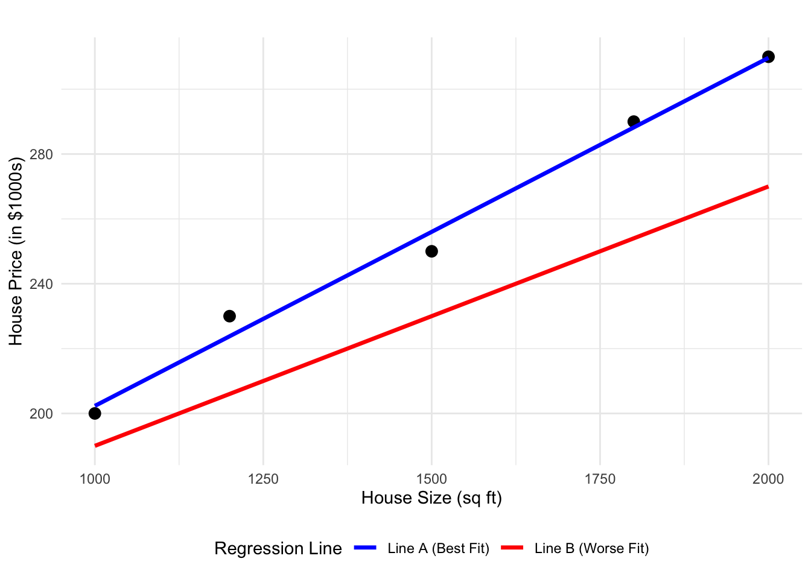
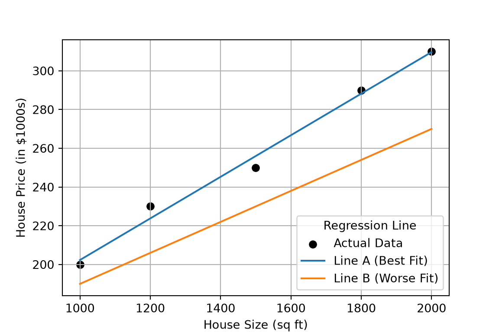
3.3.1 Understanding Residuals
For each observation, the residual is the difference between the observed response value \(Y_i\) and the response value predicted by the fitted regression line, denoted by \(\hat{Y}_i\). For the \(i\)-th observation, the residual is
\[ e_i = Y_i - \hat{Y}_i. \tag{3.1}\]
Here, \(Y_i\) represents the observed response value for the \(i\)-th observation, while \(\hat{Y}_i\) represents the corresponding predicted response value from the fitted model. Graphically, the residual is the signed vertical difference between the observed data point and the fitted regression line at the same value of \(x\).
A positive residual means that the observed response lies above the fitted line, whereas a negative residual means that the observed response lies below the fitted line. When the fitted line represents the data well, we generally expect the residuals to be relatively small.
OLS quantifies how well a line fits the observed data using the sum of squared residuals, commonly referred to as the Sum of Squared Errors (SSE). It is calculated by:
- Computing the residual \(e_i = Y_i - \hat{Y}_i\) for each observation.
- Squaring each residual so that positive and negative residuals do not cancel each other out.
- Summing the squared residuals across all \(n\) observations.
Mathematically, the SSE is
\[ SSE = \sum_{i=1}^{n} e_i^2 = \sum_{i=1}^{n} \left(Y_i - \hat{Y}_i\right)^2. \tag{3.2}\]
A smaller SSE indicates that the predicted values are, overall, closer to the observed response values. Using the criterion defined in Equation 3.2, Ordinary Least Squares chooses the regression line whose coefficient estimates produce the smallest possible SSE.
3.3.2 Quantifying the Fit with SSE
We can now compare Line A and Line B quantitatively using the SSE defined in Equation 3.2. For each line, we calculate the residual for every observation, square these residuals, and then sum them across all observations. The line with the smaller SSE provides the better least-squares fit to the observed data.
The code below calculates and compares the SSE for the two lines:
# Calculate the Sum of Squared Errors for the correct model (Blue)
sse_correct <- sum((df$Price - df$Predicted_Correct)^2)
# Calculate the Sum of Squared Errors for the manually adjusted model (Red)
sse_wrong <- sum((df$Price - df$Predicted_Wrong)^2)
# Print the SSEs for each line
cat("SSE for Best-Fit Line (Blue line):", sprintf("%.2f", sse_correct), "\n")
cat("SSE for Worse-Fit Line (Red line):", sprintf("%.2f", sse_wrong), "\n")# Calculate the Sum of Squared Errors for the correct model (Blue)
sse_correct = np.sum((df['Price'] - df['Predicted_Correct']) ** 2)
# Calculate the Sum of Squared Errors for the manually adjusted model (Red)
sse_wrong = np.sum((df['Price'] - df['Predicted_Wrong']) ** 2)
# Print the SSEs for each line
print(f"SSE for Best-Fit Line (Blue line): {sse_correct:.2f}")
print(f"SSE for Worse-Fit Line (Red line): {sse_wrong:.2f}")SSE for Best-Fit Line (Blue line): 83.24 SSE for Worse-Fit Line (Red line): 3972.00 SSE for Best-Fit Line (Blue line): 83.24SSE for Worse-Fit Line (Red line): 3972.00The results show that the blue line (Line A) has a substantially smaller SSE compared to the red line (Line B). This indicates that overall the predicted values from Line A are closer to the observed response values according to the least-squares criterion.
Therefore, among these two candidate lines, OLS prefers Line A because it produces the smaller sum of squared residuals. More generally, Ordinary Least Squares estimates the regression coefficients by finding the values that minimize the SSE.
3.3.3 Why Squared Errors?
Residuals can be either positive or negative. If we simply added the residuals together, positive and negative values could cancel each other out, making a poorly fitting model appear better than it actually is. Squaring each residual avoids this problem because every squared residual is non-negative.
Squaring also gives greater weight to larger residuals. For example, a residual of \(10\) contributes \(10^2 = 100\) to the SSE, whereas a residual of \(2\) contributes only \(2^2 = 4\). As a result, observations with large residuals have a greater influence on the least-squares criterion.
This is why OLS uses the sum of squared residuals rather than the simple sum of residuals. The fitted regression coefficients are chosen to make this quantity, defined in Equation 3.2, as small as possible.
3.3.4 The Mathematical Formulation of the OLS Model
Now that we understand how OLS chooses the best-fitting line by minimizing the sum of squared residuals, we can describe the model more formally.
Suppose we observe \(n\) independent observations. For the \(i\)-th observation, let \(Y_i\) denote the continuous response variable and let \(x_i\) denote the value of a single regressor, where \(i = 1, 2, \ldots, n\). Here, \(i = 1, 2, \ldots, n\) indexes the observations in the dataset, where \(n\) is the total number of observations.
We define the conditional mean of the response as
\[ \mu_i = \mathbb{E}(Y_i \mid x_i), \tag{3.3}\]
where \(\mu_i\) represents the expected value of the response for an observation with regressor value \(x_i\).
In a simple linear regression model, this expected response is modeled as a linear function of the regressor:
\[ \mu_i = \eta_i = \beta_0 + \beta_1 x_i, \tag{3.4}\]
where \(\eta_i\) is called the linear predictor. In OLS regression, the conditional mean \(\mu_i\) is directly equal to the linear predictor \(\eta_i\). This corresponds to using an identity link:
\[ g(\mu_i) = \mu_i = \eta_i. \tag{3.5}\]
For now, we assume that the conditional mean \(\mu_i\) is equal to the linear predictor \(\eta_i\). This relationship is called the identity link, and we will discuss more of these link functions with more detail in later chapters.
The observed response \(Y_i\) will generally not fall exactly on its expected value \(\mu_i\). We account for this unexplained variation using an error term \(\epsilon_i\):
\[ Y_i = \mu_i + \epsilon_i. \tag{3.6}\]
Substituting the linear predictor from Equation 3.4 gives the familiar simple linear regression model:
\[ Y_i = \beta_0 + \beta_1 x_i + \epsilon_i. \tag{3.7}\]
where:
- \(Y_i\) is the observed response value for the \(i\)-th observation.
- \(\mu_i = \mathbb{E}(Y_i \mid x_i)\) is the expected response value given \(x_i\).
- \(x_i\) is the observed value of the regressor for the \(i\)-th observation.
- \(\eta_i = \beta_0 + \beta_1 x_i\) is the linear predictor.
- \(\beta_0\) is the intercept, representing the expected value of \(Y_i\) when \(x_i = 0\).
- \(\beta_1\) is the slope coefficient, representing the expected change in \(Y_i\) associated with a one-unit increase in \(x_i\).
- \(\epsilon_i\) is the random error term, representing variation in \(Y_i\) that is not explained by the linear relationship with \(x_i\).
OLS coefficient estimates can be computed without imposing distributional assumptions on the error terms. However, assumptions about the error terms are important for establishing statistical properties of the OLS estimator and for performing statistical inference, such as constructing confidence intervals or conducting hypothesis tests (which we will see later in this chapter).
For the classical linear regression model used for statistical inference, we assume that the error terms are independent, have mean zero, and have constant variance:
\[ \mathbb{E}(\epsilon_i \mid x_i) = 0 \qquad \text{and} \qquad \operatorname{Var}(\epsilon_i \mid x_i) = \sigma^2. \tag{3.8}\]
For hypothesis tests and confidence intervals under the classical Normal linear model, we additionally assume
\[ \epsilon_i \mid x_i \sim \mathcal{N}(0,\sigma^2). \tag{3.9}\]
This notation means that, for a given value of the regressor \(x_i\), the error term \(\epsilon_i\) is assumed to follow a Normal distribution with mean \(0\) and variance \(\sigma^2\). In other words, the errors are centered around zero, and \(\sigma^2\) represents the amount of variability in the response that is not explained by the regression model.
Equivalently, the conditional distribution of the response can be written as
\[ Y_i \mid x_i \sim \mathcal{N}(\mu_i,\sigma^2), \qquad \mu_i = \beta_0 + \beta_1 x_i. \tag{3.10}\]
This formulation highlights the three main components of the model: 1) the response distribution, 2) the linear predictor, and 3) the identity link connecting the expected response to the regressors. Later in this chapter, we will extend this formulation from a single regressor to multiple regressors.
3.4 Case Study: Understanding Financial Behaviors
To demonstrate Ordinary Least Squares (OLS) in action, we will walk through a case study using a toy dataset. This case study will help us understand the financial behaviors of students and identify the factors that are associated with their Net_Money, the amount of money left over at the end of each month. We will approach this case study using the data science workflow described in Chapter 1, ensuring a structured approach to problem-solving and model building.
3.4.1 The Dataset
Our dataset captures various aspects of students’ financial lives. Each row represents one student, while the columns describe different financial, demographic, and behavioral characteristics. Table 3.1 summarizes the response variable and regressors used in this case study, along with their variable type, scale, model role, and coding name.
| Variable | Type | Scale | Model Role | Coding Name |
|---|---|---|---|---|
| Has Job (0 = No, 1 = Yes) | Discrete | Binary | Regressor | Has_Job |
| Year of Study (e.g., 1st, 2nd, etc.) | Discrete | Ordinal | Regressor | Year_of_Study |
| Financially Dependent (0 = No, 1 = Yes) | Discrete | Binary | Regressor | Financially_Dependent |
| Monthly Allowance (CAD) | Continuous | Positively unbounded | Regressor | Monthly_Allowance |
| Cooks at Home (0 = No, 1 = Yes) | Discrete | Binary | Regressor | Cooks_at_Home |
| Living Situation (Family, Shared, Alone, etc.) | Discrete | Categorical | Regressor | Living_Situation |
| Housing Type (Rent, Own, Dormitory) | Discrete | Categorical | Regressor | Housing_Type |
| Goes Out & Spends Money (1 = Rarely, 5 = Very often) | Discrete | Ordinal | Regressor | Goes_Out_Spends_Money |
| Drinks Alcohol (0 = No, 1 = Yes) | Discrete | Binary | Regressor | Drinks_Alcohol |
| Net Money (CAD) | Continuous | Unbounded | Response | Net_Money |
| Monthly Earnings (CAD) | Continuous | Positively unbounded | Regressor | Monthly_Earnings |
Let us load this sample of \(n = 1,000\) students in both R and Python. For Python, we will use the pandas library. Table 3.2 and Table 3.3 show the first 100 rows of the dataset in R and Python, respectively.
# Showing the first 100 rows of the toy dataset
head(data, n = 100)# Showing the first 100 rows of the toy dataset
print(data.head(100))This dataset allows us to examine how students’ financial, demographic, and behavioral characteristics are associated with their Net_Money.
3.4.2 The Problem We’re Trying to Solve
Our goal in this case study is to understand which student characteristics are associated with their Net Money (Net_Money). Specifically, we are interested in whether characteristics such as employment status, monthly earnings, financial support, spending behavior, and living arrangements help explain why some students have more money left over at the end of the month than others.
The main question we want to answer is:
Which student characteristics are associated with differences in
Net_Money?
By applying OLS to this dataset, we can:
Estimate the association between each regressor and
Net_Money. For example, we can estimate the expected change inNet_Moneyassociated with a one-unit increase in monthly earnings.Determine whether these associations are positive or negative.
Examine the association between each regressor and
Net_Moneywhile holding the other regressors fixed.Quantify the uncertainty associated with the estimated regression coefficients using standard errors, confidence intervals, and hypothesis tests.
Evaluate how well the fitted regression model describes variation in
Net_Money.
In the next section, we will clarify whether these questions are primarily inferential or predictive and define the study design used in this case study.
3.5 Study Design
Now that we have introduced the case study and defined the main statistical question, we need to clarify the purpose of our analysis. In this case, our primary goal is to understand how different student characteristics are associated with Net_Money rather than simply producing accurate predictions.
To make this distinction more precise, we consider two common goals of regression analysis: inference and prediction.
3.5.1 Inferential vs. Predictive Analysis
Following the data science workflow, the purpose of the analysis determines how we fit, evaluate, and interpret a regression model.
Inferential analysis focuses on understanding and quantifying the relationship between the regressors and the response variable. In our case, we are interested in estimating how characteristics such as employment status, monthly earnings, and spending behavior are associated with
Net_Money, while accounting for the other regressors in the model. Statistical inference also allows us to quantify uncertainty in these estimated relationships using tools such as standard errors, confidence intervals, and hypothesis tests.Predictive analysis focuses on accurately predicting the response for new observations. For example, we might ask how accurately we can predict a student’s
Net_Moneybased on their financial and demographic characteristics. In this setting, the emphasis is primarily on predictive performance rather than on interpreting individual regression coefficients.
OLS can be used for either purpose. In this case study, our primary focus is inferential, because we want to understand and quantify the relationships between student characteristics and Net_Money. For example, we are interested in questions such as:
Is having a job associated with differences in a student’s expected
Net_Money?How is monthly earnings associated with expected
Net_Money?How are spending behaviors, such as going out and spending money more frequently, associated with expected
Net_Money?
Later in the chapter, we will also briefly examine the predictive performance of the fitted OLS model to illustrate how the same model can be used to predict Net_Money for new observations.
3.6 Data Collection and Wrangling
With the statistical questions clearly defined, the next step is to consider how the data were collected and prepared for analysis. Although the dataset is already available, understanding how the data could have been collected helps us assess its context, quality, and potential limitations.
3.6.1 Data Collection
Because this is a toy dataset, there is no actual data collection process to describe. However, in a real study addressing similar questions, data on students’ financial behaviors could be collected through several sources:
Surveys: Students could be asked about their employment status, earnings, financial support, and spending habits through structured questionnaires. Although surveys can capture information that may not be available from administrative records, they can be affected by recall bias or social desirability bias.
Administrative Data: Universities, employers, or other institutions may maintain records related to student employment, financial aid, or earnings. Such records can provide more objective information, although access may be limited because of privacy and confidentiality requirements.
Financial Tracking Apps: Digital financial management tools can provide detailed information on income and spending patterns over time. However, using these data may introduce selection bias because students who use financial tracking apps may differ systematically from those who do not.
Regardless of the data collection method, potential issues such as missing data, measurement or reporting errors, and selection bias should be considered. Addressing these issues is an important part of preparing data for analysis. A detailed treatment of data collection methods and sampling design is beyond the scope of this book.
3.6.2 Data Wrangling
The next step is to prepare the dataset for analysis. In this section, we check for missing values, ensure that categorical variables are encoded appropriately, examine potential outliers, and consider how the data should be organized for modelling with OLS.
1. Checking for Missing Values
An important step in data preparation is checking for missing values. Missing data can occur for many reasons, such as unanswered survey questions, unrecorded measurements, or data-entry errors. If missing values are present, we need to decide how they should be handled before fitting the regression model.
Common approaches include:
Removing incomplete observations: Excluding observations with missing values when doing so is appropriate for the analysis.
Imputing missing values: Replacing missing values using an appropriate imputation method so that the observations can remain in the analysis.
Heads-up on missing values!
The appropriate treatment of missing data depends on why the values are missing and on the goals of the analysis. Different approaches can lead to different conclusions. A detailed treatment of missing-data mechanisms and imputation methods is beyond the scope of this book, but analysts should always report how missing values were handled and consider how these choices may affect the results.
In our toy dataset, there are no missing values, as confirmed by:
# Count missing values in each column
data.isna().sum()Has_Job 0
Year_of_Study 0
Financially_Dependent 0
Monthly_Allowance 0
Cooks_at_Home 0
Living_Situation 0
Housing_Type 0
Goes_Out_Spends_Money 0
Drinks_Alcohol 0
Net_Money 0
Monthly_Earnings 0
dtype: int642. Encoding Categorical Variables
Before fitting the regression model, we need to make sure that categorical variables are represented appropriately. Variables such as Has_Job, Drinks_Alcohol, Financially_Dependent, and Cooks_at_Home have two categories, while Living_Situation and Housing_Type contain more than two categories.
In R, we represent these variables as factors. In Python, we convert them to the categorical data type. When the regression model is fitted, the software will use these categorical variables to create the necessary indicator variables and compare each category with a reference category.
For this analysis, the reference categories are No for the binary variables, Family for Living_Situation, and Rent for Housing_Type.
The ordinal variables Year_of_Study and Goes_Out_Spends_Money are left in their numerical form in this analysis. We will discuss this modelling choice in more detail when we interpret the fitted regression model.
# Convert categorical variables to factors
data <- data |>
mutate(
Has_Job = factor(Has_Job, levels = c(0,1), labels = c("No", "Yes")),
Drinks_Alcohol = factor(Drinks_Alcohol, levels = c(0,1), labels = c("No", "Yes")),
Financially_Dependent = factor(Financially_Dependent, levels = c(0,1), labels = c("No", "Yes")),
Cooks_at_Home = factor(Cooks_at_Home, levels = c(0,1), labels = c("No", "Yes")),
Living_Situation = factor(Living_Situation, levels = c(1,2,3), labels = c("Family", "Shared", "Alone")),
Housing_Type = factor(Housing_Type, levels = c(1,2,3), labels = c("Rent", "Own", "Dormitory"))
)# Encode binary categorical variables and set reference categories
binary_mappings = {
"Has_Job": {0: "No", 1: "Yes"},
"Drinks_Alcohol": {0: "No", 1: "Yes"},
"Financially_Dependent": {0: "No", 1: "Yes"},
"Cooks_at_Home": {0: "No", 1: "Yes"},
}
for column, mapping in binary_mappings.items():
data[column] = data[column].map(mapping)
data[column] = pd.Categorical(
data[column],
categories=["No", "Yes"]
)
# Encode categorical variables with more than two levels
data["Living_Situation"] = data["Living_Situation"].map({
1: "Family",
2: "Shared",
3: "Alone"
})
data["Living_Situation"] = pd.Categorical(
data["Living_Situation"],
categories=["Family", "Shared", "Alone"]
)
data["Housing_Type"] = data["Housing_Type"].map({
1: "Rent",
2: "Own",
3: "Dormitory"
})
data["Housing_Type"] = pd.Categorical(
data["Housing_Type"],
categories=["Rent", "Own", "Dormitory"]
)3. Examining Potential Outliers
Continuous variables such as Monthly_Earnings and Net_Money may contain observations that are unusually large or small compared with the rest of the data. Because unusual observations can have a substantial influence on an OLS regression model, they should be examined carefully rather than automatically removed.
One common exploratory approach is the Interquartile Range (IQR) rule, which flags observations that fall below \(Q_1 - 1.5 \times IQR\) or above \(Q_3 + 1.5 \times IQR\) as potential outliers. Importantly, being flagged by this rule does not necessarily mean that an observation is incorrect or should be excluded from the analysis.
# Function to identify potential outliers using the IQR rule
identify_outliers <- function(x) {
Q1 <- quantile(x, 0.25, na.rm = TRUE)
Q3 <- quantile(x, 0.75, na.rm = TRUE)
IQR_value <- Q3 - Q1
x < (Q1 - 1.5 * IQR_value) | x > (Q3 + 1.5 * IQR_value)
}
# Count potential outliers in Monthly_Earnings
sum(identify_outliers(data$Monthly_Earnings))[1] 0# Count potential outliers in Net_Money
sum(identify_outliers(data$Net_Money))[1] 3# Function to identify potential outliers using the IQR rule
def identify_outliers(series):
Q1 = series.quantile(0.25)
Q3 = series.quantile(0.75)
IQR = Q3 - Q1
return (series < Q1 - 1.5 * IQR) | (series > Q3 + 1.5 * IQR)
# Count potential outliers in Monthly_Earnings
identify_outliers(data["Monthly_Earnings"]).sum()np.int64(0)# Count potential outliers in Net_Money
identify_outliers(data["Net_Money"]).sum()np.int64(3)4. A Note on Data Splitting
Whether a dataset should be divided into training and testing sets depends on the goal of the analysis and how the data will be used.
In this case study, we are interested in both inference and prediction, so we will divide the data into separate training and testing sets.
For the inferential analysis, the training data will be used for exploratory analysis, model development, and diagnostic checks. The testing data will then be used for the final inferential analysis, allowing us to examine the regression coefficients, standard errors, confidence intervals, and hypothesis tests on observations that were not used during the earlier stages of model development.
For the predictive analysis, the OLS model will be fitted using the training data and then used to generate predictions for the testing data. The testing data will therefore provide an independent set of observations for evaluating how well the fitted model predicts Net_Money.
Using separate training and testing sets helps us keep the model-development stage distinct from the final inferential and predictive evaluations.
# Import the R-generated training and testing datasets
train_data = r.train_data
test_data = r.test_dataThe data are randomly divided into training and testing sets using a fixed seed for reproducibility. To ensure that the R and Python analyses use exactly the same observations, the split is generated in R and the resulting training and testing datasets are imported into the Python environment. This follows the workflow introduced in Chapter 1.
At this stage, we have checked for missing values, encoded the categorical variables, examined potential outliers, and created the training and testing datasets. The data are now ready for exploratory analysis and subsequent OLS modelling.
These steps represent some of the most common data-wrangling tasks, but the exact preparation required will depend on the dataset and the goals of the analysis. Other datasets may require additional steps, such as addressing duplicate observations, transforming variables, or reconsidering how particular variables should be represented in the model.
3.7 Exploratory Data Analysis (EDA)
Before fitting the regression model, it is important to have a good understanding of the variables in the dataset and the relationships among them. This stage, known as Exploratory Data Analysis (EDA), allows us to summarize and visualize the data. This step is important since it allows us to identify important patterns, examine unusual observations, and notice potential issues that may affect our modelling decisions.
EDA can also provide an initial intuition of whether some modelling assumptions may be reasonable although the main OLS assumptions will be assessed more formally after the model has been fitted. We will review them later in this chapter.
3.7.1 Classifying Variables
An important part of EDA is identifying the type and role of each variable. This helps determine which summaries and visualizations are appropriate and how the variables should be represented in the regression model.
In our toy dataset:
-
Net_Moneyis the continuous response variable.
The regressors include a mixture of binary, categorical, ordinal, and continuous variables:
Binary regressors, such as
Has_JobandDrinks_Alcohol, contain two categories.Categorical regressors, such as
Living_SituationandHousing_Type, represent different groups without a natural numerical ordering.Ordinal regressors, such as
Year_of_StudyandGoes_Out_Spends_Money, have categories with a meaningful ordering. As discussed earlier, we retain their numerical representation in this analysis.Continuous regressors, such as
Monthly_AllowanceandMonthly_Earnings, can take a range of numerical values and are useful to examine through summaries and graphical displays.
Understanding the type of each variable helps us choose appropriate exploratory tools and interpret the variables correctly when we fit the OLS model.
3.7.2 Visualizing Variable Distributions
Once the variables have been classified, the next step is to examine their distributions. Exploring individual variables helps us understand characteristics such as their range, center, spread, shape, and the presence of any unusual observations. Different graphical and numerical summaries are useful depending on the type of variable.
Response Variable: Net_Money
We begin by examining the distribution of the response variable, Net_Money. Because Net_Money is continuous, graphical summaries such as histograms and boxplots are useful for understanding its overall shape, centre, spread, and the presence of potentially unusual observations.
We examine the distribution of Net_Money using the training data, since the exploratory analysis is part of the model-development stage.
Histogram
A histogram provides a visual summary of the distribution of a continuous variable by grouping observations into intervals and displaying the number of observations that belongs to each interval. It can help us examine the overall shape, center, and spread of the response variable.
The histogram below shows the distribution of Net_Money in the training data. The distribution appears reasonably symmetric, with most observations concentrated near the center and fewer observations toward the extremes.
At this stage, we are simply describing the distribution of the response variable. The Normality assumption for OLS concerns the model errors rather than the marginal distribution of Net_Money, and we will assess this assumption later using model diagnostics.
hist_net_money <- ggplot(train_data, aes(x = as.numeric(Net_Money))) +
geom_histogram(binwidth = 100, fill = "navyblue", color = "white") +
labs(x = "\n Net Money (CAD)", y = "Count\n") +
theme_bw() +
theme(
axis.text = element_text(size = 15.5),
axis.title.x = element_text(size = 20),
axis.title.y = element_text(size = 20, vjust = 0.5),
strip.text = element_text(size = 20)
) +
scale_x_continuous(labels = label_dollar(), breaks = seq(-1500, 2000, by = 500)) +
scale_y_continuous(breaks = seq(0, 50, by = 10))
hist_net_moneyimport matplotlib.pyplot as plt
import numpy as np
from matplotlib.ticker import FuncFormatter
# Match ggplot binwidth = 100
bins = np.arange(-1500, 2000 + 100, 100)
# Create histogram
plt.figure(figsize=(8, 5))
plt.hist(
train_data["Net_Money"].dropna().astype(float),
bins=bins,
color="navy",
edgecolor="white"
)
# Axis labels
plt.xlabel("\n Net Money (CAD)", fontsize = 15)
plt.ylabel("Count", fontsize = 15)
# Match x-axis and y-axis breaks
plt.xticks(np.arange(-1500, 2000 + 1, 500), fontsize=15.5)
plt.yticks(np.arange(0, 50 + 1, 10), fontsize=15.5)
# Format x-axis labels as dollars
plt.gca().xaxis.set_major_formatter(
FuncFormatter(lambda x, pos: f"${x:,.0f}")
)
# Similar to theme_bw()
plt.grid(False)
plt.gca().set_facecolor("white")
plt.gcf().set_facecolor("white")
# Add border around plot area
for spine in plt.gca().spines.values():
spine.set_visible(True)
plt.tight_layout()
plt.show()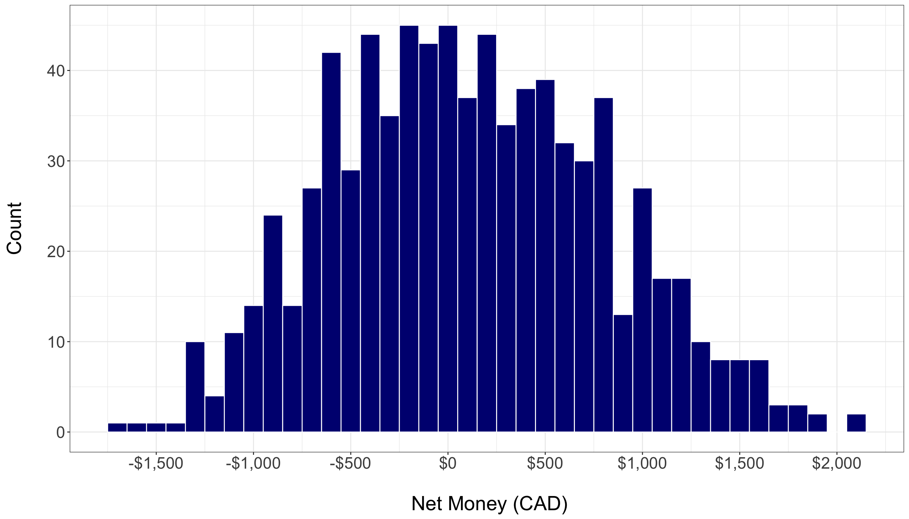
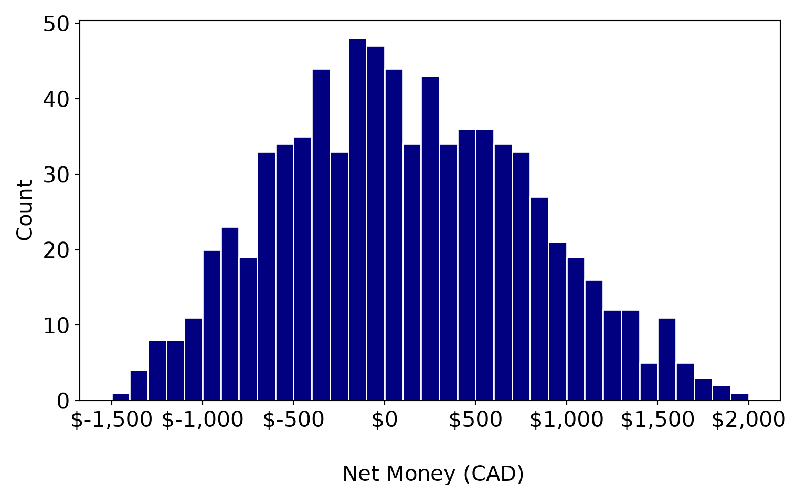
Boxplot
A boxplot provides a compact summary of a continuous variable by displaying its median, quartiles, and overall spread. It can also help identify potentially unusual observations.
As discussed during data wrangling, observations below \(Q_1 - 1.5 \times IQR\) or above \(Q_3 + 1.5 \times IQR\) are commonly flagged as potential outliers, where \(IQR = Q_3 - Q_1\). These observations are not necessarily errors and should not automatically be removed.
The boxplot below provides another view of the distribution of Net_Money in the training data. In this case, the plot does not indicate any observations beyond the usual \(1.5 \times IQR\) thresholds.
boxplot_net_money <- ggplot(train_data, aes(
x = "",
y = as.numeric(Net_Money)
)) +
geom_boxplot(fill = "#56B4E9") +
labs(
x = "",
y = "Net Money (CAD)\n"
) +
theme_bw() +
theme(
axis.text = element_text(size = 15.5),
axis.title.x = element_text(size = 20),
axis.title.y = element_text(size = 20, vjust = 0.5),
strip.text = element_text(size = 20)
) +
coord_cartesian(ylim = c(-1800, 2000)) +
scale_y_continuous(
labels = label_dollar(),
breaks = seq(-1500, 2000, by = 500)
) +
theme(legend.position = "none")
boxplot_net_moneyfig, ax = plt.subplots(figsize=(4, 6))
ax.boxplot(train_data["Net_Money"].dropna(), patch_artist=True,
boxprops=dict(facecolor="lightblue"));
ax.set_title("Boxplot of Net Money")
ax.set_ylabel("Net Money")
ax.set_xticks([1])
ax.set_xticklabels([""])
plt.tight_layout()
plt.show()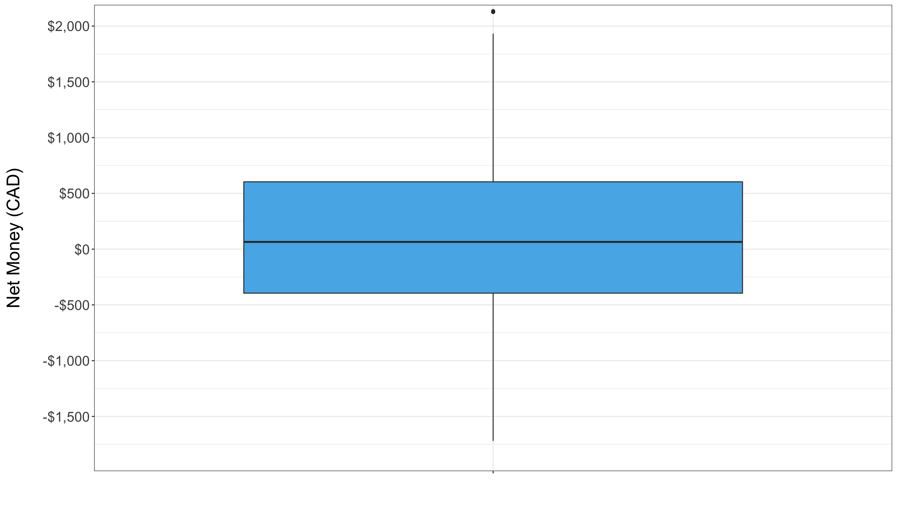
Text(0, 0.5, 'Net Money')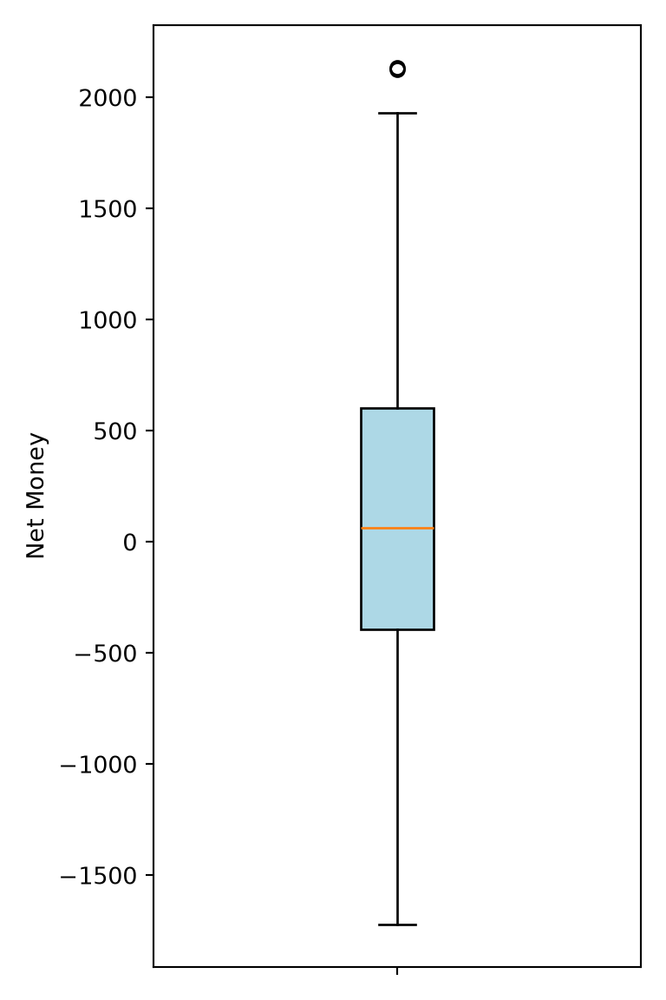
By examining the histogram and boxplot together, we obtain an initial understanding of the distribution, spread, and potential unusual values of Net_Money. These exploratory summaries describe the response variable before we begin examining the distributions of the regressors and their relationships with Net_Money.
Categorical and Ordinal Regressors
Categorical and ordinal regressors are examined differently from continuous variables because their values represent distinct groups or ordered levels rather than measurements on a continuous scale. Bar charts are useful for displaying the number of observations in each category and for identifying categories that are much more or less common than others.
As an example, we examine the distribution of Living_Situation, a categorical regressor with three levels: Family, Shared, and Alone. The bar chart below shows the number of students in each category in the training data.
barplot_living <- ggplot(train_data, aes(x = factor(Living_Situation))) +
geom_bar(fill = "#56B4E9", width = 0.5) +
labs(
x = "\n Living Situation",
y = "Count\n"
) +
theme_bw() +
theme(
axis.text = element_text(size = 15.5),
axis.title.x = element_text(size = 20),
axis.title.y = element_text(size = 20, vjust = 0.5),
strip.text = element_text(size = 20)
) +
theme(legend.position = "none")
barplot_living# Count occurrences of each category
living_counts = train_data["Living_Situation"].dropna().astype(str).value_counts()
# Bar plot of Living Situation
plt.bar(living_counts.index, living_counts.values, color="#56B4E9")
plt.xlabel("Living Situation")
plt.ylabel("Frequency")
plt.tight_layout()
plt.show()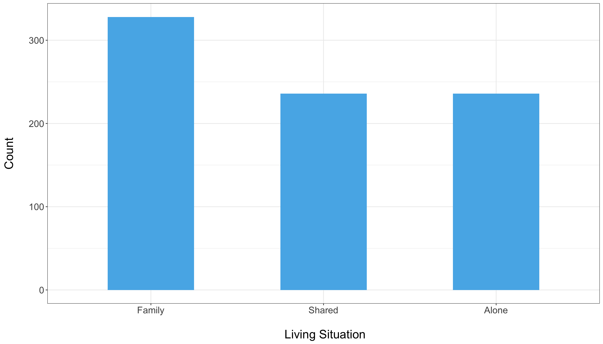
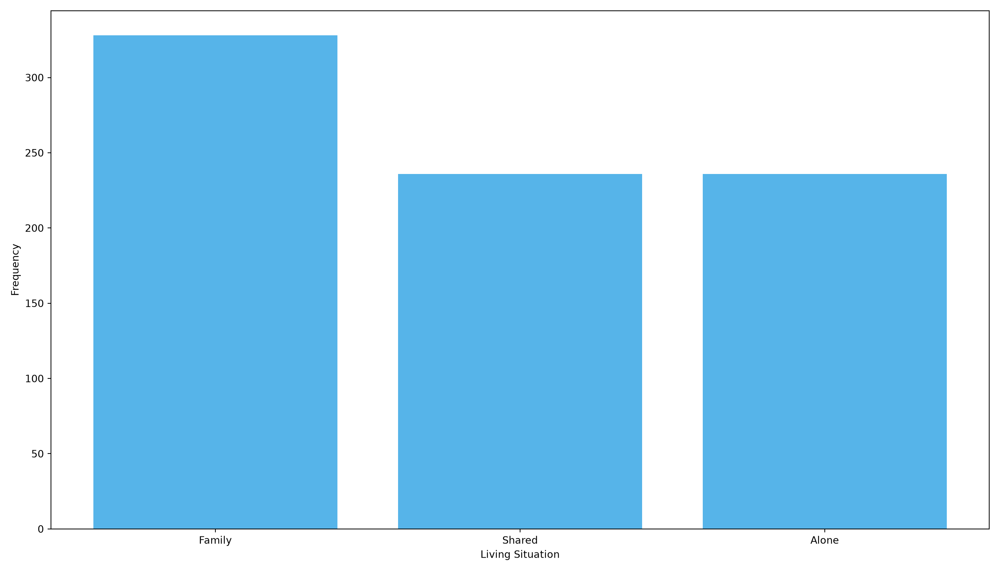
Ordinal regressors, such as Year_of_Study and Goes_Out_Spends_Money also have distinct levels, but these levels have a meaningful ordering. Bar charts can be used to examine how observations are distributed across these ordered values. As discussed earlier, we retain these variables in numerical form for the current analysis which assumes that a one-unit increase has a consistent interpretation in the regression model.
Numerical Regressors
For numerical regressors, descriptive statistics provide a useful complement to graphical exploration. Measures such as the mean, median, minimum, maximum, and quartiles help summarize the centre, spread, and range of the observed values.
For example, comparing the mean and median of Monthly_Earnings can provide an initial indication of whether its distribution is symmetric or skewed. Large differences between these summaries may motivate a closer examination of the variable’s distribution and potentially unusual observations.
# Summary statistics for numerical variables
summary(train_data[, c("Net_Money", "Monthly_Allowance", "Monthly_Earnings")]) Net_Money Monthly_Allowance Monthly_Earnings
Min. :-1719.38 Min. : 51.33 Min. : 0.0
1st Qu.: -394.79 1st Qu.:393.79 1st Qu.: 0.0
Median : 64.75 Median :505.43 Median : 163.3
Mean : 111.83 Mean :501.61 Mean : 495.3
3rd Qu.: 603.66 3rd Qu.:603.92 3rd Qu.:1002.4
Max. : 2133.42 Max. :947.79 Max. :1839.9 # Summary statistics for numerical variables
print(
train_data[["Net_Money", "Monthly_Allowance", "Monthly_Earnings"]].describe()
)3.7.3 Visualizing Regressor Relationships with the Response
After examining the distributions of individual variables, we next explore how the regressors are related to the response variable, Net_Money. These exploratory relationships can help us identify patterns that may be useful when specifying the regression model, such as possible linear trends or differences in the response across groups.
These relationships are examined using the training data. At this stage, the results are descriptive and should not be interpreted as adjusted regression effects, since each visualization considers only a small number of variables at a time.
Continuous Regressors vs. Response
For continuous regressors, we can examine their relationships with Net_Money using graphical and numerical summaries. Scatterplots allow us to visualize the form and direction of these relationships, while correlations provide a numerical summary of the strength and direction of linear association.
Scatterplots
Scatterplots are useful for examining the relationship between two continuous variables. For example, plotting Monthly_Allowance against Net_Money allows us to examine whether students with higher monthly allowances tend to have higher or lower values of Net_Money.
In the scatterplot below, we observe a slight positive relationship between Monthly_Allowance and Net_Money, although there is considerable variability around the fitted line. This suggests that Monthly_Allowance alone does not explain all of the variation in Net_Money.
Scatterplots can also help identify possible nonlinear patterns or unusual observations that may warrant further investigation. However, this is a bivariate relationship and does not account for the other regressors that will be included in the multiple regression model.
scatterplot_allowance_vs_net_money <- ggplot(
train_data,
aes(x = as.numeric(Monthly_Allowance), y = as.numeric(Net_Money))
) +
geom_point(alpha = 0.55, color = "#0073C2FF", size = 2) +
geom_smooth(method = "lm", se = FALSE, color = "red") +
labs(
x = "\n Monthly Allowance (CAD)",
y = "Net Money (CAD)\n"
) +
theme_bw() +
theme(
axis.text = element_text(size = 15.5),
axis.title.x = element_text(size = 20),
axis.title.y = element_text(size = 20, vjust = 0.5),
strip.text = element_text(size = 20)
) +
coord_cartesian(
xlim = c(0, 1100),
ylim = c(-1800, 2000)
) +
scale_y_continuous(
labels = label_dollar(),
breaks = seq(-1500, 2000, by = 500)
) +
scale_x_continuous(
labels = label_dollar(),
breaks = seq(0, 2000, by = 500)
)
scatterplot_allowance_vs_net_moneyimport matplotlib.pyplot as plt
import seaborn as sns
# Scatter plot with regression line
plt.figure(figsize=(6, 4))
sns.regplot(
data=train_data,
x="Monthly_Allowance",
y="Net_Money",
scatter_kws={"color": "blue", "s": 10}, # s = point size
line_kws={"color": "red", "linewidth": 2}
)
plt.title("")
plt.xlabel("Monthly Allowance")
plt.ylabel("Net Money")
plt.tight_layout()
plt.show()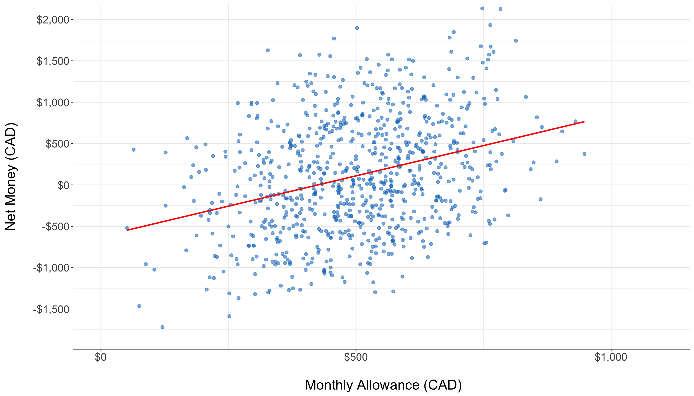
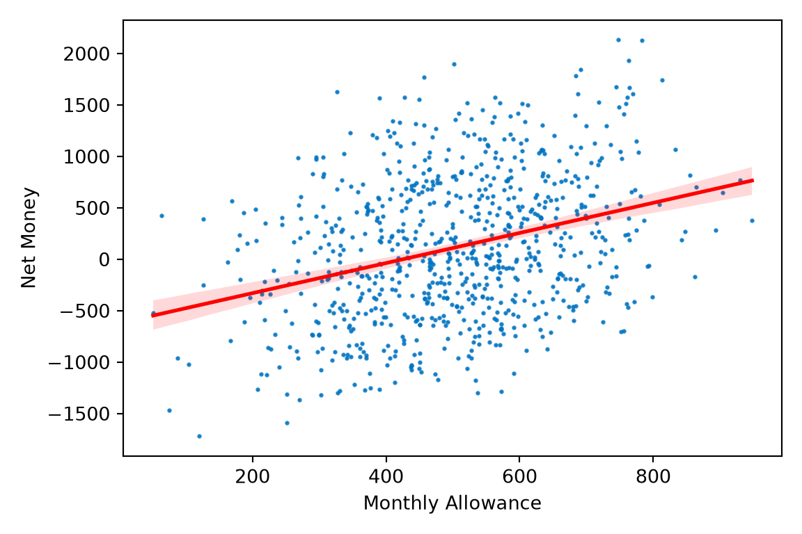
Correlation Matrix
For continuous variables, a correlation matrix provides a numerical summary of the strength and direction of the linear relationship between pairs of variables. Correlations between the response and continuous regressors can help describe their bivariate relationships, while high correlations among regressors may indicate potential multicollinearity.
For illustration, we examine the correlations among Net_Money, Monthly_Allowance, and Monthly_Earnings.
# Compute correlation matrix
eda_corr <- cor(
train_data[, c("Net_Money", "Monthly_Allowance", "Monthly_Earnings")],
use = "complete.obs"
)
# Rename variables for display
colnames(eda_corr) <- rownames(eda_corr) <- c(
"Net Money",
"Monthly Allowance",
"Monthly Earnings"
)
# Color palette
col_palette <- viridis::viridis(200)
# Plot
corrplot(
eda_corr,
method = "number",
type = "upper",
tl.col = "black",
tl.cex = 1.5,
number.cex = 2,
col = col_palette,
cl.ratio = 0.3
)import pandas as pd
import matplotlib.pyplot as plt
import seaborn as sns
# Compute correlation matrix
eda_corr = train_data[
["Net_Money", "Monthly_Allowance", "Monthly_Earnings"]
].corr()
# Rename variables for display
eda_corr.index = [
"Net Money",
"Monthly Allowance",
"Monthly Earnings"
]
eda_corr.columns = [
"Net Money",
"Monthly Allowance",
"Monthly Earnings"
]
# Plot
plt.figure(figsize=(6, 5))
sns.heatmap(
eda_corr,
annot=True,
fmt=".2f",
cmap="viridis",
vmin=-1,
vmax=1,
square=True,
linewidths=0.5,
cbar_kws={"shrink": 0.7}
)
plt.xticks(rotation=45, ha="right", fontsize=11)
plt.yticks(rotation=0, fontsize=11)
plt.tight_layout()
plt.show()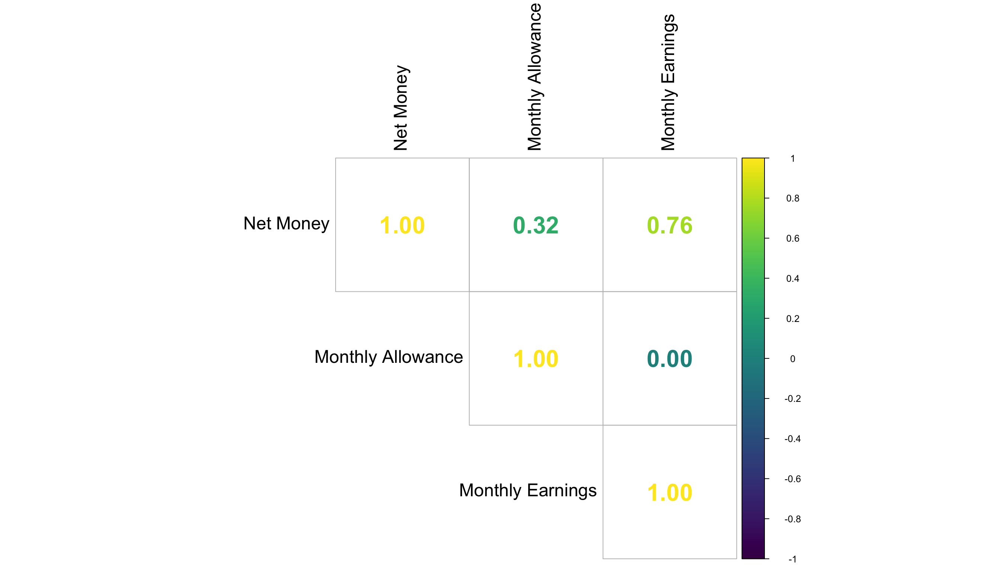
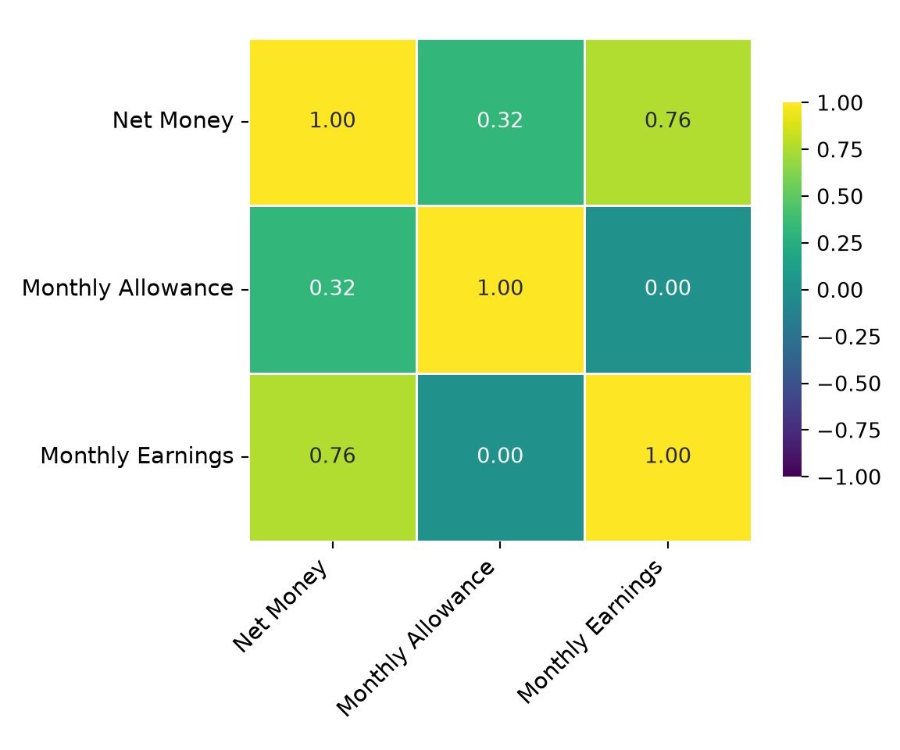
The correlation matrix shows a strong positive correlation (\(r = 0.76\)) between Monthly_Earnings and Net_Money in the training data. This indicates that students with higher monthly earnings tend to have higher values of Net_Money. However, this is a bivariate association and does not account for the other regressors included in the model.
Side-by-Side Boxplots
For categorical regressors, side-by-side boxplots are useful for comparing the distribution of the response variable across groups. For example, examining Net_Money across the levels of Living_Situation allows us to compare the centre, spread, and overall distribution of the response among students with different living arrangements.
In the boxplot below, the distributions of Net_Money across the Living_Situation categories appear fairly similar. This suggests that the bivariate association between Living_Situation and Net_Money may be relatively weak. However, this comparison does not account for the other regressors that will be included in the multiple regression model.
boxplots_net_money_living <- ggplot(train_data, aes(
x = factor(Living_Situation),
y = as.numeric(Net_Money),
fill = factor(Living_Situation)
)) +
geom_boxplot() +
labs(
x = "\n Living Situation",
y = "Net Money (CAD)\n",
fill = "Living Situation"
) +
scale_fill_manual(values = c(
"#E69F00",
"#56B4E9",
"#009E73"
)) +
theme_bw() +
theme(
axis.text = element_text(size = 15.5),
axis.title.x = element_text(size = 20),
axis.title.y = element_text(size = 20, vjust = 0.5),
strip.text = element_text(size = 20)
) +
coord_cartesian(ylim = c(-1800, 2000)) +
scale_y_continuous(
labels = label_dollar(),
breaks = seq(-1500, 2000, by = 500)
) +
theme(legend.position = "none")
boxplots_net_money_livingimport matplotlib.pyplot as plt
import seaborn as sns
# Boxplot of Net Money by Living Situation
plt.figure(figsize=(6, 4))
sns.boxplot(
data=train_data,
x="Living_Situation",
y="Net_Money",
color="lightgreen"
)
plt.title("")
plt.xlabel("Living Situation")
plt.ylabel("Net Money")
plt.tight_layout()
plt.show()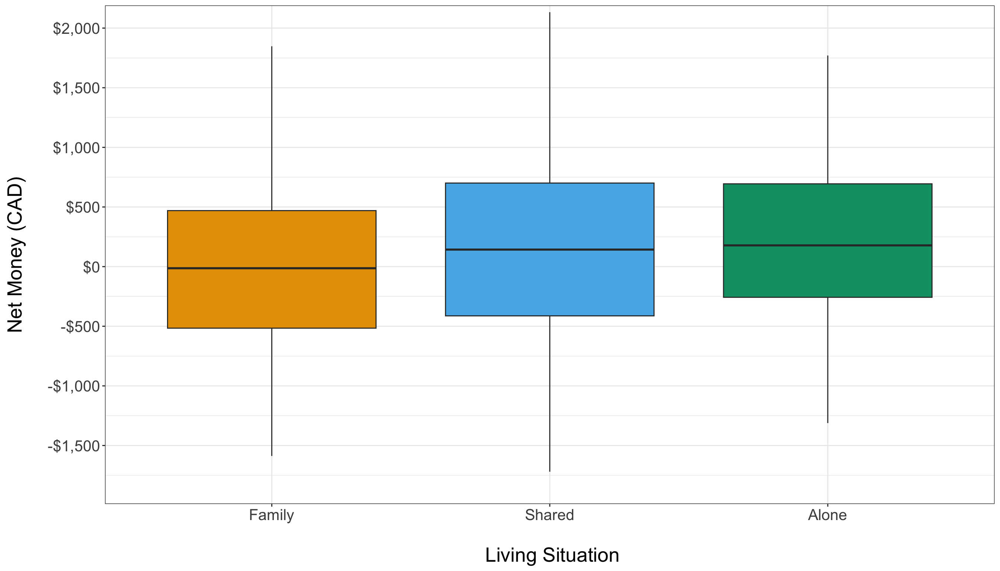
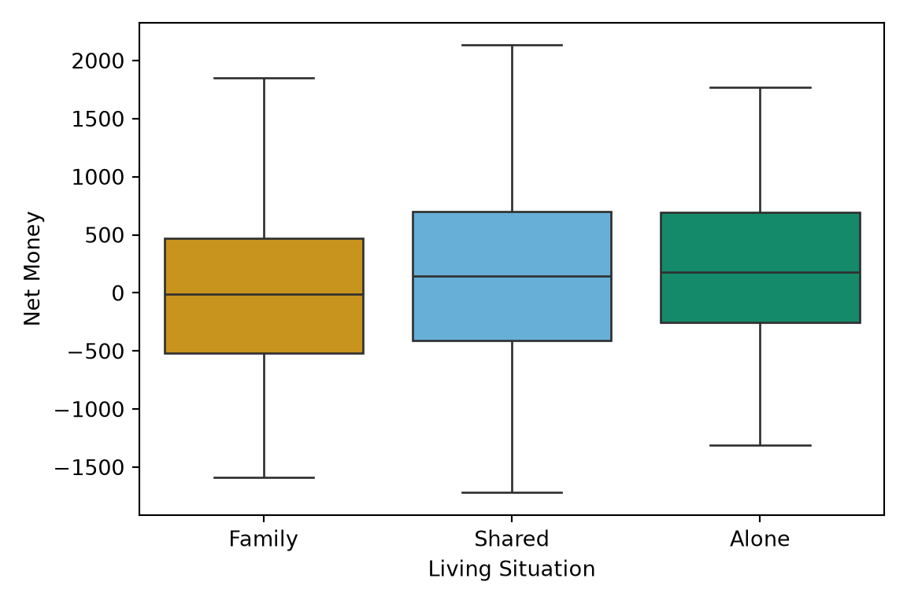
3.7.4 Key Takeaways from EDA
The exploratory analysis provides an initial picture of the patterns in the training data before we fit the multiple regression model. The distribution of Net_Money is reasonably centred around zero, although the boxplot identifies a high observation that may warrant further investigation during model diagnostics.
The exploratory relationships also differ across regressors. Monthly_Earnings has a strong positive bivariate association with Net_Money, while Monthly_Allowance shows a weaker but still positive relationship. In contrast, Monthly_Allowance and Monthly_Earnings are essentially uncorrelated in the training data. For Living_Situation, the distributions of Net_Money overlap considerably across groups, although some differences in their centres are visible.
These patterns are descriptive and should not be interpreted as adjusted regression effects. Each exploratory comparison considers only a small number of variables at a time and does not account for the other regressors. In the next stage, we therefore fit a multiple linear regression model that includes the selected financial, demographic, and behavioural regressors simultaneously. This allows us to examine the association between each regressor and Net_Money while holding the other regressors fixed.
The EDA results alone are not used to remove regressors or make formal inferential conclusions. After fitting the OLS model, we will examine regression diagnostics to assess the model assumptions and investigate whether unusual or influential observations require further attention.
3.8 Data Modelling
After completing the exploratory data analysis, the next step is to develop a statistical model that describes the relationship between the response variable and one or more regressors. In this chapter, we focus on ordinary least squares (OLS) regression, one of the most widely used modelling approaches in statistics, data science, economics, and machine learning.
Regression models may be used for inference, prediction, or both. In inferential settings, the focus is on estimating and interpreting the relationships between regressors and the response variable. In predictive settings, the primary goal is to accurately predict the response for new or unseen observations.
Building a regression model involves more than simply applying functions in R or Python. It requires deciding which variables to include, determining how they should be represented in the model, fitting the model, evaluating its assumptions, and refining it when necessary. Insights obtained during exploratory data analysis can help guide these decisions.
Depending on the problem, regressors may also require additional modelling choices, such as creating indicator variables for categorical regressors, applying transformations, or including polynomial or interaction terms.
In the following sections, we introduce the OLS model for this case study, describe how its regression coefficients are estimated, and show how to fit and interpret the model in both R and Python.
3.8.1 Choosing a Suitable Regression Model
The choice of regression model depends on the characteristics of the response variable, the relationships observed during EDA, and the goals of the analysis. Different regression approaches are suitable for different types of relationships and modelling objectives. Some common approaches include:
| Technique | Description | References |
|---|---|---|
| Simple Linear Regression | Models the relationship between a continuous response variable and a single regressor. | (montgomery2012?) |
| Multiple Linear Regression | Extends simple linear regression by including two or more regressors, allowing us to examine the association between each regressor and the response while holding the other regressors fixed. | (montgomery2012?) |
| Polynomial Regression | Extends linear regression by including polynomial terms, such as squared or cubic terms, to represent nonlinear relationships between regressors and the response variable. | (montgomery2012?) |
| Log-Linear Models | Use a logarithmic transformation of the response and/or regressors when such a transformation is appropriate for the relationship being modelled or for interpretation. | (montgomery2012?) |
| Regularized Regression (Ridge and Lasso) | Adds penalty terms to the regression coefficients. Ridge regression shrinks coefficient estimates, while Lasso can also shrink some coefficient estimates to zero and therefore perform variable selection. | Hastie, Tibshirani, and Friedman (2009) |
In this case study, Net_Money is a continuous response variable, and we are interested in examining its relationship with several financial, demographic, and behavioural regressors simultaneously. We therefore use multiple linear regression fitted using OLS. This approach allows us to estimate the association between each regressor and Net_Money while holding the other regressors in the model fixed.
3.8.2 Defining the Regression Model
After selecting multiple linear regression fitted using OLS, we now specify the model mathematically. Suppose we observe \(n\) independent students, indexed by \(i = 1, \ldots, n\). Let \(Y_i\) denote the value of Net_Money for the \(i\)-th student, and let \(\mathbf{x}_i\) represent the collection of regressors observed for that student.
For each observation, we define the conditional mean of the response as
\[ \mu_i = \mathbb{E}(Y_i \mid \mathbf{x}_i). \tag{3.11}\]
In a multiple linear regression model, this conditional mean is represented as a linear combination of the regressors:
\[ \mu_i = \beta_0 + \beta_1 x_{i,1} + \beta_2 x_{i,2} + \cdots + \beta_k x_{i,k}. \tag{3.12}\]
Equivalently, using the linear predictor \(\eta_i\) definition,
\[ \eta_i = \beta_0 + \sum_{j=1}^{k}\beta_j x_{i,j}, \]
and for ordinary linear regression we use the identity link,
\[ \mu_i = \eta_i. \tag{3.13}\]
The observed response will generally differ from its conditional mean. We represent this unexplained variation using an error term \(\epsilon_i\):
\[ Y_i = \mu_i + \epsilon_i. \tag{3.14}\]
Combining these expressions gives the general multiple linear regression model
\[ Y_i = \beta_0 + \sum_{j=1}^{k}\beta_j x_{i,j} + \epsilon_i. \tag{3.15}\]
For the classical linear model, we assume that the errors have conditional mean zero and constant variance,
\[ \mathbb{E}(\epsilon_i \mid \mathbf{x}_i) = 0, \qquad \operatorname{Var}(\epsilon_i \mid \mathbf{x}_i) = \sigma^2. \]
When we additionally assume Normally distributed errors, the model can be written equivalently as
\[ Y_i \mid \mathbf{x}_i \sim \mathcal{N}(\mu_i,\sigma^2), \tag{3.16}\]
where
\[ \mu_i = \beta_0 + \sum_{j=1}^{k}\beta_j x_{i,j}. \]
This Normal formulation will become particularly useful in the Estimation section, where we will show how the likelihood of the model is connected to the ordinary least-squares criterion.
For this case study, the regressors are defined as follows:
-
\(x_{i,1}\) represents
Has_Job, coded as
\[ x_{i,1} = \begin{cases} 1 & \text{if the student has a job},\\ 0 & \text{otherwise}. \end{cases} \]
\(x_{i,2}\) represents
Year_of_Study. This ordinal variable is retained in numerical form, so a one-unit increase corresponds to moving from one year of study to the next.\(x_{i,3}\) represents
Financially_Dependent, coded as
\[ x_{i,3} = \begin{cases} 1 & \text{if the student is financially dependent},\\ 0 & \text{otherwise}. \end{cases} \]
\(x_{i,4}\) represents
Monthly_Allowance, measured in Canadian dollars.\(x_{i,5}\) represents
Cooks_at_Home, coded as
\[ x_{i,5} = \begin{cases} 1 & \text{if the student cooks at home regularly},\\ 0 & \text{otherwise}. \end{cases} \]
\(x_{i,6}\) represents
Goes_Out_Spends_Money, an ordinal variable measured on a scale from \(1\) (rarely) to \(5\) (very often). As withYear_of_Study, this variable is retained in numerical form in the model.\(x_{i,7}\) represents
Drinks_Alcohol, coded as
\[ x_{i,7} = \begin{cases} 1 & \text{if the student drinks alcohol},\\ 0 & \text{otherwise}. \end{cases} \]
-
\(x_{i,8}\) represents
Monthly_Earnings, measured in Canadian dollars.
The categorical regressors Living_Situation and Housing_Type require indicator variables because each contains more than two categories.
For Living_Situation, the reference category is Family. We define
\[ x_{i,9} = \begin{cases} 1 & \text{if the student lives in shared housing},\\ 0 & \text{otherwise}, \end{cases} \]
and
\[ x_{i,10} = \begin{cases} 1 & \text{if the student lives alone},\\ 0 & \text{otherwise}. \end{cases} \]
For Housing_Type, the reference category is Rent. We define
\[ x_{i,11} = \begin{cases} 1 & \text{if the student lives in owned housing},\\ 0 & \text{otherwise}, \end{cases} \]
and
\[ x_{i,12} = \begin{cases} 1 & \text{if the student lives in a dormitory},\\ 0 & \text{otherwise}. \end{cases} \]
The subscript \(i\) indexes individual students in the dataset, while the second subscript identifies the regressor. Together, the regressors represent the financial, demographic, and behavioral characteristics included in our model.
Substituting these regressors into the multiple linear regression model gives
\[ \underbrace{Y_i}_{\text{Response}} = \underbrace{ \beta_0 + \beta_1 x_{i,1} + \beta_2 x_{i,2} + \beta_3 x_{i,3} + \cdots + \beta_{12} x_{i,12} }_{\text{Systematic component}} + \underbrace{\epsilon_i}_{\text{Random component}}. \tag{3.17}\]
Here,
\(\beta_0\) is the intercept.
\(\beta_1, \beta_2, \ldots, \beta_{12}\) are the regression coefficients describing the association between each regressor and the expected response.
\(\epsilon_i\) is the random error term representing variation in
Net_Moneythat is not explained by the regressors included in the model.
Each regression coefficient has an interpretation that depends on the type of regressor. For a numerical regressor, the coefficient represents the expected change in Net_Money associated with a one-unit increase in that regressor, while holding all other regressors fixed. For an indicator variable, the coefficient represents the expected difference in Net_Money between the corresponding category and its reference category, again holding the other regressors fixed.
For example:
\(\beta_4\) represents the expected change in
Net_Moneyassociated with a one-dollar increase inMonthly_Allowance, holding the other regressors fixed.\(\beta_7\) represents the expected difference in
Net_Moneybetween students who drink alcohol and students who do not, holding the other regressors fixed.\(\beta_{10}\) represents the expected difference in
Net_Moneybetween students who live alone and students who live with family, holding the other regressors fixed.
The intercept \(\beta_0\) represents the expected value of Net_Money when all numerical regressors are equal to zero and all categorical regressors are at their reference categories. Depending on the values that are meaningful for the regressors, the intercept may not always have a useful practical interpretation.
Although interaction terms or nonlinear terms could be added to extend this model, we do not include them in the current case study. We begin with the additive multiple linear regression model defined above and later assess its adequacy using model diagnostics.
3.9 Estimation
With the regression model specified, we now turn to estimation. The unknown parameters \(\beta_0, \beta_1, \ldots, \beta_k\) describe the relationship between the regressors and the conditional mean of the response. Because these parameters are unknown, we use the observed data to estimate them.
Let
\[ \hat{\boldsymbol{\beta}} = (\hat{\beta}_0,\hat{\beta}_1,\ldots,\hat{\beta}_k)^\top \]
denote the estimated regression coefficients. For the \(i\)-th observation, the fitted response value is
\[ \widehat{Y}_i = \hat{\beta}_0 + \sum_{j=1}^{k}\hat{\beta}_j x_{i,j}. \tag{3.18}\]
The difference between the observed response \(Y_i\) and its fitted value \(\widehat{Y}_i\) is called the residual:
\[ e_i = Y_i-\widehat{Y}_i. \tag{3.19}\]
Ordinary least squares estimates the regression coefficients by choosing the values that make these residuals collectively as small as possible. More specifically, OLS minimizes the sum of squared errors (SSE),
\[ SSE(\boldsymbol{\beta}) = \sum_{i=1}^{n} \left[ Y_i - \left( \beta_0+\sum_{j=1}^{k}\beta_j x_{i,j} \right) \right]^2. \tag{3.20}\]
The OLS estimator can therefore be written as
\[ \hat{\boldsymbol{\beta}} = \underset{\boldsymbol{\beta}}{\operatorname{argmin}} \; SSE(\boldsymbol{\beta}). \tag{3.21}\]
This formalizes the idea of the “best-fitting” model introduced earlier in the chapter. In simple linear regression, OLS chooses the line that minimizes the sum of squared residuals. With multiple regressors, the same principle applies, although geometrically the fitted model represents a hyperplane rather than a single line.
So far, we have described OLS as an optimization problem based on squared residuals. However, there is also an important probabilistic interpretation. Under the Normal linear regression model introduced earlier, the same coefficient estimates can be obtained using maximum likelihood estimation. We examine this connection next.
3.9.1 The Likelihood Perspective
Ordinary least squares can also be viewed from a probabilistic perspective. Recall that under the classical Normal linear regression model, we assume
\[ Y_i \mid \mathbf{x}_i \sim \mathcal{N}(\mu_i,\sigma^2), \]
where
\[ \mu_i = \beta_0 + \sum_{j=1}^{k}\beta_j x_{i,j}. \]
Here, \(\mu_i\) is the conditional mean of the response for the \(i\)-th observation, and \(\sigma^2\) represents the conditional variance of the response around that mean. Equivalently, this corresponds to assuming
\[ \epsilon_i \mid \mathbf{x}_i \sim \mathcal{N}(0,\sigma^2). \]
For an observed response value \(y_i\), the Normal probability density is therefore
\[ f(y_i \mid \mathbf{x}_i; \boldsymbol{\beta},\sigma^2) = \frac{1}{\sqrt{2\pi\sigma^2}} \exp\left[ -\frac{ \left( y_i-\beta_0-\sum_{j=1}^{k}\beta_j x_{i,j} \right)^2 }{ 2\sigma^2 } \right], \tag{3.22}\]
where
\[ \boldsymbol{\beta} = (\beta_0,\beta_1,\ldots,\beta_k)^\top \]
is the vector of regression coefficients.
The density in Equation 3.22 describes how plausible a particular observed response \(y_i\) is for given values of the model parameters. The likelihood function reverses this perspective: we treat the observed data as fixed and view the likelihood as a function of the unknown parameters \(\boldsymbol{\beta}\) and \(\sigma^2\).
Because the observations are assumed to be independent, the joint likelihood for all \(n\) observations is the product of their individual Normal densities:
\[ L(\boldsymbol{\beta},\sigma^2) = \prod_{i=1}^{n} f(y_i \mid \mathbf{x}_i; \boldsymbol{\beta},\sigma^2). \]
Substituting the Normal density gives
\[ L(\boldsymbol{\beta},\sigma^2) = \prod_{i=1}^{n} \frac{1}{\sqrt{2\pi\sigma^2}} \exp\left[ -\frac{ \left( y_i-\beta_0-\sum_{j=1}^{k}\beta_j x_{i,j} \right)^2 }{ 2\sigma^2 } \right]. \tag{3.23}\]
Collecting the terms, we can write the likelihood more compactly as
\[ L(\boldsymbol{\beta},\sigma^2) = (2\pi\sigma^2)^{-n/2} \exp\left[ -\frac{1}{2\sigma^2} \sum_{i=1}^{n} \left( y_i-\beta_0-\sum_{j=1}^{k}\beta_jx_{i,j} \right)^2 \right]. \tag{3.24}\]
Notice that the summation appearing inside the exponential function is exactly the sum of squared errors:
\[ SSE(\boldsymbol{\beta}) = \sum_{i=1}^{n} \left( y_i-\beta_0-\sum_{j=1}^{k}\beta_jx_{i,j} \right)^2. \]
Therefore, the likelihood can also be written as
\[ L(\boldsymbol{\beta},\sigma^2) = (2\pi\sigma^2)^{-n/2} \exp\left[ -\frac{SSE(\boldsymbol{\beta})}{2\sigma^2} \right]. \tag{3.25}\]
Rather than maximizing the likelihood directly, it is usually easier to work with its natural logarithm. Because the logarithm is a strictly increasing function, the values of the parameters that maximize the likelihood also maximize the log-likelihood:
\[ \ell(\boldsymbol{\beta},\sigma^2) = \log L(\boldsymbol{\beta},\sigma^2). \]
Taking the logarithm of Equation 3.25 gives
\[ \ell(\boldsymbol{\beta},\sigma^2) = -\frac{n}{2}\log(2\pi) -\frac{n}{2}\log(\sigma^2) -\frac{1}{2\sigma^2}SSE(\boldsymbol{\beta}). \tag{3.26}\]
Now consider estimation of the regression coefficients \(\boldsymbol{\beta}\). For a fixed value of \(\sigma^2\), the first two terms in Equation 3.26 do not depend on \(\boldsymbol{\beta}\). Since \(\sigma^2 > 0\), maximizing the log-likelihood with respect to \(\boldsymbol{\beta}\) is therefore equivalent to minimizing
\[ SSE(\boldsymbol{\beta}). \]
In other words,
\[ \underset{\boldsymbol{\beta}}{\operatorname{argmax}} \; L(\boldsymbol{\beta},\sigma^2) = \underset{\boldsymbol{\beta}}{\operatorname{argmin}} \; SSE(\boldsymbol{\beta}). \tag{3.27}\]
This establishes an important connection: under the Normal linear regression model, the maximum likelihood estimates of the regression coefficients are the same as the ordinary least-squares estimates.
Therefore,
\[ \hat{\boldsymbol{\beta}}_{\mathrm{MLE}} = \hat{\boldsymbol{\beta}}_{\mathrm{OLS}}. \]
The Normal likelihood also allows us to estimate the error variance \(\sigma^2\). After substituting the estimated regression coefficients, maximizing the likelihood with respect to \(\sigma^2\) gives
\[ \hat{\sigma}^2_{\mathrm{MLE}} = \frac{SSE(\hat{\boldsymbol{\beta}})}{n}. \tag{3.28}\]
However, the maximum likelihood estimator in Equation 3.28 is biased downward as an estimator of the population error variance. In classical linear regression, we therefore commonly use the degrees-of-freedom-adjusted estimator
\[ \hat{\sigma}^2 = \frac{SSE(\hat{\boldsymbol{\beta}})} {n-k-1}, \tag{3.29}\]
where \(k\) is the number of regressors and \(k+1\) parameters are estimated when the intercept is included.
The likelihood perspective therefore leads to the same coefficient estimates as the least-squares criterion introduced earlier. The remaining question is how we obtain these coefficient estimates explicitly. The matrix formulation of OLS provides a convenient way to derive the closed-form solution.
The Matrix Form of Linear Regression
The multiple linear regression model can be written compactly using matrix notation as
\[ \mathbf{Y} = \mathbf{X}\boldsymbol{\beta} + \boldsymbol{\varepsilon}, \tag{3.30}\]
where:
- \(\mathbf{Y}\) is an \(n \times 1\) vector containing the observed response values.
- \(\mathbf{X}\) is an \(n \times (k+1)\) design matrix, where \(k\) is the number of regressors. The additional column corresponds to the intercept.
- \(\boldsymbol{\beta}\) is a \((k+1) \times 1\) vector containing the unknown regression coefficients, including the intercept.
- \(\boldsymbol{\varepsilon}\) is an \(n \times 1\) vector containing the random error terms.
For \(n\) observations and \(k\) regressors, the design matrix has the form
\[ \mathbf{X} = \begin{bmatrix} 1 & x_{1,1} & x_{1,2} & \cdots & x_{1,k} \\ 1 & x_{2,1} & x_{2,2} & \cdots & x_{2,k} \\ \vdots & \vdots & \vdots & \ddots & \vdots \\ 1 & x_{n,1} & x_{n,2} & \cdots & x_{n,k} \end{bmatrix}. \tag{3.31}\]
Each row of \(\mathbf{X}\) corresponds to one observation, while each column after the first corresponds to a regressor. The element \(x_{i,j}\) therefore represents the value of the \(j\)-th regressor for the \(i\)-th observation.
The first column contains only ones and represents the intercept term. Including this column allows the model to estimate an intercept rather than forcing the fitted regression line, or more generally the fitted hyperplane, to pass through the origin.
For example, suppose we have data from \(n=100\) individuals and want to model salary using two regressors: years of experience and years of education. The response vector \(\mathbf{Y}\) contains the 100 observed salary values and is therefore a \(100 \times 1\) vector. Since the model contains two regressors plus an intercept, the design matrix \(\mathbf{X}\) has 100 rows and 3 columns.
A small portion of the design matrix might look like
\[ \mathbf{X} = \begin{bmatrix} 1 & 5 & 16 \\ 1 & 2 & 14 \\ 1 & 8 & 18 \\ 1 & 10 & 20 \\ \vdots & \vdots & \vdots \end{bmatrix}, \]
where:
- the first column represents the intercept,
- the second column contains years of experience,
- the third column contains years of education,
- and each row represents one individual.
The corresponding coefficient vector is
\[ \boldsymbol{\beta} = \begin{bmatrix} \beta_0 \\ \beta_1 \\ \beta_2 \end{bmatrix}. \]
Recall that OLS estimates the coefficient vector by minimizing the sum of squared errors. In scalar notation,
\[ SSE(\boldsymbol{\beta}) = \sum_{i=1}^{n} \left( Y_i-\beta_0-\sum_{j=1}^{k}\beta_jx_{i,j} \right)^2. \]
Using matrix notation, the same objective can be written more compactly as
\[ SSE(\boldsymbol{\beta}) = (\mathbf{Y}-\mathbf{X}\boldsymbol{\beta})^\top (\mathbf{Y}-\mathbf{X}\boldsymbol{\beta}). \tag{3.32}\]
The superscript \({}^\top\) denotes the transpose operation. Since \(\mathbf{Y}-\mathbf{X}\boldsymbol{\beta}\) is an \(n \times 1\) vector, multiplying its transpose by itself produces a scalar equal to the sum of its squared elements.
To find the value of \(\boldsymbol{\beta}\) that minimizes the SSE, we differentiate the objective function with respect to \(\boldsymbol{\beta}\) and set the derivative equal to zero.
Starting with
\[ SSE(\boldsymbol{\beta}) = (\mathbf{Y}-\mathbf{X}\boldsymbol{\beta})^\top (\mathbf{Y}-\mathbf{X}\boldsymbol{\beta}), \]
we first expand the expression:
\[ SSE(\boldsymbol{\beta}) = \left( \mathbf{Y}^\top - (\mathbf{X}\boldsymbol{\beta})^\top \right) (\mathbf{Y}-\mathbf{X}\boldsymbol{\beta}). \]
Using the transpose rule
\[ (\mathbf{X}\boldsymbol{\beta})^\top = \boldsymbol{\beta}^\top\mathbf{X}^\top, \]
we obtain
\[ SSE(\boldsymbol{\beta}) = (\mathbf{Y}^\top-\boldsymbol{\beta}^\top\mathbf{X}^\top) (\mathbf{Y}-\mathbf{X}\boldsymbol{\beta}). \]
Multiplying the terms gives
\[ SSE(\boldsymbol{\beta}) = \mathbf{Y}^\top\mathbf{Y} - \mathbf{Y}^\top\mathbf{X}\boldsymbol{\beta} - \boldsymbol{\beta}^\top\mathbf{X}^\top\mathbf{Y} + \boldsymbol{\beta}^\top\mathbf{X}^\top\mathbf{X}\boldsymbol{\beta}. \]
The two middle terms are scalars and are equal:
\[ \mathbf{Y}^\top\mathbf{X}\boldsymbol{\beta} = \boldsymbol{\beta}^\top\mathbf{X}^\top\mathbf{Y}. \]
Therefore,
\[ SSE(\boldsymbol{\beta}) = \mathbf{Y}^\top\mathbf{Y} - 2\boldsymbol{\beta}^\top\mathbf{X}^\top\mathbf{Y} + \boldsymbol{\beta}^\top\mathbf{X}^\top\mathbf{X}\boldsymbol{\beta}. \]
Differentiating with respect to \(\boldsymbol{\beta}\) gives
\[ \frac{\partial SSE(\boldsymbol{\beta})} {\partial\boldsymbol{\beta}} = -2\mathbf{X}^\top\mathbf{Y} + 2\mathbf{X}^\top\mathbf{X}\boldsymbol{\beta}. \tag{3.33}\]
Setting the gradient equal to zero gives
\[ -2\mathbf{X}^\top\mathbf{Y} + 2\mathbf{X}^\top\mathbf{X}\boldsymbol{\beta} = \mathbf{0}. \]
After simplifying, we obtain the normal equations:
\[ \mathbf{X}^\top\mathbf{X}\boldsymbol{\beta} = \mathbf{X}^\top\mathbf{Y}. \tag{3.34}\]
If the columns of \(\mathbf{X}\) are linearly independent, then \(\mathbf{X}^\top\mathbf{X}\) is invertible. Solving the normal equations gives the OLS estimator
\[ \boxed{ \hat{\boldsymbol{\beta}} = (\mathbf{X}^\top\mathbf{X})^{-1} \mathbf{X}^\top\mathbf{Y} }. \tag{3.35}\]
The second derivative matrix, or Hessian, of the SSE is
\[ \frac{\partial^2 SSE(\boldsymbol{\beta})} {\partial\boldsymbol{\beta}\partial\boldsymbol{\beta}^\top} = 2\mathbf{X}^\top\mathbf{X}. \]
When the columns of \(\mathbf{X}\) are linearly independent, \(\mathbf{X}^\top\mathbf{X}\) is positive definite. Therefore, the solution in Equation 3.35 corresponds to the unique minimum of the SSE.
This expression is the ordinary least-squares estimator. It shows explicitly how the observed response vector \(\mathbf{Y}\) and the design matrix \(\mathbf{X}\) determine the estimated regression coefficients.
Once the coefficients have been estimated, the fitted values can be written as
\[ \widehat{\mathbf{Y}} = \mathbf{X}\hat{\boldsymbol{\beta}}, \]
and the vector of residuals is
\[ \mathbf{e} = \mathbf{Y}-\widehat{\mathbf{Y}} = \mathbf{Y}-\mathbf{X}\hat{\boldsymbol{\beta}}. \]
Notice the distinction between the error vector \(\boldsymbol{\varepsilon}\) in the statistical model and the residual vector \(\mathbf{e}\) obtained after fitting the model. The errors are unobserved random quantities, whereas the residuals can be calculated from the observed data and the fitted model.
The matrix
\[ \mathbf{H} = \mathbf{X} (\mathbf{X}^\top \mathbf{X})^{-1} \mathbf{X}^\top \tag{3.36}\]
is called the hat matrix because it maps the observed response vector \(\mathbf{Y}\) to the fitted response vector \(\hat{\mathbf{Y}}\):
\[ \hat{\mathbf{Y}} = \mathbf{H}\mathbf{Y}. \]
The diagonal elements of \(\mathbf{H}\), denoted \(h_{ii}\), are called leverage values. They measure how unusual an observation’s regressor values are relative to those of the other observations. We will return to leverage when discussing influential observations in the Goodness of Fit section.
In practice, statistical software such as lm() in R and ols() in Python computes the coefficient estimates using numerically stable matrix algorithms rather than explicitly forming the inverse \((\mathbf{X}^\top\mathbf{X})^{-1}\).
Nevertheless, the closed-form expression above is useful for understanding the mathematical foundation of OLS and why, unlike many other regression models in this book, its regression coefficients can be obtained without iterative numerical optimization.
3.9.2 Fitting the Model
Having specified the regression model and derived the OLS estimator, we now fit the model to the training data. In R, we use the lm() function, while in Python we use the ols() function from statsmodels. Both implementations estimate the regression coefficients by minimizing the sum of squared errors described in the previous section.
The same set of regressors is included in both implementations so that the fitted models are directly comparable.
# Fit the OLS model
ols_model <- lm(Net_Money ~ Has_Job + Year_of_Study + Financially_Dependent + Monthly_Allowance + Cooks_at_Home + Goes_Out_Spends_Money + Drinks_Alcohol + Monthly_Earnings + Living_Situation + Housing_Type, data = train_data)
# Displaying the tidy table
tidy(ols_model) |>
mutate_if(is.numeric, round, 2)import statsmodels.formula.api as smf
import numpy as np
import pandas as pd
# Fit the OLS model using a formula
ols_model = smf.ols(
formula="Net_Money ~ Has_Job + Year_of_Study + Financially_Dependent + Monthly_Allowance + Cooks_at_Home + Goes_Out_Spends_Money + Drinks_Alcohol + Monthly_Earnings + Living_Situation + Housing_Type",
data=train_data
).fit()
# Creating a tidy summary table
OLS_tidy = pd.DataFrame({
"term": ols_model.params.index,
"estimate": np.round(ols_model.params.values, 2),
"std_error": np.round(ols_model.bse.values, 2),
"t_value": np.round(ols_model.tvalues.values, 2),
"p_value": np.round(ols_model.pvalues.values, 2)
})
# Displaying the tidy table
print(OLS_tidy)# Fit the OLS model
ols_model <- lm(Net_Money ~ Has_Job + Year_of_Study + Financially_Dependent + Monthly_Allowance + Cooks_at_Home + Goes_Out_Spends_Money + Drinks_Alcohol + Monthly_Earnings + Living_Situation + Housing_Type, data = train_data)
# Displaying the tidy table
tidy(ols_model) |>
mutate_if(is.numeric, round, 2)# A tibble: 13 × 5
term estimate std.error statistic p.value
<chr> <dbl> <dbl> <dbl> <dbl>
1 (Intercept) -425. 37.4 -11.4 0
2 Has_JobYes 95.5 35.4 2.7 0.01
3 Year_of_Study -95.7 6.3 -15.2 0
4 Financially_DependentYes -490. 14.1 -34.6 0
5 Monthly_Allowance 1.5 0.05 32.2 0
6 Cooks_at_HomeYes -94.8 14.4 -6.57 0
7 Goes_Out_Spends_Money -53.6 3.53 -15.2 0
8 Drinks_AlcoholYes -134. 14.4 -9.29 0
9 Monthly_Earnings 0.92 0.03 27.9 0
10 Living_SituationShared 111. 17.0 6.56 0
11 Living_SituationAlone 196. 17.1 11.5 0
12 Housing_TypeOwn -127. 16.5 -7.67 0
13 Housing_TypeDormitory 170. 18.1 9.4 0 import statsmodels.formula.api as smf
import numpy as np
import pandas as pd
# Fit the OLS model using a formula
ols_model = smf.ols(
formula="Net_Money ~ Has_Job + Year_of_Study + Financially_Dependent + Monthly_Allowance + Cooks_at_Home + Goes_Out_Spends_Money + Drinks_Alcohol + Monthly_Earnings + Living_Situation + Housing_Type",
data=train_data
).fit()
# Creating a tidy summary table
OLS_tidy = pd.DataFrame({
"term": ols_model.params.index,
"estimate": np.round(ols_model.params.values, 2),
"std_error": np.round(ols_model.bse.values, 2),
"t_value": np.round(ols_model.tvalues.values, 2),
"p_value": np.round(ols_model.pvalues.values, 2)
})
# Displaying the tidy table
print(OLS_tidy)A note on ordinal regressors
Some regressors are ordered categories. In this example, Year_of_Study and Goes_Out_Spends_Money are ordinal variables because their values have a natural ordering. For instance, year 4 comes after year 3, and a spending-frequency score of 5 represents more frequent spending than a score of 4.
In this model, we treat these ordinal variables as numeric regressors. This is a modelling choice. It means that we assume a one-unit increase has a constant linear association with the response variable, holding the other regressors fixed. For example, the model assumes that the expected change in Net_Money from year 1 to year 2 is the same as the expected change from year 3 to year 4.
This approach keeps the model simpler and easier to interpret. Instead of estimating a separate coefficient for each level of an ordinal variable, we estimate one coefficient that summarizes the average linear change across the ordered scale.
For example, suppose the estimated coefficient for Year_of_Study is \(-100\). Then, holding all other regressors fixed, moving up by one academic year is associated with an estimated decrease of 100 CAD in expected Net_Money, on average.
Similarly, suppose the estimated coefficient for Goes_Out_Spends_Money is \(-50\). Since this variable is treated as numeric, a one-unit increase on the spending-frequency scale is associated with an estimated decrease of 50 CAD in expected Net_Money, on average, holding the other regressors fixed.
This numeric treatment is appropriate when a linear trend across the ordered categories is a reasonable approximation. If we do not want to assume a constant one-unit association, we could instead represent the ordinal variable using indicator variables and compare each level with a reference category.
3.10 Goodness of Fit
After estimating the regression coefficients, the next step is to assess how well the model fits the training data and whether the assumptions of Ordinary Least Squares (OLS) regression are reasonable. This evaluation helps us determine whether the fitted model is appropriate for interpretation and statistical inference.
At this stage, we focus on the model fitted to the training data. Generalization to unseen observations will be assessed separately using predictive performance on the test data. We examine both the overall fit of the model and a series of diagnostic checks related to the OLS assumptions. Serious violations of these assumptions can affect coefficient estimates, standard errors, confidence intervals, hypothesis tests, or predictions.
3.10.1 Checking Model Assumptions
The OLS model relies on several assumptions about the relationship between the regressors, the response variable, and the random error terms. The main assumptions we examine in this chapter are:
Linearity
Independence of errors
Homoscedasticity, or constant error variance
Normality of errors
These assumptions play different roles in OLS regression. Some are important for the statistical properties of the coefficient estimates, while others are particularly important for standard errors, confidence intervals, and hypothesis tests which we introduce later in this chapter. We assess whether these assumptions are reasonable using diagnostic plots and statistical tests (where appropriate).
Linearity
A core assumption of OLS regression is that the conditional mean of the response variable is appropriately represented as a linear combination of the regressors. If important nonlinear relationships are not represented in the model, the residuals may display systematic patterns. This indicates that the linear model does not adequately capture the relationship between the regressors and the response variable.
A common diagnostic for assessing the linearity of the fitted model is a Residuals vs. Fitted plot. In a well-specified linear model, the residuals should be scattered around zero without a clear systematic pattern. Curved or other structured patterns may suggest that nonlinear terms, transformations, or other changes to the model should be considered.
To assess this assumption, we plot the standardized residuals against the fitted values:
# Extract residuals and fitted values
aug_training <- augment(ols_model)
# Plot
residuals_vs_fitted <- ggplot(aug_training, aes(x = .fitted, y = .std.resid)) +
geom_point(alpha = 0.55, color = "#0073C2FF", size = 2) +
geom_hline(yintercept = 0, linewidth = 1, linetype = "dashed", color = "red") +
labs(
x = "\n Fitted Values (CAD)",
y = "Standardized Residuals\n"
) +
theme_bw() +
theme(
axis.text = element_text(size = 15.5),
axis.title.x = element_text(size = 20),
axis.title.y = element_text(size = 20, vjust = 0.5),
strip.text = element_text(size = 20)
) +
coord_cartesian(
xlim = range(aug_training$.fitted, na.rm = TRUE),
ylim = range(aug_training$.std.resid, na.rm = TRUE)
) +
scale_x_continuous(labels = label_dollar())
residuals_vs_fittedimport matplotlib.pyplot as plt
# Extract fitted values and standardized residuals
fitted_vals = ols_model.fittedvalues
influence = ols_model.get_influence()
standardized_residuals = influence.resid_studentized_internal
# Plot Residuals vs Fitted
plt.figure(figsize=(6, 4))
plt.scatter(fitted_vals, standardized_residuals, alpha=0.7)
plt.axhline(y=0, color='red', linestyle='--')
plt.title("Standardized Residuals vs Fitted")
plt.xlabel("Fitted Values")
plt.ylabel("Standardized Residuals")
plt.tight_layout()
plt.show()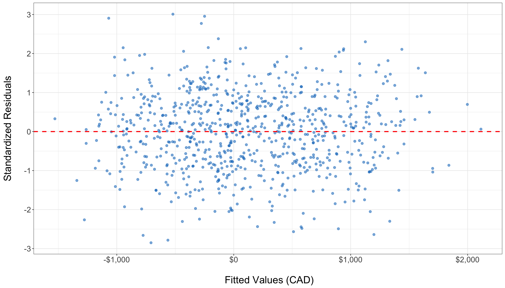
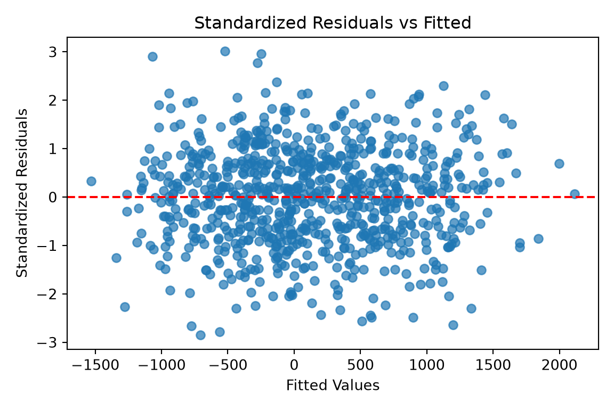
The standardized residuals are scattered around zero across the range of fitted values, with no obvious curved or systematic pattern. This provides no strong visual evidence that the linear mean structure is inappropriate for these data. Therefore, we do not make any changes to the functional form of the model at this stage.
If a clear curved or systematic pattern were present, possible approaches could include adding polynomial terms, transforming regressors, or otherwise modifying the systematic component of the model to better represent the relationship between the regressors and the response variable.
Independence of Errors
Another assumption of the classical linear regression model is that the error terms are independent across observations. In other words, the unexplained component associated with one observation should not systematically depend on the unexplained component associated with another observation.
This assumption is particularly important for data with a natural ordering, such as time-series or longitudinal data, where errors from nearby observations may be correlated. Such dependence is commonly referred to as autocorrelation. When errors are correlated, the usual OLS standard errors may be incorrect, which can affect confidence intervals and hypothesis tests.
For the current dataset, observations correspond to different students rather than repeated measurements over time. Therefore, the independence assumption is primarily supported by the data collection and study design. Nevertheless, we use the Durbin-Watson statistic as an additional diagnostic for first-order autocorrelation in the residuals.
The Durbin-Watson statistic is defined as
\[ DW = \frac{ \sum_{i=2}^{n} (e_i - e_{i-1})^2 }{ \sum_{i=1}^{n} e_i^2 }, \tag{3.37}\]
where \(e_i\) is the residual for observation \(i\). The Durbin-Watson statistic is not itself the autocorrelation coefficient. Instead, for first-order autocorrelation, it is approximately related to the residual autocorrelation \(\rho\) by
\[ DW \approx 2(1-\rho). \]
Therefore, under the null hypothesis of no first-order autocorrelation,
\[ H_0:\rho = 0, \]
we expect the Durbin-Watson statistic to be close to 2. Values near 2 suggest little evidence of first-order autocorrelation, values substantially below 2 are associated with positive autocorrelation, and values substantially above 2 are associated with negative autocorrelation.
In R, the default dwtest() tests for positive autocorrelation:
\[ H_0: \rho = 0, \]
\[ H_1: \rho > 0, \]
where \(\rho\) represents the first-order autocorrelation parameter.
dwtest(ols_model)
Durbin-Watson test
data: ols_model
DW = 1.957, p-value = 0.2713
alternative hypothesis: true autocorrelation is greater than 0from statsmodels.stats.stattools import durbin_watson
# Durbin-Watson test for autocorrelation of residuals
dw_stat = durbin_watson(ols_model.resid)
print(f"Durbin-Watson statistic: {dw_stat:.3f}")For the fitted model, the Durbin-Watson statistic is 1.957 with a p-value of 0.2713. The statistic is close to 2, and the p-value provides no evidence against the null hypothesis in favour of positive first-order autocorrelation. Together with the cross-sectional study design, we do not identify an immediate concern regarding dependence among the errors.
Because the observations in this dataset do not have a natural temporal ordering, the Durbin-Watson diagnostic should be interpreted as supplementary rather than as the primary justification for the independence assumption.
Distribution of the Durbin-Watson Statistic
Under the null hypothesis of no autocorrelation, the Durbin-Watson statistic does not follow a simple standard distribution such as a \(t\)-distribution or a \(\chi^2\) distribution. Its distribution depends on the design matrix \(X\) used in the regression model.
More formally, under the null hypothesis, the Durbin-Watson statistic can be written as a ratio of weighted sums of squared standard Normal random variables:
\[ d \sim \frac{ \sum_{i=1}^{n-k-1} \nu_i \xi_i^2 }{ \sum_{i=1}^{n-k-1} \xi_i^2 }, \]
where \(\xi_1, \ldots, \xi_{n-k-1}\) are independent standard Normal random variables, and \(\nu_1, \ldots, \nu_{n-k-1}\) are eigenvalues that depend on the regression design matrix \(X\).
The main takeaway is that the Durbin-Watson test has a special null distribution that depends on the fitted regression model. In practice, software computes or approximates the relevant p-value for us, so we usually focus on interpreting the statistic and its p-value.
A note on autocorrelation
If the test suggests autocorrelation, a possible solution is to use time-series regression models such as Autoregressive Integrated Moving Average (ARIMA) or introduce lagged predictors to account for dependencies in the data. These models are beyond the scope of this textbook, but readers interested in time-series models and ARIMA models can consult (BrockwellDavis?).
Note that because this dataset is not a time series, the independence assumption is primarily justified by the data collection design. The Durbin-Watson statistic is included here as an additional diagnostic but it is most relevant when observations have a natural ordering.
Homoscedasticity (Constant Variance of Errors)
OLS regression assumes that the conditional variance of the error terms is constant across observations. This assumption is called homoscedasticity and can be written as
\[ \operatorname{Var}(\epsilon_i \mid \mathbf{x}_i) = \sigma^2. \]
If the error variance changes systematically with the regressors or fitted values, the model shows heteroscedasticity. Under heteroscedasticity, the OLS coefficient estimates can still be unbiased under the other classical assumptions. However, the usual estimated standard errors may be incorrect. As a result, confidence intervals and hypothesis tests based on those standard errors may be unreliable.
We can assess constant variance visually using the Residuals vs. Fitted plot introduced earlier. If the spread of the residuals remains reasonably similar across the range of fitted values, this is consistent with the constant-variance assumption. A funnel-shaped pattern, where the spread systematically increases or decreases, may indicate heteroscedasticity.
We can also assess this assumption formally using the Breusch-Pagan test. The test is based on the idea that, under homoscedasticity, the squared residuals should not be systematically related to the regressors. If the magnitude of the squared residuals can be explained by the regressors, this provides evidence that the conditional error variance changes across observations.
The Breusch-Pagan test can be written as
\[ H_0: \text{The error variance is constant.} \]
\[ H_1: \text{The error variance is not constant.} \]
One way to construct the Breusch-Pagan test is to obtain the residuals from the fitted OLS model, square them, and regress the squared residuals on the regressors. The test statistic is commonly written as
\[ BP = nR^2_{\text{aux}}, \]
where \(n\) is the sample size and \(R^2_{\text{aux}}\) is the coefficient of determination from this auxiliary regression. Under the null hypothesis of constant variance, the test statistic is asymptotically distributed as a chi-square random variable, with degrees of freedom corresponding to the number of regressors tested in the auxiliary regression.
A small p-value provides evidence against the null hypothesis and suggests that heteroscedasticity may be present.
bptest(ols_model)
studentized Breusch-Pagan test
data: ols_model
BP = 20.769, df = 12, p-value = 0.05387from statsmodels.stats.diagnostic import het_breuschpagan
# Extract residuals and design matrix from the fitted model
residuals = ols_model.resid
exog = ols_model.model.exog # independent variables (with intercept)
# Perform Breusch-Pagan test
bp_test = het_breuschpagan(residuals, exog)
# Unpack results
bp_stat, bp_pvalue, empty, empty = bp_test
print(f"Breusch-Pagan test statistic: {bp_stat:.3f}")
print(f"P-value: {bp_pvalue:.4f}")The studentized Breusch-Pagan test gives a test statistic of 20.769 with 12 degrees of freedom and a p-value of 0.05387. At the conventional 5% significance level, we fail to reject the null hypothesis of constant error variance. Therefore, the test does not provide statistically significant evidence of heteroscedasticity.
However, the p-value is close to 0.05, so the result is somewhat borderline and should not be interpreted as strong evidence that the error variance is perfectly constant. Taken together with the Residuals vs. Fitted plot, which does not show a clear funnel-shaped pattern, the homoscedasticity assumption appears reasonably plausible for this model.
If substantial heteroscedasticity were detected, possible approaches could include using heteroscedasticity-robust standard errors, applying an appropriate transformation, or considering weighted least squares when the variance structure can be meaningfully modelled.
Normality of Errors
For statistical inference in OLS regression, we additionally assume that the error terms are Normally distributed conditional on the regressors:
\[ \epsilon_i \mid \mathbf{x}_i \sim \mathcal{N}(0,\sigma^2). \]
This Normality assumption is not required to compute the OLS coefficient estimates. However, it supports the exact finite-sample distributions used for confidence intervals and hypothesis tests. Departures from Normality can therefore affect statistical inference, particularly in smaller samples.
Because the error terms \(\epsilon_i\) are unobserved, we assess this assumption using the residuals from the fitted model. A Q-Q (Quantile-Quantile) plot compares the quantiles of the standardized residuals with the theoretical quantiles of a Normal distribution. If the error distribution is approximately Normal, the points should lie reasonably close to the reference line.
We therefore examine a Q-Q plot of the standardized residuals:
# Extract residuals (including standardized residuals)
aug_training <- augment(ols_model)
# Plot
QQ_plot <- ggplot(aug_training, aes(sample = .std.resid)) +
stat_qq(alpha = 0.55, color = "#0073C2FF", size = 2) +
stat_qq_line(linewidth = 1, color = "red") +
labs(
x = "\n Theoretical Quantiles",
y = "Sample Quantiles\n"
) +
theme_bw() +
theme(
axis.text = element_text(size = 15.5),
axis.title.x = element_text(size = 20),
axis.title.y = element_text(size = 20, vjust = 0.5),
strip.text = element_text(size = 20)
)
QQ_plotimport matplotlib.pyplot as plt
import scipy.stats as stats
# Extract standardized residuals from the model
influence = ols_model.get_influence()
standardized_residuals = influence.resid_studentized_internal
# Q-Q plot of standardized residuals
plt.figure(figsize=(6, 4))
empty = stats.probplot(
standardized_residuals,
dist="norm",
plot=plt
)
plt.title("Q-Q Plot of Standardized Residuals")
plt.tight_layout()
plt.show()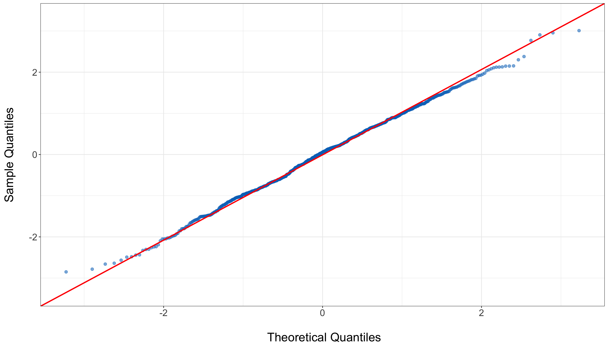
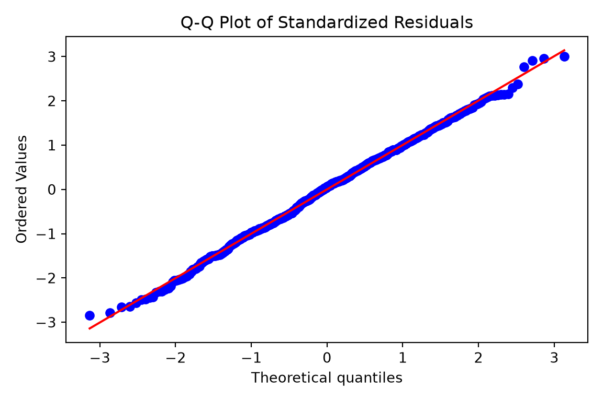
The Q-Q plot shows that the standardized residuals follow the reference line closely across most of the distribution. Some deviations are visible in the extreme tails, particularly in the upper tail, but these departures are relatively mild. Overall, the plot does not provide strong evidence of a serious departure from Normality, so the Normal error assumption appears reasonable for this model.
If substantial departures from Normality were observed, we would investigate their source before modifying the model. Depending on the problem, possible approaches could include transforming the response variable, reconsidering the model specification, using bootstrap-based inference, or applying other inferential methods that are less sensitive to the Normality assumption.
3.10.2 Evaluating Model Fit
R-Squared and Adjusted R-Squared
Beyond checking the model assumptions, it is also useful to assess how much of the observed variation in the response variable is explained by the fitted regression model. One of the most commonly used goodness-of-fit measures for OLS regression is R-squared (\(R^2\)), also known as the coefficient of determination.
The \(R^2\) statistic is defined as
\[ R^2 = 1 - \frac{\text{SSE}}{\text{SST}}, \tag{3.38}\]
where
\[ \text{SSE} = \sum_{i=1}^{n} (y_i - \hat{y}_i)^2 \tag{3.39}\]
is the sum of squared errors, and
\[ \text{SST} = \sum_{i=1}^{n} (y_i - \bar{y})^2 \tag{3.40}\]
is the total sum of squares. Here, \(y_i\) is the observed response value, \(\hat{y}_i\) is the fitted response value, and \(\bar{y}\) is the sample mean of the response variable.
The rationale behind \(R^2\) in Equation 3.38 is to compare the fitted regression model with a simple baseline model that always predicts the sample mean \(\bar{y}\). If the regression model substantially reduces the unexplained variation relative to this baseline, then \(\text{SSE}\) will be much smaller than \(\text{SST}\) and \(R^2\) will be closer to 1. If the fitted model provides little improvement over predicting the sample mean, then \(\text{SSE}\) will be close to \(\text{SST}\) and \(R^2\) will be closer to 0.
A larger \(R^2\) indicates that the fitted model explains a greater proportion of the observed variation in the response variable. However, the usefulness of a particular \(R^2\) value depends on the context and purpose of the analysis.
Because \(R^2\) never decreases when additional regressors are added to the model, we often also report adjusted R-squared. Adjusted R-squared accounts for model complexity and is defined as:
\[ R^2_{\text{adj}} = 1 - \left( \frac{n - 1}{n - p - 1} \right) (1 - R^2), \tag{3.41}\]
where \(n\) is the sample size and \(p\) is the number of estimated slope coefficients, excluding the intercept. For categorical regressors represented by multiple indicator variables, each estimated indicator coefficient contributes to \(p\).
Adjusted R-squared penalizes the inclusion of additional regressors that provide little improvement in model fit and is therefore useful when comparing models with different numbers of estimated coefficients.
We can retrieve the R-squared and adjusted R-squared values from the fitted model:
# R-squared
r_squared = ols_model.rsquared
# Adjusted R-squared
adj_r_squared = ols_model.rsquared_adj
# Print values
print(f"R-squared: {r_squared:.4f}")
print(f"Adjusted R-squared: {adj_r_squared:.4f}")For this model, the R-squared is 0.9199 and the adjusted R-squared is 0.9186. This means that approximately 92% of the variation in Net_Money in the training data is explained by the regressors included in the fitted model.
The relatively small difference between \(R^2\) and adjusted \(R^2\) indicates that accounting for the number of estimated coefficients does not substantially reduce the reported goodness of fit.
However, a high \(R^2\) does not imply that the relationships in the model are causal, nor does it guarantee that the model assumptions are satisfied. It also does not rule out problems such as omitted variables, multicollinearity, or poor predictive performance on new observations. Therefore, \(R^2\) and adjusted \(R^2\) should be interpreted together with model diagnostics, statistical inference, and prediction-based performance measures.
3.10.3 Additional Model Diagnostics
Multicollinearity
In multiple regression, we also need to consider whether some regressors are strongly linearly related to the other regressors in the model. This issue is called multicollinearity.
Multicollinearity does not necessarily imply poor overall model fit, but it can make individual coefficient estimates unstable and difficult to interpret. In particular, it can inflate the variances and standard errors of estimated coefficients, making it harder to distinguish the association of one regressor from the associations of the others.
For a regressor represented by a single coefficient, a common diagnostic is the Variance Inflation Factor (VIF). The VIF measures how much the variance of an estimated coefficient is inflated because of linear relationships between that regressor and the remaining regressors. For the \(j\)th regressor,
\[ \text{VIF}_j = \frac{1}{1 - R_j^2}, \tag{3.42}\]
where \(R_j^2\) is obtained by regressing the \(j\)th regressor on the remaining regressors in the model. If a regressor can be well explained by the other regressors, then \(R_j^2\) will be large, making the VIF large. A VIF close to 1 indicates little evidence of multicollinearity involving that regressor.
As rough rules of thumb, VIF values greater than 5 may deserve further investigation, while values greater than 10 are often considered evidence of substantial multicollinearity. These thresholds should not be treated as strict decision rules.
Unlike the Breusch-Pagan or Durbin-Watson procedures, VIF is a diagnostic measure rather than a formal hypothesis test. We therefore examine the magnitude of the VIF values together with the structure and interpretation of the regressors.
# Variance Inflation Factor (VIF)
vif_table <- car::vif(ols_model)
vif_table GVIF Df GVIF^(1/(2*Df))
Has_Job 6.408099 1 2.531422
Year_of_Study 1.027901 1 1.013855
Financially_Dependent 1.022647 1 1.011260
Monthly_Allowance 1.016205 1 1.008070
Cooks_at_Home 1.008840 1 1.004410
Goes_Out_Spends_Money 1.018535 1 1.009225
Drinks_Alcohol 1.010800 1 1.005386
Monthly_Earnings 6.421375 1 2.534043
Living_Situation 1.036389 2 1.008976
Housing_Type 1.014831 2 1.003687from statsmodels.stats.outliers_influence import variance_inflation_factor
import pandas as pd
# Variance Inflation Factor (VIF)
X = ols_model.model.exog
vif_table = pd.DataFrame({
"term": ols_model.model.exog_names,
"VIF": [variance_inflation_factor(X, i) for i in range(X.shape[1])]
})
print(vif_table)For the fitted model, most regressors show little evidence of multicollinearity. The largest values occur for Has_Job and Monthly_Earnings, with GVIF values of approximately 6.41 and 6.42, respectively. Because both terms have one degree of freedom, these values can be interpreted in the same way as ordinary VIF values. Values around 6.4 suggest some multicollinearity involving these two regressors.
This relationship is reasonable in the context of the data because students who have a job are also likely to report monthly earnings. Although the VIF values warrant some attention, they are not sufficiently extreme to justify automatically removing either regressor. Both variables also represent substantively different characteristics: Has_Job indicates employment status, whereas Monthly_Earnings measures the amount earned.
The remaining regressors show values close to 1, providing little evidence of substantial multicollinearity. For the multi-level categorical regressors Living_Situation and Housing_Type, we use the generalized VIF reported by car::vif(), as discussed in the following Tip. A detailed treatment of GVIF is beyond the scope of this book so readers should not be concerned with its mathematical details here. The following Tip provides a brief explanation for readers who are interested followed by a technical reference.
Generalized VIF
When a regression model includes a categorical regressor with more than two levels, that regressor is represented by multiple indicator variables and therefore contributes more than one coefficient to the model. In this situation, the ordinary Variance Inflation Factor (VIF) for a single coefficient is not sufficient to describe multicollinearity for the categorical regressor as a whole.
The car::vif() function therefore reports the generalized variance inflation factor (GVIF) for model terms with more than one degree of freedom. To make GVIF values more comparable across terms with different numbers of degrees of freedom, we can examine
\[ \text{GVIF}^{1/(2 \times \text{Df})}, \]
where \(\text{Df}\) is the number of degrees of freedom associated with the model term.
Values of this adjusted measure close to 1 indicate little evidence of multicollinearity. For the current model, the adjusted GVIF values for Living_Situation and Housing_Type are both very close to 1, indicating little evidence that these categorical regressors are strongly related to the remaining regressors.
For model terms with one degree of freedom, the reported GVIF is equivalent to the usual VIF. Therefore, for variables such as Has_Job and Monthly_Earnings, we can interpret the GVIF values using the usual VIF scale. More details on generalized VIF are available in (GVIF?).
Outliers, Leverage, and Influential Observations
Another important part of regression diagnostics is identifying observations that may behave differently from the majority of the data or have an unusually large influence on the fitted model. Three related concepts are useful here: outliers, high-leverage observations, and influential observations.
An outlier is an observation whose observed response value is unusually far from the value predicted by the model. Such observations tend to have relatively large residuals. For observation \(i\), the residual is
\[ e_i = y_i - \hat{y}_i, \]
where \(y_i\) is the observed response value and \(\hat{y}_i\) is the fitted response value.
A high-leverage observation has an unusual combination of regressor values relative to the other observations in the dataset. High leverage does not necessarily mean that an observation is poorly fit by the model, but such observations have greater potential to affect the fitted regression coefficients.
An influential observation is one whose inclusion or removal has a noticeable effect on the fitted regression model. Influence therefore depends on both how unusual an observation is in terms of its regressors and how poorly it is fit by the model. An observation may be an outlier without being highly influential, and a high-leverage observation is not necessarily influential if it is well aligned with the fitted regression relationship.
We begin by examining the residuals across observations. Plotting residuals against the observation index can help identify observations with unusually large positive or negative residuals. This is primarily a diagnostic procedure rather than a formal hypothesis test, so we inspect whether any observations stand out clearly from the rest of the data.
# Extract residuals
aug_training <- augment(ols_model)
# Add observation index
aug_training <- aug_training %>%
mutate(index = row_number())
# Plot
residuals_vs_index <- ggplot(aug_training, aes(x = index, y = .resid)) +
geom_point(alpha = 0.55, color = "#0073C2FF", size = 2) +
geom_hline(yintercept = 0, linewidth = 1, linetype = "dashed", color = "red") +
labs(
x = "\n Observation Index",
y = "Residuals (CAD)\n"
) +
theme_bw() +
theme(
axis.text = element_text(size = 15.5),
axis.title.x = element_text(size = 20),
axis.title.y = element_text(size = 20, vjust = 0.5),
strip.text = element_text(size = 20)
) +
scale_y_continuous(labels = label_dollar())
residuals_vs_indeximport matplotlib.pyplot as plt
# Extract residuals
residuals = ols_model.resid
# Residual plot (residuals vs observation index)
plt.figure(figsize=(6, 4))
plt.plot(residuals, marker='o', linestyle='none', alpha=0.7)
plt.axhline(y=0, color='red', linestyle='--')
plt.title("Residual Plot")
plt.xlabel("Observation Index")
plt.ylabel("Residuals")
plt.tight_layout()
plt.show()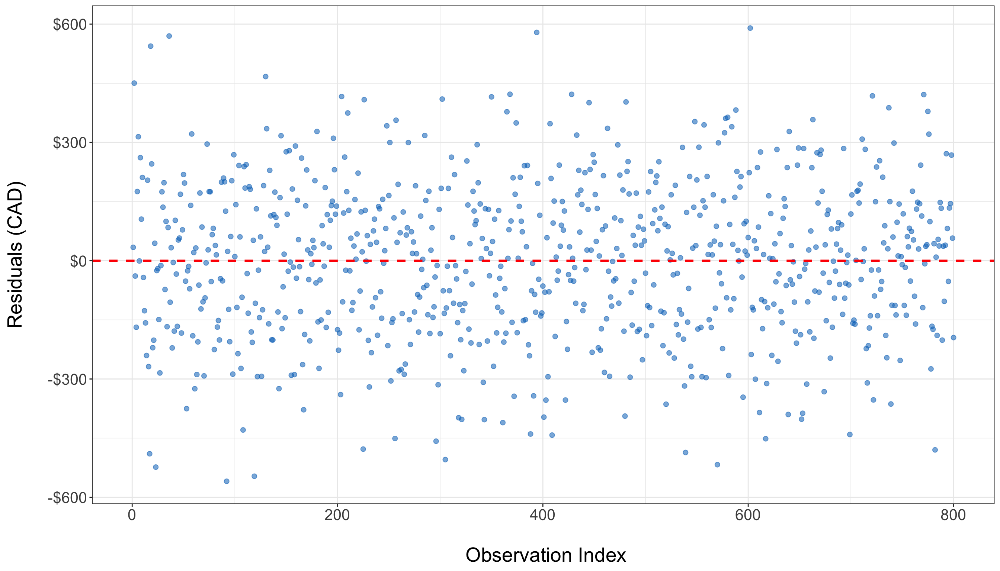
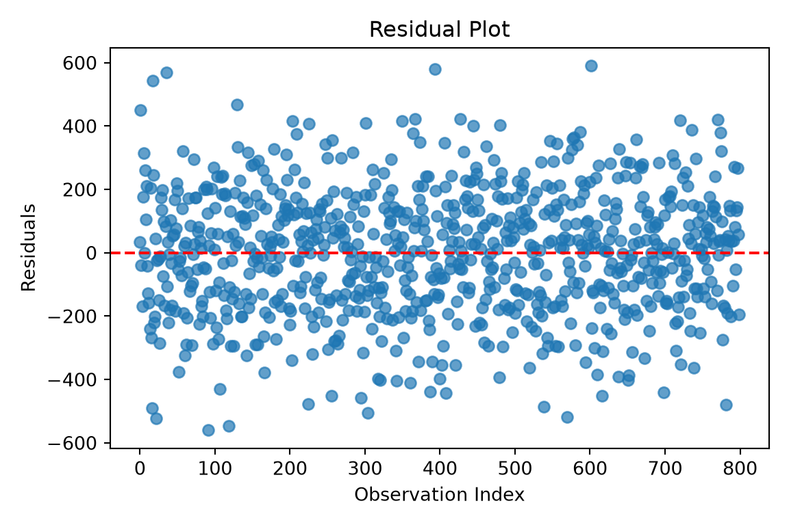
The residuals are generally scattered around zero with no obvious pattern across the observation index. Several observations have relatively large positive or negative residuals, although no single observation appears dramatically separated from the rest of the residual distribution. These observations may warrant further investigation but a large residual alone does not imply that an observation has a substantial influence on the fitted model.
To distinguish observations that are simply poorly fit from those that may have a greater ability to affect the fitted regression model, we next consider leverage and influence diagnostics.
Leverage
Leverage measures how unusual an observation’s regressor values are relative to those of the other observations. In linear regression, leverage is obtained from the diagonal elements of the hat matrix (reminder that we defined hat matrix in Equation 3.36). Observations with larger leverage values have greater potential to affect the fitted regression model.
A commonly used screening guideline is to investigate observations with leverage values larger than
\[ \frac{2p}{n}, \]
where \(p\) is the total number of estimated regression parameters, including the intercept, and \(n\) is the number of observations used to fit the model. This threshold is only a rule of thumb and should not be used as an automatic criterion for removing observations.
# Extract model diagnostics
aug_training <- augment(ols_model) |>
mutate(row_id = row_number())
# Number of observations and estimated parameters
n <- nrow(aug_training)
p <- length(coef(ols_model))
# Leverage screening threshold
leverage_threshold <- 2 * p / n
# Plot leverage values
leverage_plot <- ggplot(aug_training, aes(x = row_id, y = .hat)) +
geom_col(fill = "#0073C2FF", color = "#0073C2FF") +
geom_hline(
yintercept = leverage_threshold,
linewidth = 1,
linetype = "dashed",
color = "red"
) +
labs(
x = "\nObservation Index",
y = "Leverage\n"
) +
theme_bw() +
theme(
axis.text = element_text(size = 15.5),
axis.title.x = element_text(size = 20),
axis.title.y = element_text(size = 20, vjust = 0.5)
)
leverage_plotimport matplotlib.pyplot as plt
# Extract leverage values
influence = ols_model.get_influence()
leverage = influence.hat_matrix_diag
# Number of observations and estimated parameters
n = len(leverage)
p = len(ols_model.params)
# Leverage screening threshold
leverage_threshold = 2 * p / n
# Plot leverage values
plt.figure(figsize=(6, 4))
plt.bar(range(n), leverage)
plt.axhline(
y=leverage_threshold,
color="red",
linestyle="--"
)
plt.xlabel("Observation Index")
plt.ylabel("Leverage")
plt.tight_layout()
plt.show()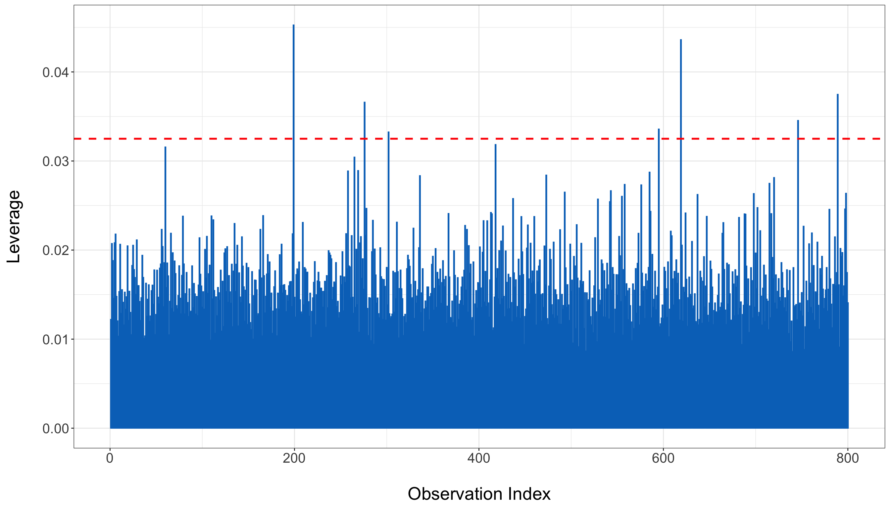
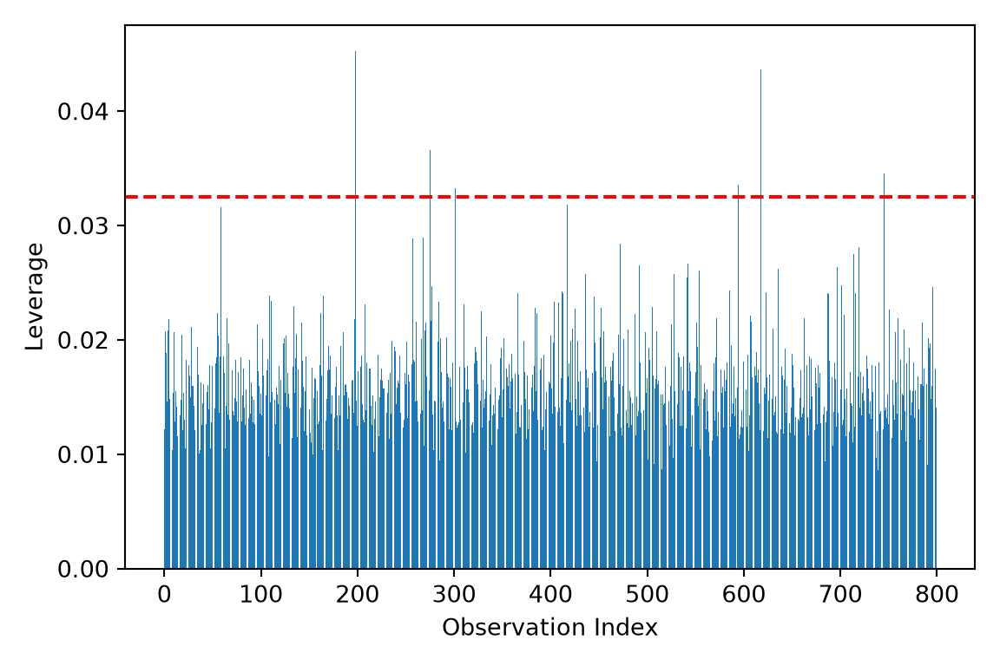
The leverage plot shows that most observations have leverage values well below the screening threshold of \(2p/n\). However, a small number of observations exceed this threshold, indicating that they have relatively unusual combinations of regressor values compared with the rest of the training data.
These observations are not necessarily problematic. A high-leverage observation may still be well represented by the fitted model and therefore have little influence on the estimated regression coefficients. The threshold is intended as a screening guideline rather than an automatic rule for removing observations.
We therefore retain these observations and next examine Cook’s Distance, which combines information about residual size and leverage to assess how strongly individual observations influence the fitted model.
Another important diagnostic tool is Cook’s Distance, which measures how strongly each observation influences the fitted regression model. Cook’s Distance combines information about both the residual size and the leverage of an observation. An observation with a large residual, high leverage, or both may therefore have a relatively large Cook’s Distance.
For observation \(i\), Cook’s Distance can be written as
\[ D_i = \frac{ \sum_{j=1}^{n} (\hat{y}_j - \hat{y}_{j(i)})^2 }{ p \, \widehat{\sigma}^2 }, \tag{3.43}\]
where \(\hat{y}_j\) is the fitted value for observation \(j\) using the full dataset, \(\hat{y}_{j(i)}\) is the fitted value for observation \(j\) after removing observation \(i\), \(p\) is the total number of estimated regression parameters including the intercept, and \(\widehat{\sigma}^2\) is the estimated error variance.
The rationale behind Cook’s Distance is to ask how much the fitted model would change if a particular observation were removed. Larger values indicate observations with greater influence on the fitted model.
There is no universal cutoff that determines whether an observation is influential. One commonly used screening guideline is
\[ D_i > \frac{4}{n}, \]
where \(n\) is the number of observations used to fit the model. Observations exceeding this guideline may deserve further investigation, particularly when their Cook’s Distance values also stand out relative to the rest of the data. This threshold should be treated as a diagnostic guideline rather than an automatic rule for removing observations.
As with the residual and leverage diagnostics, Cook’s Distance is not a formal hypothesis test. We inspect the values and investigate observations that appear potentially influential.
# Extract model diagnostics (includes Cook's distance)
aug_training <- augment(ols_model) |>
mutate(row_id = row_number())
# Cook's Distance screening threshold
cooks_threshold <- 4 / nrow(aug_training)
# Plot
cooks_distance_plot <- ggplot(aug_training, aes(x = row_id, y = .cooksd)) +
geom_col(fill = "#0073C2FF", color = "#0073C2FF") +
labs(
x = "\n Observation Index",
y = "Cook's Distance\n"
) +
geom_hline(
yintercept = cooks_threshold,
linewidth = 1,
linetype = "dashed",
color = "red"
) +
theme_bw() +
theme(
axis.text = element_text(size = 15.5),
axis.title.x = element_text(size = 20),
axis.title.y = element_text(size = 20, vjust = 0.5),
strip.text = element_text(size = 20)
) +
coord_cartesian(
ylim = c(0, max(aug_training$.cooksd, na.rm = TRUE))
) +
scale_y_continuous(
breaks = seq(0, max(aug_training$.cooksd, na.rm = TRUE), length.out = 6)
)
cooks_distance_plotimport matplotlib.pyplot as plt
import statsmodels.api as sm
# Get Cook's distance values
influence = ols_model.get_influence()
cooks_d = influence.cooks_distance[0] # Values
# Cook's Distance screening threshold
cooks_threshold = 4 / len(cooks_d)
# Plot Cook's distance
fig, ax = plt.subplots(figsize=(6, 4))
markerline, stemlines, baseline = ax.stem(cooks_d, markerfmt=",")
ax.axhline(y=cooks_threshold, color="red", linestyle="--")
ax.set_title("Cook's Distance")
ax.set_xlabel("Observation Index")
ax.set_ylabel("Cook's Distance")
plt.tight_layout()
plt.show()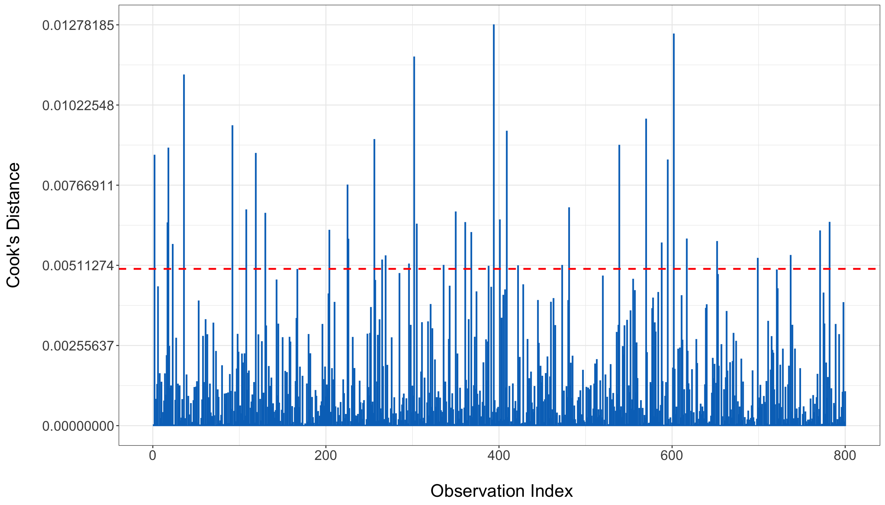
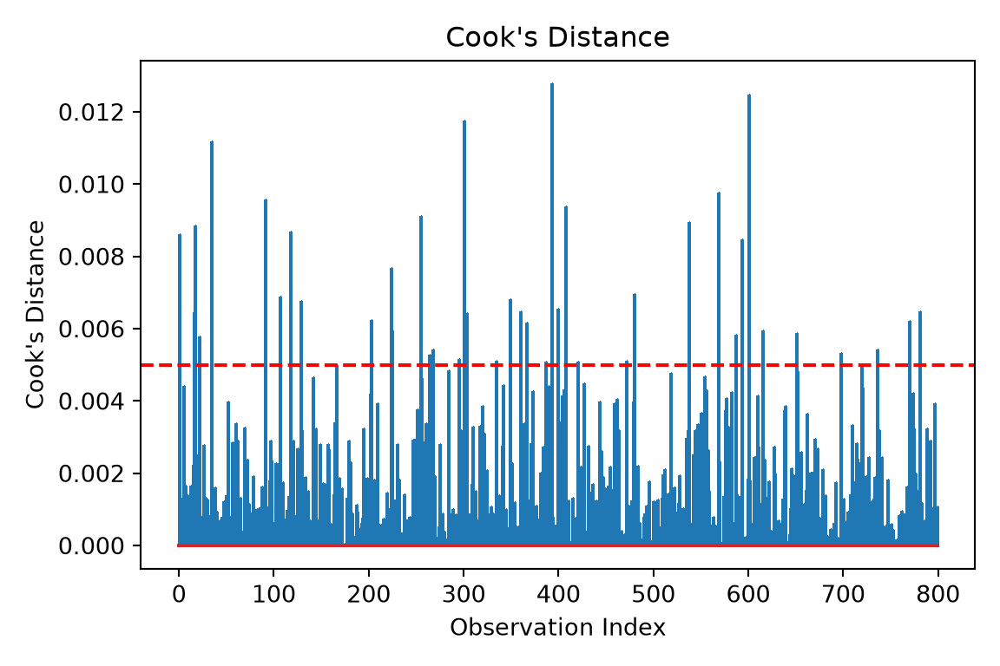
The largest Cook’s Distance in the fitted model is approximately 0.0128, while the \(4/n\) screening guideline is 0.005. Several observations exceed this guideline and stand out relative to the majority of the Cook’s Distance values. These observations may therefore have greater influence on the fitted model and deserve further investigation.
However, exceeding the \(4/n\) guideline does not mean that an observation should automatically be removed. Cook’s Distance is a diagnostic measure, and influential observations may represent valid and meaningful cases rather than data errors. The appropriate next step is to inspect these observations, verify their data quality, and assess whether the substantive conclusions of the model are sensitive to their inclusion.
Taken together with the residual and leverage diagnostics, the results suggest that a small number of observations warrant additional attention but there is no immediate justification for removing them from the analysis.
Robust Regression and Influential Observations
If one or more observations appear to have a strong influence on the fitted OLS model, it is important to investigate them carefully before deciding what to do. Influential observations may result from data-entry errors, but they may also be valid observations representing unusual yet meaningful cases. Therefore, observations should not be removed simply because they have large residuals, high leverage, or relatively large Cook’s Distance values.
A useful first step is to perform a sensitivity analysis by fitting the model with and without the potentially influential observations and examining whether the main conclusions change substantially. If the estimated coefficients or inferential conclusions are highly sensitive to a small number of observations, this should be reported and investigated further.
Another possible approach is to compare the OLS model with a robust regression model. Robust regression methods are designed to reduce the influence of observations that depart substantially from the fitted relationship. For example, instead of minimizing squared residuals as in OLS, some robust methods use alternative loss functions that give less weight to observations with very large residuals.
However, not all robust regression methods handle high-leverage observations in the same way. Some methods primarily protect against observations with unusually large residuals, while more specialized robust methods are designed to remain stable in the presence of both outliers and high-leverage observations. Robust regression should therefore be viewed as a possible sensitivity analysis rather than an automatic replacement for OLS whenever an influential observation is detected.
A detailed treatment of robust regression is beyond the scope of this book but readers interested in robust regression and regression diagnostics can consult Rousseeuw and Leroy (1987).
3.11 Results
After assessing the goodness of fit and checking the main OLS assumptions, we now evaluate the model from two perspectives: inference and prediction. For the inferential analysis, we apply the model structure developed and assessed using the training data to the protected test data and examine the estimated regression coefficients, standard errors, confidence intervals, and hypothesis tests. This allows us to identify which student characteristics show statistical evidence of association with Net_Money and to assess the direction, magnitude, and uncertainty of those associations.
For the predictive analysis, we retain the model fitted on the training data and use it to generate predictions for observations in the test data. We then evaluate how accurately the model predicts Net_Money for observations that were not used to fit the model.
Together, these inferential and predictive results help us answer two complementary questions: which student characteristics are associated with differences in Net_Money, and how well does the fitted model predict student financial balance for new observations?
3.11.1 Inferential Analysis
To address our inferential question, we fit the pre-specified OLS model to the test data, which contains 200 observations. We then examine the estimated regression coefficients, standard errors, confidence intervals, and hypothesis tests to determine which student characteristics show statistical evidence of association with Net_Money, while holding the other regressors fixed.
For each regression coefficient, we test whether there is evidence that the corresponding regressor is associated with the conditional mean of Net_Money, after accounting for the other regressors in the model. For the \(j\)th regression coefficient, we test
\[ H_0: \beta_j = 0, \]
against
\[ H_1: \beta_j \neq 0. \]
Under \(H_0\), the \(j\)th regressor does not contribute a linear association with the conditional mean of Net_Money after holding the other regressors fixed. Under \(H_1\), there is evidence of an association.
The test statistic for the \(j\)th regression coefficient is
\[ t_j = \frac{\hat{\beta}_j}{SE(\hat{\beta}_j)}, \tag{3.44}\]
where \(\hat{\beta}_j\) is the estimated regression coefficient and \(SE(\hat{\beta}_j)\) is its estimated standard error.
Under the null hypothesis \(H_0: \beta_j = 0\), this statistic follows a \(t\)-distribution with \(n-k-1\) degrees of freedom, where \(n\) is the sample size and \(k\) is the number of regressors in the model excluding the intercept.
The p-value measures the strength of the evidence against the null hypothesis. A small p-value indicates that the observed test statistic would be unlikely if \(H_0\) were true. In this chapter, we use a significance level of
\[ \alpha = 0.05. \]
If the p-value is less than 0.05, we reject \(H_0\) and conclude that there is statistical evidence that the corresponding regressor is associated with the conditional mean of Net_Money, holding the other regressors fixed. If the p-value is greater than or equal to 0.05, we fail to reject \(H_0\).
# Loading libraries
library(tidyverse)
library(broom)
# Fitting the OLS model
testing_OLS_model <- lm(
formula = Net_Money ~ Has_Job + Year_of_Study + Financially_Dependent + Monthly_Allowance + Cooks_at_Home + Goes_Out_Spends_Money + Drinks_Alcohol + Monthly_Earnings + Living_Situation + Housing_Type,
data = test_data
)
# Creating a tidy inferential summary with 95% confidence intervals
testing_OLS_tidy <- tidy(
testing_OLS_model,
conf.int = TRUE,
conf.level = 0.95
) |>
mutate_if(is.numeric, round, 2)
# Displaying the tidy table
testing_OLS_tidy# A tibble: 13 × 7
term estimate std.error statistic p.value conf.low conf.high
<chr> <dbl> <dbl> <dbl> <dbl> <dbl> <dbl>
1 (Intercept) -457. 85.4 -5.35 0 -625. -288.
2 Has_JobYes 142. 79.7 1.78 0.08 -15.0 300.
3 Year_of_Study -100. 13.3 -7.54 0 -126. -74.0
4 Financially_Dependen… -486. 31.0 -15.7 0 -547. -424.
5 Monthly_Allowance 1.51 0.1 14.6 0 1.31 1.71
6 Cooks_at_HomeYes -90.6 31.8 -2.84 0 -153. -27.8
7 Goes_Out_Spends_Money -36.4 8.76 -4.16 0 -53.7 -19.1
8 Drinks_AlcoholYes -182. 31 -5.87 0 -243. -121.
9 Monthly_Earnings 0.9 0.07 12.7 0 0.76 1.04
10 Living_SituationShar… 129. 37.2 3.47 0 55.6 202.
11 Living_SituationAlone 213. 36.9 5.78 0 140. 286.
12 Housing_TypeOwn -129. 35.4 -3.64 0 -199. -59.2
13 Housing_TypeDormitory 151. 40.6 3.72 0 71.0 231. # Fitting the OLS model
testing_OLS_model = smf.ols(
formula="Net_Money ~ Has_Job + Year_of_Study + Financially_Dependent + Monthly_Allowance + Cooks_at_Home + Goes_Out_Spends_Money + Drinks_Alcohol + Monthly_Earnings + Living_Situation + Housing_Type",
data=test_data
).fit()
# Obtaining 95% confidence intervals
testing_OLS_ci = testing_OLS_model.conf_int(alpha=0.05)
testing_OLS_ci.columns = ["conf.low", "conf.high"]
# Creating a tidy inferential summary table
testing_OLS_tidy = pd.DataFrame({
"term": testing_OLS_model.params.index,
"estimate": np.round(testing_OLS_model.params.values, 2),
"std.error": np.round(testing_OLS_model.bse.values, 2),
"statistic": np.round(testing_OLS_model.tvalues.values, 2),
"p.value": np.round(testing_OLS_model.pvalues.values, 4),
"conf.low": np.round(testing_OLS_ci["conf.low"].values, 2),
"conf.high": np.round(testing_OLS_ci["conf.high"].values, 2)
})
# Displaying the tidy table
print(testing_OLS_tidy.to_string(index=False))To help organize the coefficient-level results, Table 3.4 summarizes the inferential evidence for each model term. For each term, the table reports the estimated coefficient, its standard error, the corresponding \(t\)-statistic, the associated \(p\)-value, the 95% confidence interval, and the decision based on a significance level of \(\alpha = 0.05\).
| Term | Estimate | Std. Error | t-statistic | p-value | 95% CI | Decision |
|---|---|---|---|---|---|---|
| Intercept | -456.98 | 85.41 | -5.35 | < .001 | (-625.47, -288.48) | Reject H0 |
| Has job: Yes vs No | 142.29 | 79.73 | 1.78 | 0.0759 | (-14.99, 299.58) | Fail to reject H0 |
| Year of study | -100.24 | 13.29 | -7.54 | < .001 | (-126.46, -74.03) | Reject H0 |
| Financially dependent: Yes vs No | -485.63 | 31.02 | -15.66 | < .001 | (-546.82, -424.44) | Reject H0 |
| Monthly allowance | 1.51 | 0.10 | 14.65 | < .001 | (1.31, 1.71) | Reject H0 |
| Cooks at home: Yes vs No | -90.57 | 31.84 | -2.84 | 0.0049 | (-153.38, -27.76) | Reject H0 |
| Goes out/spends money | -36.41 | 8.76 | -4.16 | < .001 | (-53.69, -19.13) | Reject H0 |
| Drinks alcohol: Yes vs No | -181.99 | 31.00 | -5.87 | < .001 | (-243.15, -120.83) | Reject H0 |
| Monthly earnings | 0.90 | 0.07 | 12.69 | < .001 | (0.76, 1.04) | Reject H0 |
| Living situation: Shared vs Family | 128.86 | 37.16 | 3.47 | < .001 | (55.55, 202.17) | Reject H0 |
| Living situation: Alone vs Family | 213.29 | 36.93 | 5.78 | < .001 | (140.43, 286.15) | Reject H0 |
| Housing type: Own vs Rent | -129.09 | 35.42 | -3.64 | < .001 | (-198.95, -59.22) | Reject H0 |
| Housing type: Dormitory vs Rent | 151.06 | 40.58 | 3.72 | < .001 | (71.02, 231.10) | Reject H0 |
The coefficient-level tests in Table 3.4 identify which regressors show statistical evidence of association with Net_Money. To support the next step of interpretation, Table 3.5 reports the estimated coefficients and 95% confidence intervals for the statistically significant regressors only. These intervals provide a range of plausible values for the corresponding population regression coefficients under the fitted model.
For the \(j\)th regression coefficient, a 95% confidence interval is computed as
\[ \hat{\beta}_j \pm t_{0.975,\,n-k-1} \, SE(\hat{\beta}_j), \tag{3.45}\]
where \(\hat{\beta}_j\) is the estimated regression coefficient, \(SE(\hat{\beta}_j)\) is its estimated standard error, and \(t_{0.975,\,n-k-1}\) is the 97.5th percentile of a \(t\)-distribution with \(n-k-1\) degrees of freedom.
For numeric regressors, the estimated coefficient represents the estimated change in the conditional mean of Net_Money associated with a one-unit increase in the regressor, holding the other regressors fixed. For categorical regressors, the estimated coefficient represents the estimated difference in the conditional mean of Net_Money relative to the reference category, holding the other regressors fixed.
At a significance level of \(\alpha = 0.05\), a 95% confidence interval that does not include zero corresponds to rejecting \(H_0: \beta_j = 0\) in the two-sided coefficient test.
| Term | Estimate | 95% CI Lower | 95% CI Upper |
|---|---|---|---|
| Year of study | -100.24 | -126.46 | -74.03 |
| Financially dependent: Yes vs No | -485.63 | -546.82 | -424.44 |
| Monthly allowance | 1.51 | 1.31 | 1.71 |
| Cooks at home: Yes vs No | -90.57 | -153.38 | -27.76 |
| Goes out/spends money | -36.41 | -53.69 | -19.13 |
| Drinks alcohol: Yes vs No | -181.99 | -243.15 | -120.83 |
| Monthly earnings | 0.90 | 0.76 | 1.04 |
| Living situation: Shared vs Family | 128.86 | 55.55 | 202.17 |
| Living situation: Alone vs Family | 213.29 | 140.43 | 286.15 |
| Housing type: Own vs Rent | -129.09 | -198.95 | -59.22 |
| Housing type: Dormitory vs Rent | 151.06 | 71.02 | 231.10 |
Insights from Regression Coefficients
The coefficient estimates describe the direction and magnitude of the associations between the regressors and the conditional mean of Net_Money, while holding the other regressors fixed. Table 3.6 summarizes the estimated coefficients and their interpretations in the context of the student financial data.
| Regressor | Estimate | Interpretation |
|---|---|---|
Has_Job: Yes vs No |
142.00 | Holding the other regressors fixed, students who have a job are estimated to have about 142 CAD higher mean Net_Money than students who do not have a job. However, this coefficient is not statistically significant at \(\alpha = 0.05\) (\(p = 0.08\)), so there is insufficient evidence of an association after accounting for the other regressors. |
Year_of_Study |
-100.00 | Holding the other regressors fixed, a one-year increase in year of study is associated with an estimated decrease of about 100 CAD in mean Net_Money. |
Financially_Dependent: Yes vs No |
-486.00 | Holding the other regressors fixed, financially dependent students are estimated to have about 486 CAD lower mean Net_Money than students who are not financially dependent. |
Monthly_Allowance |
1.51 | Holding the other regressors fixed, each additional dollar of monthly allowance is associated with an estimated increase of 1.51 CAD in mean Net_Money. |
Cooks_at_Home: Yes vs No |
-90.60 | Holding the other regressors fixed, students who cook at home are estimated to have about 90.6 CAD lower mean Net_Money than students who do not cook at home. |
Goes_Out_Spends_Money |
-36.40 | Holding the other regressors fixed, a one-unit increase on the spending-frequency scale is associated with an estimated decrease of about 36.4 CAD in mean Net_Money. |
Drinks_Alcohol: Yes vs No |
-182.00 | Holding the other regressors fixed, students who drink alcohol are estimated to have about 182 CAD lower mean Net_Money than students who do not drink alcohol. |
Monthly_Earnings |
0.90 | Holding the other regressors fixed, each additional dollar of monthly earnings is associated with an estimated increase of 0.90 CAD in mean Net_Money. |
Living_Situation: Shared vs Family |
129.00 | Holding the other regressors fixed, students living in shared housing are estimated to have about 129 CAD higher mean Net_Money than students living with family. |
Living_Situation: Alone vs Family |
213.00 | Holding the other regressors fixed, students living alone are estimated to have about 213 CAD higher mean Net_Money than students living with family. |
Housing_Type: Own vs Rent |
-129.00 | Holding the other regressors fixed, students living in owned housing are estimated to have about 129 CAD lower mean Net_Money than students living in rented housing. |
Housing_Type: Dormitory vs Rent |
151.00 | Holding the other regressors fixed, students living in dormitory housing are estimated to have about 151 CAD higher mean Net_Money than students living in rented housing. |
With the exception of Has_Job, all regressors in the fitted model show statistical evidence of association with the conditional mean of Net_Money at the 5% significance level. The estimated associations vary in both direction and magnitude, with financial resources such as monthly allowance and monthly earnings showing positive associations, while financial dependence and several spending-related characteristics show negative associations.
One important reminder and note to keep in mind is that these results describe associations rather than causal effects. Because the data are observational, the estimated coefficients should not be interpreted as evidence that changing one of these characteristics would necessarily cause a corresponding change in Net_Money.
3.11.2 Predictive Analysis
After completing the inferential analysis, we now evaluate how well the model predicts Net_Money for observations that were not used to fit the model. For this purpose, we use the OLS model fitted on the training data and apply it directly to the test data without refitting the model. This provides an out-of-sample assessment of predictive performance.
In R and Python, we use the fitted training model to generate predictions for the test data. Because the model was fitted using a formula interface, the same model specification is applied directly to the test observations without refitting the regression coefficients.
# Generate predictions on the test data using the model fitted on the training data
y_pred <- predict(
ols_model,
newdata = test_data
)# Generate predictions on the test data using the model fitted on the training data
y_pred = ols_model.predict(test_data)Once predictions are generated, we evaluate their accuracy using common regression error metrics.
Performance Metrics
Model predictive performance is assessed on the test data using four common regression metrics: Mean Absolute Error (MAE), Mean Squared Error (MSE), Root Mean Squared Error (RMSE), and R-squared (\(R^2\)). These metrics compare the observed Net_Money values in the test data with the predictions generated by the model fitted on the training data.
For observation \(i\) in the test data, let \(y_i\) denote the observed value of Net_Money and let \(\hat{y}_i\) denote the prediction generated by the model fitted on the training data. The prediction error for observation \(i\) is
\[ e_i = y_i - \hat{y}_i. \]
A positive prediction error indicates that the model underpredicts Net_Money, while a negative prediction error indicates that the model overpredicts it.
Let \(n_{\text{test}}\) denote the number of observations in the test data:
- The Mean Absolute Error (MAE) measures the average absolute prediction error:
\[ \text{MAE} = \frac{1}{n_{\text{test}}} \sum_{i=1}^{n_{\text{test}}} |y_i - \hat{y}_i|. \]
MAE is measured in the same units as the response variable. In this case, it represents the average absolute difference, in CAD, between the observed and predicted values of Net_Money. Smaller values indicate better predictive performance.
- The Mean Squared Error (MSE) measures the average squared prediction error:
\[ \text{MSE} = \frac{1}{n_{\text{test}}} \sum_{i=1}^{n_{\text{test}}} (y_i - \hat{y}_i)^2. \]
Because prediction errors are squared, MSE gives greater weight to larger errors. Smaller values indicate better predictive performance. However, MSE is expressed in squared CAD, which makes it less directly interpretable than MAE or RMSE.
- The Root Mean Squared Error (RMSE) is the square root of MSE:
\[ \text{RMSE} = \sqrt{ \frac{1}{n_{\text{test}}} \sum_{i=1}^{n_{\text{test}}} (y_i - \hat{y}_i)^2 }. \]
RMSE is expressed in the same units as Net_Money, making it easier to interpret than MSE. Like MSE, RMSE gives greater weight to larger prediction errors. Smaller values indicate better predictive performance.
- The test-set R-squared (\(R^2\)) compares the model’s prediction error with a baseline that predicts the mean response in the test data:
\[ R^2_{\text{test}} = 1 - \frac{ \sum_{i=1}^{n_{\text{test}}}(y_i-\hat{y}_i)^2 }{ \sum_{i=1}^{n_{\text{test}}}(y_i-\bar{y}_{\text{test}})^2 }, \]
where \(\bar{y}_{\text{test}}\) is the mean of the observed Net_Money values in the test data. Values closer to 1 indicate better predictive performance. A value of 0 indicates that the model performs no better than predicting the test-set mean, while a negative value indicates that the model performs worse than this baseline.
Together, these metrics provide complementary measures of predictive performance. MAE summarizes the typical absolute prediction error, MSE and RMSE place greater emphasis on larger errors, and test-set \(R^2\) evaluates predictive performance relative to a simple mean-based baseline.
These metrics can be computed as follows:
# Extract observed test responses
y_test <- test_data$Net_Money
# Calculate predictive performance metrics
mae <- mean(abs(y_test - y_pred))
mse <- mean((y_test - y_pred)^2)
rmse <- sqrt(mse)
# Calculate test-set R-squared
r2_test <- 1 - sum((y_test - y_pred)^2) /
sum((y_test - mean(y_test))^2)
cat(sprintf(
"MAE: %.2f\nMSE: %.2f\nRMSE: %.2f\nTest R-squared: %.4f\n",
mae, mse, rmse, r2_test
))MAE: 168.96
MSE: 43039.09
RMSE: 207.46
Test R-squared: 0.9043from sklearn.metrics import mean_absolute_error, mean_squared_error, r2_score
import numpy as np
# Extract observed test responses
y_test = test_data["Net_Money"]
# Calculate predictive performance metrics
mae = mean_absolute_error(y_test, y_pred)
mse = mean_squared_error(y_test, y_pred)
rmse = np.sqrt(mse)
# Calculate test-set R-squared
r2_test = r2_score(y_test, y_pred)
print(f"MAE: {mae:.2f}")
print(f"MSE: {mse:.2f}")
print(f"RMSE: {rmse:.2f}")
print(f"Test R-squared: {r2_test:.4f}")Comparing MAE and RMSE can provide additional information about the distribution of prediction errors. Because RMSE gives greater weight to larger errors, an RMSE that is noticeably larger than the MAE may indicate that some relatively large prediction errors are present. Test-set \(R^2\), in contrast, evaluates the model’s predictive performance relative to predicting the mean of the test responses.
For this model, the MAE is 168.96 CAD, meaning that the predicted Net_Money values differ from the observed values by about 169 CAD on average. The RMSE is 207.46 CAD. Its somewhat larger value compared with the MAE indicates that larger prediction errors contribute more strongly to the RMSE, although the difference between the two measures is not extreme.
The test-set \(R^2\) is 0.9043, indicating that the predictions from the training-fitted model account for approximately 90.4% of the variation in Net_Money in the test data relative to the test-set mean baseline. Taken together, these metrics indicate strong out-of-sample predictive performance for this dataset.
The next predictive quantity we consider is the model-based prediction for a single student profile corresponding to our motivating question. Using the model fitted on the training data, Table 3.7 reports the point prediction together with a 95% confidence interval for the expected mean Net_Money for students with this profile and a 95% prediction interval for the Net_Money of a new individual student with the same characteristics. The following Tip provides more context about the difference between these two intervals.
Confidence Interval versus Prediction Interval
A 95% confidence interval for the expected mean response describes uncertainty about the mean Net_Money for students with a particular set of characteristics. In other words, it provides an interval estimate for the average financial balance among students who share the same regressor values.
A 95% prediction interval describes uncertainty about the Net_Money value for one new individual student with those same characteristics. A prediction interval is wider because it accounts for both uncertainty in estimating the conditional mean and the additional variability of individual observations around that mean.
For a new student profile with regressor vector \(\mathbf{x}_0\), a 95% confidence interval for the expected mean response has the form
\[ \hat{y}_0 \pm t_{0.975,\,n-k-1} \,SE(\hat{y}_0), \]
where \(\hat{y}_0\) is the estimated conditional mean response for the new profile and \(SE(\hat{y}_0)\) is the standard error associated with estimating that mean response.
A 95% prediction interval for a new individual response has the form
\[ \hat{y}_0 \pm t_{0.975,\,n-k-1} \sqrt{ \widehat{\sigma}^2 + SE(\hat{y}_0)^2 }. \]
The additional \(\widehat{\sigma}^2\) term represents the unexplained variability of individual observations around the regression model. This additional source of uncertainty is why prediction intervals are generally wider than confidence intervals for the expected mean response.
# Define the new student profile
new_student_profile <- tibble::tibble(
Has_Job = factor("Yes", levels = levels(train_data$Has_Job)),
Year_of_Study = 3,
Financially_Dependent = factor("No", levels = levels(train_data$Financially_Dependent)),
Monthly_Allowance = 800,
Cooks_at_Home = factor("Yes", levels = levels(train_data$Cooks_at_Home)),
Goes_Out_Spends_Money = 3,
Drinks_Alcohol = factor("No", levels = levels(train_data$Drinks_Alcohol)),
Monthly_Earnings = 1200,
Living_Situation = factor("Shared", levels = levels(train_data$Living_Situation)),
Housing_Type = factor("Rent", levels = levels(train_data$Housing_Type))
)
# Confidence interval for the expected mean Net Money
mean_prediction <- predict(
ols_model,
newdata = new_student_profile,
interval = "confidence",
level = 0.95
)
# Prediction interval for a new individual student's Net Money
individual_prediction <- predict(
ols_model,
newdata = new_student_profile,
interval = "prediction",
level = 0.95
)
# Create summary table
new_student_predictive_summary <- tibble::tibble(
predicted_net_money = mean_prediction[, "fit"],
mean_ci_lower = mean_prediction[, "lwr"],
mean_ci_upper = mean_prediction[, "upr"],
pred_pi_lower = individual_prediction[, "lwr"],
pred_pi_upper = individual_prediction[, "upr"]
)
new_student_predictive_summary_vertical <- tibble::tibble(
Quantity = c(
"Predicted Net Money",
"95% confidence interval for the expected mean Net Money (lower bound)",
"95% confidence interval for the expected mean Net Money (upper bound)",
"95% prediction interval (lower bound)",
"95% prediction interval (upper bound)"
),
Value = c(
new_student_predictive_summary$predicted_net_money,
new_student_predictive_summary$mean_ci_lower,
new_student_predictive_summary$mean_ci_upper,
new_student_predictive_summary$pred_pi_lower,
new_student_predictive_summary$pred_pi_upper
)
)
new_student_predictive_summary_vertical |>
mutate(Value = formatC(Value, format = "f", digits = 2, big.mark = ",")) |>
knitr::kable(align = c("c", "c"))import pandas as pd
# Define the new student profile
new_student_profile = pd.DataFrame({
"Has_Job": ["Yes"],
"Year_of_Study": [3],
"Financially_Dependent": ["No"],
"Monthly_Allowance": [800],
"Cooks_at_Home": ["Yes"],
"Goes_Out_Spends_Money": [3],
"Drinks_Alcohol": ["No"],
"Monthly_Earnings": [1200],
"Living_Situation": ["Shared"],
"Housing_Type": ["Rent"]
})
# Obtain the point prediction, confidence interval for the expected mean,
# and prediction interval for a new individual student
new_student_prediction = (
ols_model
.get_prediction(new_student_profile)
.summary_frame(alpha=0.05)
)
# Create summary table
new_student_predictive_summary = pd.DataFrame({
"predicted_net_money": [
new_student_prediction["mean"].iloc[0]
],
"mean_ci_lower": [
new_student_prediction["mean_ci_lower"].iloc[0]
],
"mean_ci_upper": [
new_student_prediction["mean_ci_upper"].iloc[0]
],
"pred_pi_lower": [
new_student_prediction["obs_ci_lower"].iloc[0]
],
"pred_pi_upper": [
new_student_prediction["obs_ci_upper"].iloc[0]
]
})
new_student_predictive_summary_vertical = pd.DataFrame({
"Quantity": [
"Predicted Net Money",
"95% confidence interval for the expected mean Net Money (lower bound)",
"95% confidence interval for the expected mean Net Money (upper bound)",
"95% prediction interval (lower bound)",
"95% prediction interval (upper bound)"
],
"Value": [
new_student_predictive_summary["predicted_net_money"].iloc[0],
new_student_predictive_summary["mean_ci_lower"].iloc[0],
new_student_predictive_summary["mean_ci_upper"].iloc[0],
new_student_predictive_summary["pred_pi_lower"].iloc[0],
new_student_predictive_summary["pred_pi_upper"].iloc[0]
]
})
new_student_predictive_summary_vertical["Value"] = (
new_student_predictive_summary_vertical["Value"]
.map(lambda x: f"{x:,.2f}")
)
print(new_student_predictive_summary_vertical.to_string(index=False))| Quantity | Value |
|---|---|
| Predicted Net Money | 1,548.34 |
| 95% confidence interval for the expected mean Net Money (lower bound) | 1,495.16 |
| 95% confidence interval for the expected mean Net Money (upper bound) | 1,601.52 |
| 95% prediction interval (lower bound) | 1,156.44 |
| 95% prediction interval (upper bound) | 1,940.25 |
For the selected student profile (Has_Job = Yes, Year_of_Study = 3, Financially_Dependent = No, Monthly_Allowance = 800, Cooks_at_Home = Yes, Goes_Out_Spends_Money = 3, Drinks_Alcohol = No, Monthly_Earnings = 1200, Living_Situation = Shared, and Housing_Type = Rent), the model fitted on the training data predicts a Net_Money value of approximately 1,548.34 CAD.
The 95% confidence interval for the expected mean Net_Money ranges from 1,495.16 CAD to 1,601.52 CAD. This interval describes uncertainty about the mean financial balance for students with this same profile.
The 95% prediction interval for one new individual student is wider, ranging from 1,156.44 CAD to 1,940.25 CAD. This wider interval reflects both uncertainty in estimating the conditional mean and the additional student-to-student variability around that mean.
3.12 Storytelling
The final step in the data science workflow is storytelling. At this stage, we translate the statistical results into a clear message that can be understood by both technical and non-technical audiences. For this case study, the results suggest that students’ financial balance is associated with a combination of financial resources, financial dependence, spending-related behaviours, and living arrangements. The coefficient estimates and inferential decisions are summarized in Table 3.4.
Both income-related variables show positive associations with Net_Money. Holding the other regressors fixed, each additional dollar of Monthly_Allowance is associated with an estimated increase of 1.51 CAD in mean Net_Money, while each additional dollar of Monthly_Earnings is associated with an estimated increase of 0.90 CAD. In contrast, students who are financially dependent are estimated to have about 486 CAD lower mean Net_Money than students who are not financially dependent.
Several behavioural and student characteristics are also associated with differences in financial balance. A one-unit increase in Goes_Out_Spends_Money is associated with an estimated decrease of about 36.4 CAD in mean Net_Money. Students who report drinking alcohol are estimated to have about 182 CAD lower mean Net_Money than students who do not, while students who cook at home are estimated to have about 90.6 CAD lower mean Net_Money than students who do not. A one-year increase in Year_of_Study is also associated with an estimated decrease of about 100 CAD in mean Net_Money, holding the other regressors fixed.
Living arrangements show additional associations with financial balance. Compared with students living with family, students living in shared housing are estimated to have about 129 CAD higher mean Net_Money, while students living alone are estimated to have about 213 CAD higher mean Net_Money. Compared with students living in rented housing, students living in owned housing are estimated to have about 129 CAD lower mean Net_Money, whereas students living in dormitory housing are estimated to have about 151 CAD higher mean Net_Money.
Employment status is an important exception. Although students with a job are estimated to have about 142 CAD higher mean Net_Money than students without a job, the corresponding p-value is 0.08. Therefore, after accounting for monthly earnings and the other regressors, there is insufficient statistical evidence of an association between Has_Job and mean Net_Money at the 5% significance level.
The model also performs well from a predictive perspective. When the model fitted on the training data is evaluated on the test data, the MAE is 168.96 CAD, the RMSE is 207.46 CAD, and the test-set \(R^2\) is 0.9043. These results indicate a good out-of-sample predictive performance for this dataset. For the selected student profile considered earlier, the model predicts a Net_Money value of approximately 1,548.34 CAD, with a 95% prediction interval from 1,156.44 CAD to 1,940.25 CAD for one new student with those characteristics.
These findings should be communicated as associations rather than causal effects. For example, the estimated negative association between alcohol consumption and Net_Money does not imply that alcohol consumption directly causes lower financial balance. Similarly, the positive association between monthly earnings and Net_Money does not establish a causal effect of earnings. Unmeasured characteristics such as student debt, scholarships, family support, work hours, or financial habits may also be related to the observed patterns.
Overall, the analysis suggests that students’ financial balance is related to both the financial resources available to them and several characteristics of their spending and living circumstances. These findings provide a useful description of the relationships observed in this dataset and may motivate further investigation into student financial support, budgeting, debt, scholarships, and cost-of-living.
3.13 Practice Problems
In this final section, you can test your understanding of the main concepts introduced in this chapter through a series of conceptual questions. You will then work through a guided coding exercise that applies the OLS workflow, including exploratory data analysis, model fitting, diagnostics, interpretation, and prediction.
3.13.1 Conceptual Questions
Question 3.1
Multiple Choice
Suppose you fit a linear regression model by OLS for the conditional response \(Y_i \mid \mathbf{x}_i\), where \(\mathbf{x}_i = (x_{1,i}, \dots, x_{k,i})^\top\) contains \(k\) regressors. Under which distributional assumption on the conditional response is OLS estimation equivalent to MLE for the parameter vector \(\boldsymbol{\beta} = (\beta_0, \beta_1, \dots, \beta_k)^\top\)? Select the correct option:
A. \(Y_i \mid \mathbf{x}_i\) is a Normal random variable with mean \(\mu_i = \beta_0 + \beta_1 x_{1,i} + \dots + \beta_k x_{k,i}\) and constant variance \(\sigma^2\).
B. \(Y_i \mid \mathbf{x}_i\) is a Poisson random variable with mean \(\lambda_i = \exp \left( \beta_0 + \beta_1 x_{1,i} + \dots + \beta_k x_{k,i} \right)\).
C. \(Y_i \mid \mathbf{x}_i\) is a Bernoulli random variable with probability of success \(\pi_i = \text{logit}^{-1}(\eta_i)\), where \(\eta_i = \beta_0 + \beta_1 x_{1,i} + \dots + \beta_k x_{k,i}\).
D. We do not need any distributional assumption to set up such equivalence.
Answer 3.1
Click here to reveal the answer!
Correct answer: A.
Rationale:
OLS estimation is equivalent to maximizing a Normal likelihood when
\[ Y_i \mid \mathbf{x}_i \sim \mathcal{N}(\mu_i, \sigma^2), \]
where the conditional mean is linear in the regressors and the variance is constant. Under this assumption, maximizing the likelihood is equivalent to minimizing the sum of squared residuals.
The Poisson and Bernoulli assumptions are used for count and binary responses, respectively, and their likelihoods lead to different estimation procedures. Therefore, a Normal conditional response with constant variance is the distributional assumption that connects OLS and MLE.
Question 3.2
Multiple Choice
What is the most appropriate interpretation of the regression coefficient \(\beta_1\) in the simple OLS linear regression model
\[ \mathbb{E}[Y \mid x] = \beta_0 + \beta_1 x \]
for a continuous \(x\)? Select the correct option:
A. The average of the response \(Y\).
B. The change in the response \(Y\) when the regressor \(x\) increases by 1, holding everything else fixed.
C. The change in the conditional mean of the response \(Y\) for a one-unit increase in \(x\).
D. The probability that the response \(Y\) increases when the regressor \(x\) increases.
Answer 3.2
Click here to reveal the answer!
Correct answer: C.
Rationale:
The regression coefficient \(\beta_1\) is a statement about the conditional mean relationship \(\mathbb{E}[Y \mid x]\), not about individual outcomes or probabilities.
Option B is close, but can be misleading because it sounds deterministic, as if the response itself must change by a fixed amount. In an OLS model, the response is random around its conditional mean.
Option A is incorrect because a regression coefficient is not the average response, and option D incorrectly interprets the coefficient as a probability statement.
Question 3.3
Open-ended Question
In two to four sentences, write a full interpretation of an estimated slope \(\hat{\beta}_1 = 2.3\) in an OLS model predicting exam score from hours studied, including the word average and the phrase “holding other variables fixed” (even if there are no other variables!).
Answer 3.3
Click here to reveal the answer!
Answer:
A correct and full interpretation is:
“In this OLS model, a one-hour increase in study time is associated with an average increase of about 2.3 points in expected exam score, holding other variables fixed. Individual students may score higher or lower than this average due to unexplained variability captured by the error term.”
Question 3.4
Multiple Choice
In OLS regression, the \(i\)th fitted response value \(\hat{y}_i\) is best described as:
A. The observed response value \(y_i\) with noise removed.
B. The model’s estimate of \(\mathbb{E} \left( Y_i \mid \mathbf{x}_i \right)\), where \(\mathbf{x}_i = (x_{1,i}, \dots, x_{k,i})^\top\) contains the \(k\) explanatory variables for observation \(i\).
C. The model’s estimate of \(P(Y_i = 1 \mid \mathbf{x}_i)\).
D. The error term \(\varepsilon_i\).
Answer 3.4
Click here to reveal the answer!
Correct answer: B.
Rationale:
In OLS regression, \(\hat{y}_i\) is the fitted value produced by the model for observation \(i\). It estimates the conditional mean of the response given the explanatory variables, \(\mathbb{E}(Y_i \mid \mathbf{x}_i)\). It is not the observed value with noise removed, as suggested by option A. It is also not a probability, as in option C, and it is not the error term, as in option D.
Question 3.5
Short Answer
Why does OLS minimize the sum of squared residuals instead of just the sum of residuals? What challenge would arise if we used absolute errors instead?
Answer 3.5
Click here to reveal the answer!
Answer:
OLS minimizes the sum of squared residuals because squaring prevents positive and negative residuals from cancelling each other out. If we minimized the ordinary sum of residuals, a model with large positive and negative errors could appear to fit well simply because the errors cancel. Squaring also gives a smooth objective function, which leads to convenient mathematical and computational properties. Using absolute errors creates a non-smooth objective function and leads to a different regression method that is generally harder to optimize than ordinary least squares.
Question 3.6
Short Answer
In the best line figure (Figure 3.2) in house price example, if Line A has an SSE of 83 and Line B has an SSE of 3972, which line would OLS choose? Why?
Answer 3.6
Click here to reveal the answer!
Answer:
OLS would choose Line A because it has the smaller sum of squared errors. Since OLS minimizes SSE, the line with SSE = 83 provides a better fit to the observed data than the line with SSE = 3972.
Question 3.7
Short Answer
Could a regression line ever have an SSE of zero? What would that imply about the data?
Answer 3.7
Click here to reveal the answer!
Answer:
Yes. A regression line would have an SSE of zero if every observed point fell exactly on the fitted line. This would mean that all residuals are equal to zero, so the model fits the data perfectly. In real data, this is uncommon because observations usually contain noise or unexplained variation.
Question 3.8
Short Answer
In the student finance dataset, EDA reveals a strong correlation between Monthly_Earnings and Net_Money. Can we conclude that higher monthly earnings cause students to have greater net money?
Answer 3.8
Click here to reveal the answer!
Answer:
No. A strong correlation between Monthly_Earnings and Net_Money indicates an association, but it does not by itself establish causation. Other variables, such as family support, housing situation, spending habits, or work hours, may also be related to both monthly earnings and net money. Therefore, we should describe the relationship as an association unless the study design supports a causal conclusion.
Question 3.9
Short Answer
If a histogram of Net_Money showed extreme right skewness, how could this affect the OLS model assumptions? What transformation could be used to address this?
Answer 3.9
Click here to reveal the answer!
Answer:
Extreme right skewness in Net_Money (response variable) may lead to skewed residuals, non-constant variance, or a poor linear fit, depending on how the response is related to the regressors. This could make the normality or homoscedasticity assumptions less reasonable. A common approach is to transform the response variable, such as using a log transformation. However this is only appropriate when the response values are positive. After transformation, the model diagnostics should be checked again.
Question 3.10
Short Answer
Why did we convert binary variables, such as Has_Job, to factors in R? What could happen if they were left as numeric 1s and 0s for example?
Answer 3.10
Click here to reveal the answer!
Answer:
We converted binary variables to factors so that R treats them explicitly as categorical variables with a baseline group and a comparison group. If a binary variable is coded as 0 and 1, lm() can still fit the model correctly but the variable is treated numerically and the interpretation may be less transparent. Using factors also makes the output labels clearer, such as comparing Has_Job = Yes to the baseline category Has_Job = No. This reduces the risk of confusing a group comparison with a continuous one-unit change.
Question 3.11
Short Answer
The regression equation includes Living_Situation as a categorical regressor. How would the coefficient for the shared living category be interpreted compared to the baseline category?
Answer 3.11
Click here to reveal the answer!
Answer:
The coefficient for the shared living category is interpreted relative to the baseline category for Living_Situation. If the baseline category is students living with family, then a coefficient of 129 means that students in shared living are estimated to have, on average, 129 CAD higher Net_Money than students living with family, holding the other variables fixed.
Question 3.12
Short Answer
The coefficient for Drinks_Alcohol is approximately \(-182\). How would you explain this in simple terms to a university administrator advocating for alcohol-free campuses?
Answer 3.12
Click here to reveal the answer!
Answer:
Answer:
Students who report drinking alcohol are estimated to have, on average, about 182 CAD lower mean Net_Money than students who do not report drinking alcohol, holding the other regressors fixed. However, this should be interpreted as an association rather than evidence that drinking alcohol causes lower financial balance. Other measured or unmeasured factors may help explain this relationship. Therefore, this result may motivate further investigation, but it should not be used by itself as causal evidence in support of an alcohol-free campus policy.
Question 3.13
Short Answer
If Monthly_Allowance had been measured in hundreds of dollars, such as 6.58 instead of 658.99, how would the coefficient of Monthly_Allowance change?
Answer 3.13
Click here to reveal the answer!
Answer:
The coefficient would be multiplied by 100. For example, if the coefficient was 1.52 when Monthly_Allowance was measured in dollars, it would become 152 when Monthly_Allowance was measured in hundreds of dollars. The meaning is the same: a 100-dollar increase in monthly allowance is associated with an estimated 152 CAD increase in Net_Money, holding the other variables fixed.
Question 3.14
Short Answer
The Breusch-Pagan test for heteroscedasticity returns a p-value of 0.16 for a given dataset. What does this imply about the residuals?
Answer 3.14
Click here to reveal the answer!
Answer:
Since the p-value is 0.16 and is greater than 0.05, we fail to reject the null hypothesis of constant error variance. This means that the test does not provide strong evidence of heteroscedasticity. In other words, the residuals do not show statistically significant evidence of non-constant variance based on this test.
Question 3.15
Short Answer
In the Q-Q plot shown in Figure 3.18, if the residuals deviated sharply from the red line at the tails, what would this suggest? How might you address it?
Answer 3.15
Click here to reveal the answer!
Answer:
Sharp deviations from the red line at the tails would suggest that the residuals have heavier or lighter tails than expected under a Normal distribution. This may indicate a violation of the normality assumption, especially for inference based on standard errors, confidence intervals, and p-values. Possible responses include checking for outliers, considering a transformation of the response variable, using robust regression methods, or using bootstrap-based confidence intervals. After making any adjustment, the residual diagnostics should be checked again.
Question 3.16
Short Answer
Suppose an OLS model fitted on the training data has an \(R^2\) of 0.89. What might a high training-data \(R^2\) indicate? Is a higher \(R^2\) always better?
Answer 3.16
Click here to reveal the answer!
Answer:
A training-data \(R^2\) of 0.89 indicates that the fitted model accounts for about 89% of the observed variation in the response variable within the training data. This may indicate a good in-sample fit. However, a higher \(R^2\) is not always better because \(R^2\) cannot decrease when additional regressors are added, even if those regressors provide little useful information.
Training-data \(R^2\) should therefore be interpreted together with adjusted \(R^2\), model diagnostics, and predictive performance on test data. A high training-data \(R^2\) does not by itself guarantee good out-of-sample prediction.
Question 3.17
Short Answer
The coefficient for Financially_Dependent is approximately \(-486\). Propose a few real-world mechanisms that could help explain this observed association.
Answer 3.17
Click here to reveal the answer!
Answer:
One possible explanation is that financially dependent students may have less personal income from employment or fewer opportunities to earn money while studying. Another possibility is that they may receive support that covers specific expenses, such as tuition or housing, without necessarily having more flexible spending money. Financial dependence may also be related to other characteristics, such as family background, living situation, or restrictions on work hours.
These are possible explanations for the observed association, but the regression result does not establish that financial dependence causes lower Net_Money.
Question 3.18
Short Answer
If you suspected that the association between Monthly_Earnings and Net_Money differs for students who Cook_at_Home, how would you modify the regression equation?
Answer 3.18
Click here to reveal the answer!
Answer:
We would add an interaction term between Monthly_Earnings and Cooks_at_Home to the regression model. For example, the model could include
\[ \text{Monthly\_Earnings} \times \text{Cooks\_at\_Home}. \]
This interaction allows the slope for Monthly_Earnings to differ between students who cook at home and students who do not. In R formula notation, this could be written as Monthly_Earnings * Cooks_at_Home, which includes both main effects and their interaction.
Question 3.19
Short Answer
Suppose the dataset does not include important financial variables such as student debt or scholarships. Explain how one of these omitted variables could act as a confounding variable in the relationship between an included regressor, such as Monthly_Earnings or Financially_Dependent, and the response variable Net_Money. How could this lead to bias in our interpretation?
Answer 3.19
Click here to reveal the answer!
Answer:
A confounding variable is a variable that is related to both the response variable and one or more regressors in the model. For example, scholarships may be related to Net_Money, but they may also be related to whether a student is financially dependent or how much the student needs to work. If scholarships are omitted from the model, part of their association with Net_Money may be incorrectly attributed to included regressors such as Monthly_Earnings or Financially_Dependent. This can lead to bias and makes some coefficient estimates misleading.
3.13.2 Case Study
In this case study, you will work with a simulated dataset of 700 apartment listings. Each listing contains information about the apartment’s physical characteristics, location, and monthly rent. Your goal is to carry out an ordinary least-squares regression analysis following the same workflow used throughout this chapter.
The variables are:
| Variable Name | Description |
|---|---|
monthly_rent |
Monthly apartment rent in CAD |
area_sqft |
Apartment floor area in square feet |
bedrooms |
Number of bedrooms |
distance_downtown_km |
Distance from the apartment to downtown in kilometres |
building_age_years |
Age of the building in years |
furnished |
Whether the apartment is furnished (No or Yes) |
neighbourhood |
Neighbourhood category (Suburban, East, West, or Central) |
data_split |
Pre-generated random partition (training or test) used only to ensure that R and Python use the same observations |
The dataset is available in ols_apartment_rent.csv.
Study Design
Before looking at the data, define the purpose of the analysis.
- What is the observational unit in this study?
- Identify the response variable and the potential regressors.
- Formulate one inferential question and one predictive question that can be addressed using these data.
- Is this an observational or experimental study? What does this imply about causal interpretation?
Answer: Study Design
Click here to reveal the answer!
Answer:
The observational unit is an individual apartment listing.
The response variable is monthly_rent. The potential regressors are area_sqft, bedrooms, distance_downtown_km, building_age_years, furnished, and neighbourhood.
A possible inferential question is:
After accounting for the other apartment characteristics, which physical and location characteristics are associated with differences in the conditional mean of monthly rent?
A possible predictive question is:
How accurately can monthly rent be predicted for a new apartment using its physical and location characteristics?
This is an observational study. The apartment characteristics were observed rather than assigned through an experiment. Therefore, the estimated regression coefficients should be interpreted as associations rather than causal effects.
Data Understanding
Let us first inspect the dataset without developing or comparing regression models.
- Load
ols_apartment_rent.csv. - Report the number of observations and variables.
- Inspect the variable types.
- Check the number of missing values in each variable.
- Examine the ranges of the numeric variables. Are there any obviously impossible values?
Answer: Data Understanding
Click here to reveal the answer!
library(tidyverse)
library(broom)
library(lmtest)
library(car)
############################################################
# Data Understanding
############################################################
df <- readr::read_csv("data/ols_apartment_rent.csv")Rows: 700 Columns: 8
── Column specification ────────────────────────────────────────────────────────
Delimiter: ","
chr (3): furnished, neighbourhood, data_split
dbl (5): monthly_rent, area_sqft, bedrooms, distance_downtown_km, building_a...
ℹ Use `spec()` to retrieve the full column specification for this data.
ℹ Specify the column types or set `show_col_types = FALSE` to quiet this message.# Dimensions
dim(df)[1] 700 8# Variable types
glimpse(df)Rows: 700
Columns: 8
$ monthly_rent <dbl> 1775.72, 1917.01, 1137.75, 2307.55, 1800.94, 1860…
$ area_sqft <dbl> 675.5, 902.9, 432.8, 1157.1, 990.4, 785.7, 781.4,…
$ bedrooms <dbl> 0, 1, 0, 3, 2, 2, 1, 2, 2, 2, 2, 2, 1, 1, 1, 1, 2…
$ distance_downtown_km <dbl> 7.41, 8.63, 3.90, 12.45, 13.00, 3.23, 13.52, 13.2…
$ building_age_years <dbl> 8.4, 12.2, 0.7, 16.0, 52.5, 36.9, 14.7, 5.9, 44.4…
$ furnished <chr> "No", "No", "No", "No", "No", "Yes", "No", "No", …
$ neighbourhood <chr> "Central", "West", "East", "Suburban", "East", "E…
$ data_split <chr> "training", "training", "training", "training", "… monthly_rent area_sqft bedrooms
0 0 0
distance_downtown_km building_age_years furnished
5 5 0
neighbourhood data_split
0 0 # Numeric summaries
df |>
summarize(
min_rent = min(monthly_rent, na.rm = TRUE),
max_rent = max(monthly_rent, na.rm = TRUE),
min_area = min(area_sqft, na.rm = TRUE),
max_area = max(area_sqft, na.rm = TRUE),
min_bedrooms = min(bedrooms, na.rm = TRUE),
max_bedrooms = max(bedrooms, na.rm = TRUE),
min_distance = min(distance_downtown_km, na.rm = TRUE),
max_distance = max(distance_downtown_km, na.rm = TRUE),
min_building_age = min(building_age_years, na.rm = TRUE),
max_building_age = max(building_age_years, na.rm = TRUE)
)# A tibble: 1 × 10
min_rent max_rent min_area max_area min_bedrooms max_bedrooms min_distance
<dbl> <dbl> <dbl> <dbl> <dbl> <dbl> <dbl>
1 296. 3629. 350 1500 0 4 0.89
# ℹ 3 more variables: max_distance <dbl>, min_building_age <dbl>,
# max_building_age <dbl>import numpy as np
import pandas as pd
import matplotlib.pyplot as plt
import seaborn as sns
import statsmodels.api as sm
import statsmodels.formula.api as smf
from sklearn.metrics import (
mean_absolute_error,
mean_squared_error,
r2_score
)
from statsmodels.stats.diagnostic import het_breuschpagan
from statsmodels.stats.stattools import durbin_watson
from statsmodels.stats.outliers_influence import (
OLSInfluence,
variance_inflation_factor
)
############################################################
# Data Understanding
############################################################
df = pd.read_csv("data/ols_apartment_rent.csv")
# Dimensions
print(df.shape)
# Variable types
print(df.dtypes)
# Missing values
print(df.isna().sum())
# Numeric summaries
print(
df[
[
"monthly_rent",
"area_sqft",
"bedrooms",
"distance_downtown_km",
"building_age_years"
]
].describe()
)The dataset contains 700 apartment listings and 8 variables, including the pre-generated data_split variable.
There are 5 missing values in distance_downtown_km and 5 missing values in building_age_years. The other variables contain no missing observations.
The numeric variables fall within plausible ranges for the simulated apartment setting. There are no negative apartment sizes, negative bedroom counts, negative building ages, or negative distances. Therefore, no observations are removed because of impossible values at this stage.
Data Wrangling
Now prepare the data for analysis.
- Remove observations with missing values using complete-case analysis for this exercise.
- Convert
furnishedandneighbourhoodto categorical variables. - Use
Noas the reference category forfurnishedandSuburbanas the reference category forneighbourhood. - Use
data_splitto create the training and test datasets, and then removedata_splitfrom the modelling data. - Report the number of observations in each dataset.
- Verify the category counts in the training data.
Answer: Data Wrangling
Click here to reveal the answer!
############################################################
# Data Wrangling
############################################################
# Complete-case analysis
df <- df |>
tidyr::drop_na()
# Convert categorical variables
df <- df |>
mutate(
furnished = factor(
furnished,
levels = c("No", "Yes")
),
neighbourhood = factor(
neighbourhood,
levels = c(
"Suburban",
"East",
"West",
"Central"
)
)
)
# Use the pre-generated split
train_data <- df |>
filter(data_split == "training") |>
select(-data_split)
test_data <- df |>
filter(data_split == "test") |>
select(-data_split)
cat(
"Training observations:",
nrow(train_data),
"\n"
)Training observations: 552 Test observations: 138 # Check categorical variables
table(train_data$furnished)
No Yes
381 171 table(train_data$neighbourhood)
Suburban East West Central
135 144 136 137 ############################################################
# Data Wrangling
############################################################
# Complete-case analysis
df = df.dropna().copy()
# Define category order and reference levels
furnished_levels = ["No", "Yes"]
neighbourhood_levels = [
"Suburban",
"East",
"West",
"Central"
]
df["furnished"] = pd.Categorical(
df["furnished"],
categories=furnished_levels
)
df["neighbourhood"] = pd.Categorical(
df["neighbourhood"],
categories=neighbourhood_levels
)
# Use the pre-generated split
train_data = (
df.loc[df["data_split"] == "training"]
.drop(columns="data_split")
.copy()
)
test_data = (
df.loc[df["data_split"] == "test"]
.drop(columns="data_split")
.copy()
)
print(
"Training observations:",
len(train_data)
)
print(
"Test observations:",
len(test_data)
)
# Check categorical variables
print(
train_data["furnished"].value_counts()
)
print(
train_data["neighbourhood"].value_counts()
)After removing the 10 incomplete observations, 690 complete observations remain. Of these, 552 observations are in the training data and 138 observations are in the test data.
From this point onward, the training data are used for exploratory analysis, model development, estimation, and goodness-of-fit assessment. The test responses remain protected until the Results section.
Exploratory Data Analysis
Using the training data only:
- Examine the distribution of
monthly_rentusing summary statistics and a histogram. - Create a scatterplot of
monthly_rentagainstarea_sqft. - Divide
area_sqftinto 10 approximately equally sized groups and overlay the grouped mean rent on the scatterplot. - Create a scatterplot of
monthly_rentagainstdistance_downtown_km. - Compare the distribution of
monthly_rentacross the levels offurnishedandneighbourhood. - Comment on the main patterns. Does a linear relationship between apartment area and mean monthly rent appear to be a reasonable working approximation?
Answer: Exploratory Data Analysis
Click here to reveal the answer!
############################################################
# Exploratory Data Analysis
############################################################
# Response summary
summary(train_data$monthly_rent) Min. 1st Qu. Median Mean 3rd Qu. Max.
295.8 1508.1 1844.7 1842.1 2194.8 3629.4 # Distribution of monthly rent
ggplot(
train_data,
aes(x = monthly_rent)
) +
geom_histogram(bins = 30) +
labs(
x = "Monthly Rent (CAD)",
y = "Count"
) +
theme_minimal()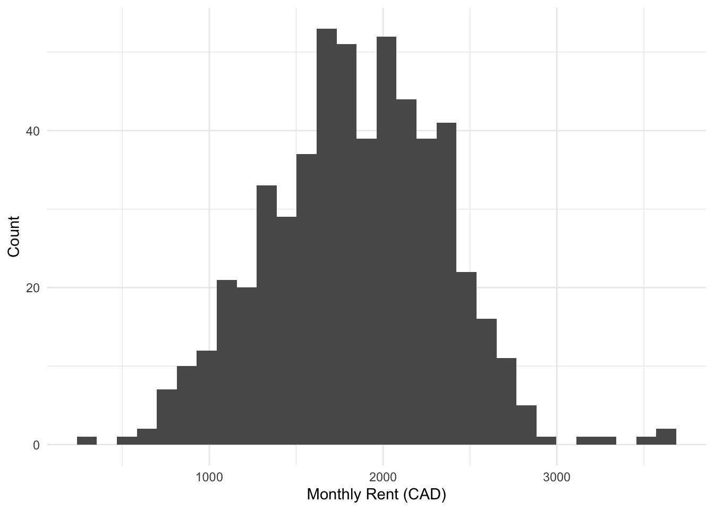
# Binned means for apartment area
area_binned <- train_data |>
mutate(
area_bin = ntile(area_sqft, 10)
) |>
group_by(area_bin) |>
summarize(
mean_area = mean(area_sqft),
mean_rent = mean(monthly_rent),
.groups = "drop"
)
# Monthly rent versus apartment area
ggplot(
train_data,
aes(x = area_sqft, y = monthly_rent)
) +
geom_point(alpha = 0.25) +
geom_point(
data = area_binned,
aes(
x = mean_area,
y = mean_rent
),
size = 3
) +
geom_line(
data = area_binned,
aes(
x = mean_area,
y = mean_rent
)
) +
labs(
x = "Area (square feet)",
y = "Monthly Rent (CAD)"
) +
theme_minimal()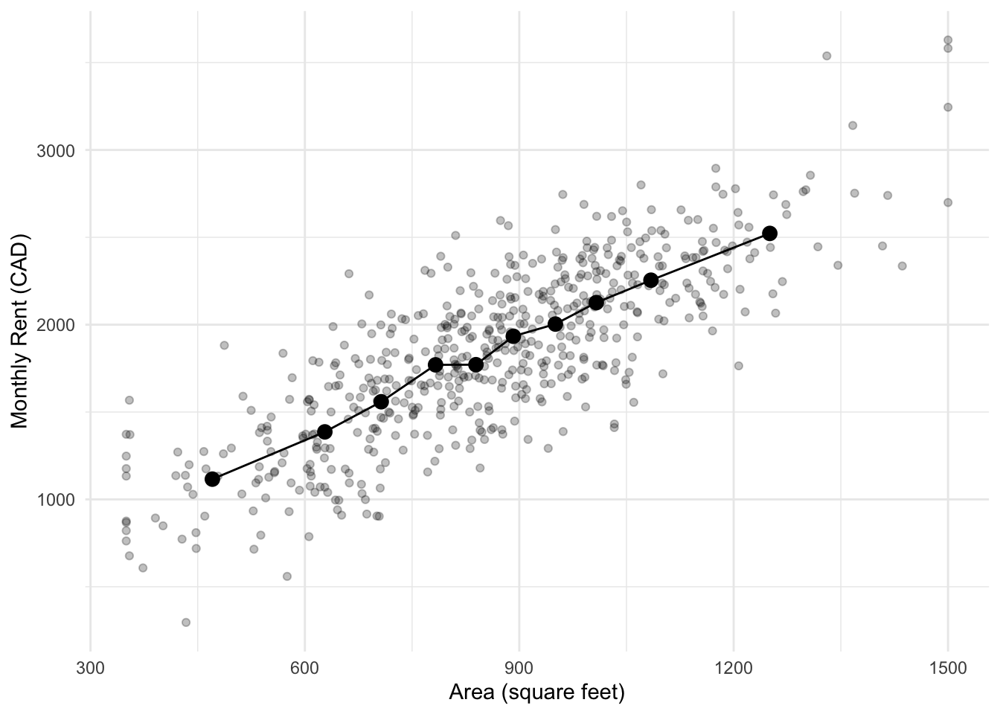
# Monthly rent versus distance from downtown
ggplot(
train_data,
aes(
x = distance_downtown_km,
y = monthly_rent
)
) +
geom_point(alpha = 0.3) +
geom_smooth(
method = "lm",
se = FALSE
) +
labs(
x = "Distance from Downtown (km)",
y = "Monthly Rent (CAD)"
) +
theme_minimal()`geom_smooth()` using formula = 'y ~ x'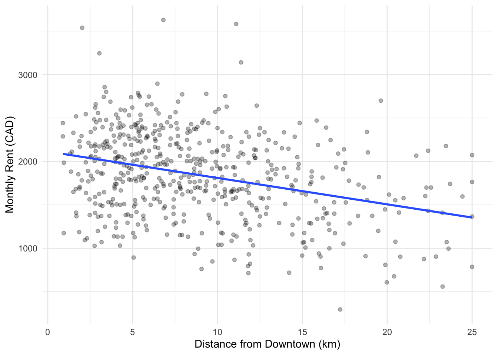
# Furnished versus unfurnished
ggplot(
train_data,
aes(
x = furnished,
y = monthly_rent
)
) +
geom_boxplot() +
labs(
x = "Furnished",
y = "Monthly Rent (CAD)"
) +
theme_minimal()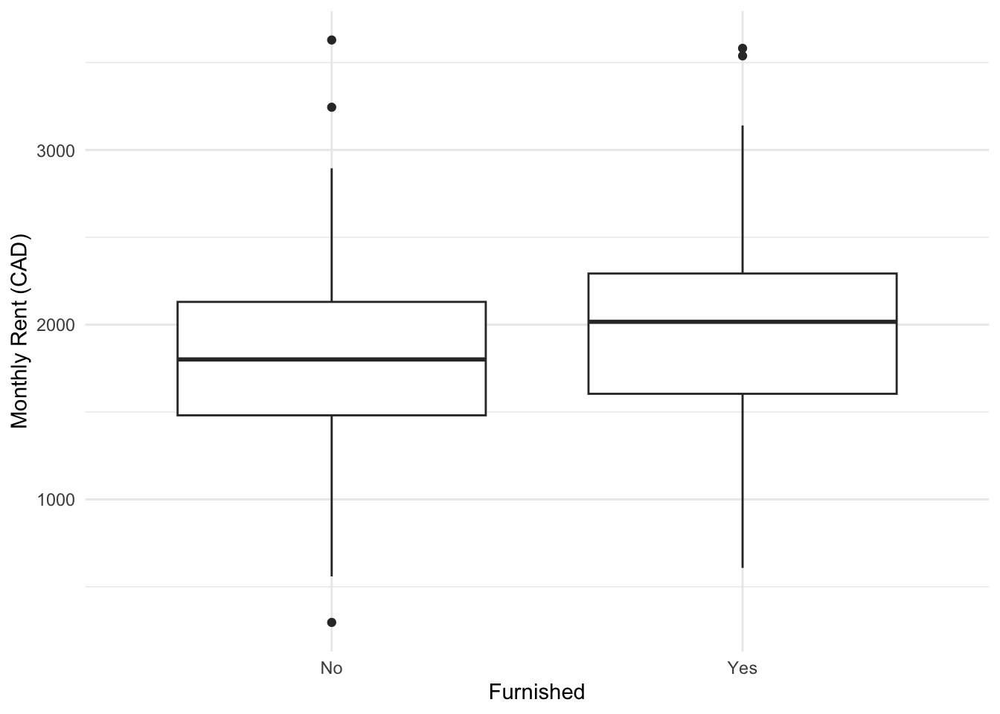
# Neighbourhood comparison
ggplot(
train_data,
aes(
x = neighbourhood,
y = monthly_rent
)
) +
geom_boxplot() +
labs(
x = "Neighbourhood",
y = "Monthly Rent (CAD)"
) +
theme_minimal()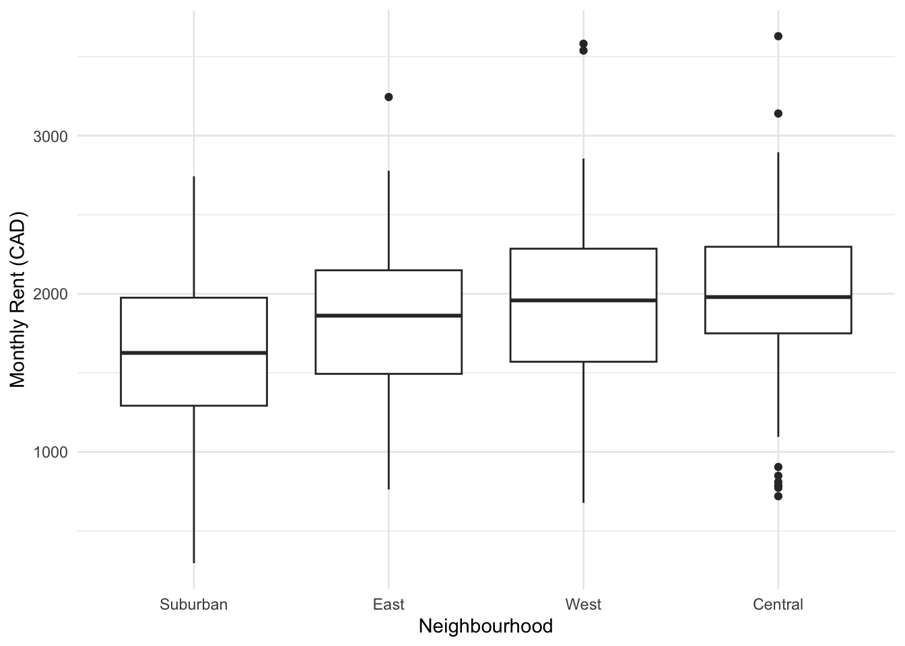
############################################################
# Exploratory Data Analysis
############################################################
# Response summary
print(
train_data["monthly_rent"].describe()
)
# Distribution of monthly rent
plt.figure(figsize=(6, 4))
plt.hist(
train_data["monthly_rent"],
bins=30
)
plt.xlabel("Monthly Rent (CAD)")
plt.ylabel("Count")
plt.tight_layout()
plt.show()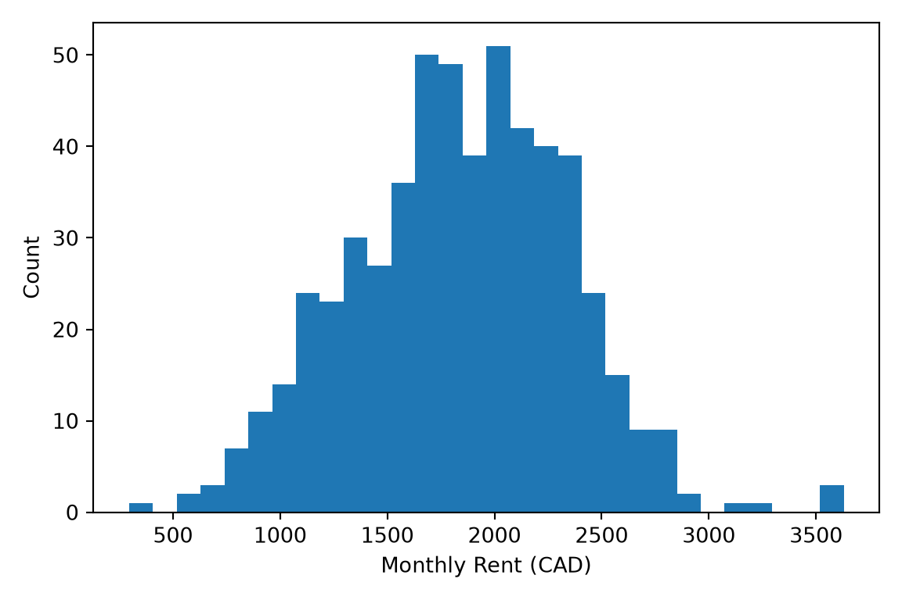
# Binned means for apartment area
area_binned_data = train_data.copy()
area_binned_data["area_bin"] = pd.qcut(
area_binned_data["area_sqft"],
10,
labels=False,
duplicates="drop"
)
area_binned = (
area_binned_data
.groupby(
"area_bin",
observed=True
)
.agg(
mean_area=("area_sqft", "mean"),
mean_rent=("monthly_rent", "mean")
)
.reset_index()
)
# Monthly rent versus apartment area
plt.figure(figsize=(6, 4))
plt.scatter(
train_data["area_sqft"],
train_data["monthly_rent"],
alpha=0.25
)
plt.plot(
area_binned["mean_area"],
area_binned["mean_rent"],
marker="o"
)
plt.xlabel("Area (square feet)")
plt.ylabel("Monthly Rent (CAD)")
plt.tight_layout()
plt.show()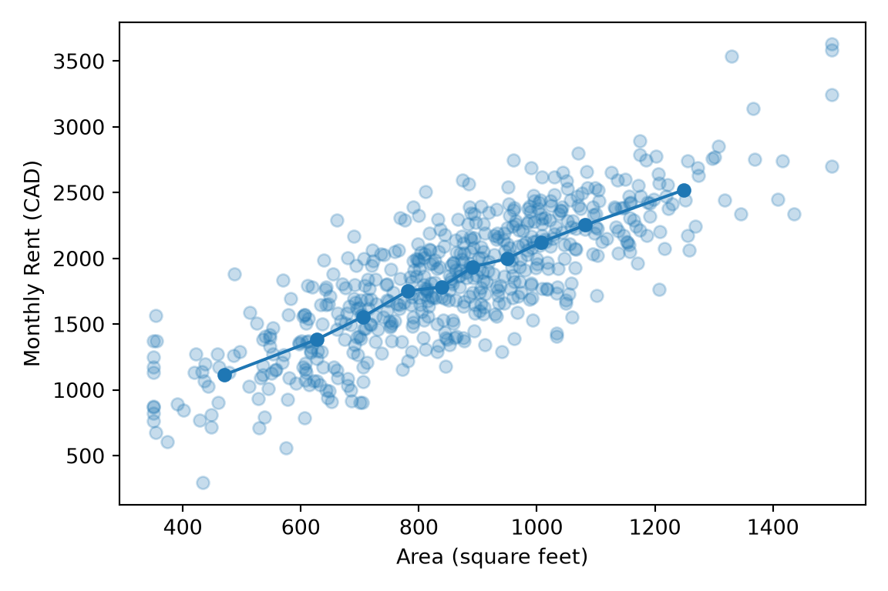
# Monthly rent versus distance from downtown
plt.figure(figsize=(6, 4))
sns.regplot(
data=train_data,
x="distance_downtown_km",
y="monthly_rent",
scatter_kws={"alpha": 0.3}
)
plt.tight_layout()
plt.show()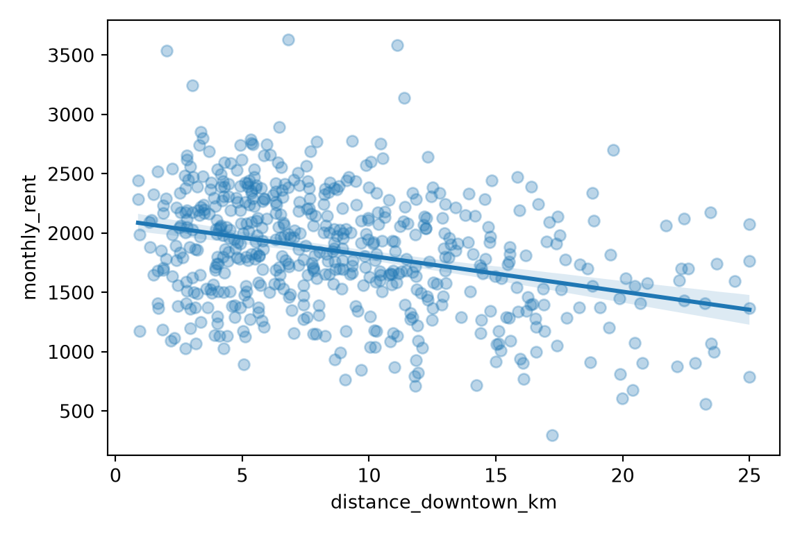
# Furnished versus unfurnished
plt.figure(figsize=(6, 4))
sns.boxplot(
data=train_data,
x="furnished",
y="monthly_rent"
)
plt.tight_layout()
plt.show()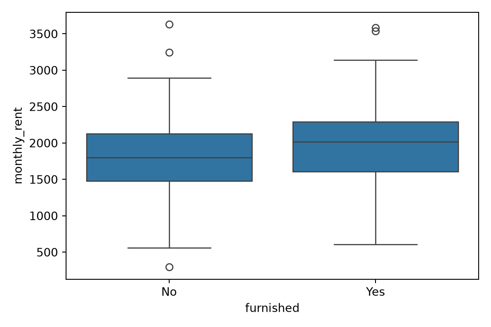
# Neighbourhood comparison
plt.figure(figsize=(7, 4))
sns.boxplot(
data=train_data,
x="neighbourhood",
y="monthly_rent"
)
plt.tight_layout()
plt.show()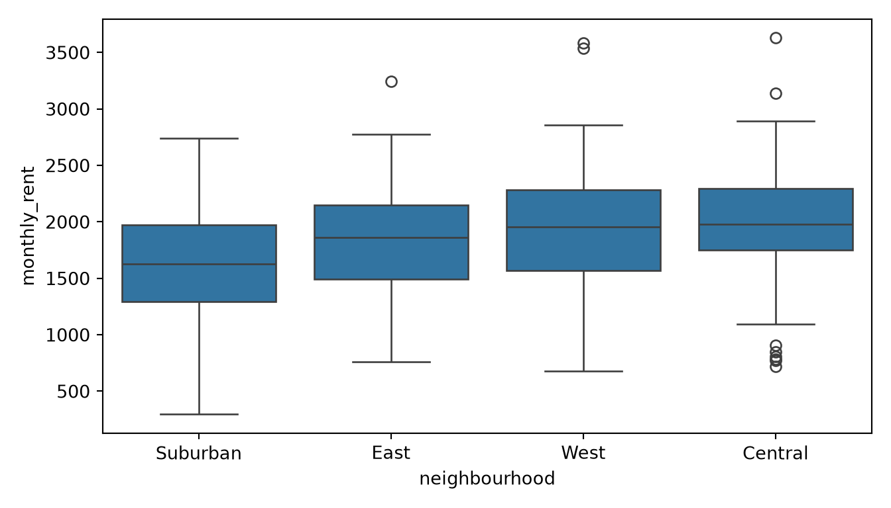
The training data contain a mean monthly rent of approximately 1,842 CAD, with substantial variation across apartment listings.
The relationship between area_sqft and monthly_rent is clearly positive. The grouped means increase approximately linearly as apartment area increases, so a linear relationship between apartment area and the conditional mean of monthly rent is a reasonable working approximation.
Apartments farther from downtown tend to have lower rents. Furnished apartments generally have higher rents than unfurnished apartments, and the distribution of rent also differs across neighbourhoods. These patterns motivate considering additional regressors after first examining a simple area-only OLS model.
The marginal distribution of monthly_rent itself does not need to be perfectly Normal for OLS. The relevant classical Normality assumption concerns the errors conditional on the regressors and will be assessed using model residuals.
Simple OLS Regression and Goodness of Fit
We first consider a simple OLS model relating monthly rent to apartment area:
\[ E(Y_i \mid X_{i,\text{area}}) = \beta_0 + \beta_1 X_{i,\text{area}}, \]
where \(Y_i\) is monthly_rent and \(X_{i,\text{area}}\) is area_sqft.
Using the training data:
- Fit the simple OLS regression model.
- Report the coefficient estimates, \(R^2\), adjusted \(R^2\), and the 95% confidence interval for the
area_sqftcoefficient. - Interpret the estimated coefficient for
area_sqft. - Assess goodness of fit using:
- a residuals-versus-fitted plot,
- a Q-Q plot of standardized residuals,
- the Breusch-Pagan test,
- the Durbin-Watson statistic,
- Cook’s Distance using \(4/n\) as a screening guideline.
- Based on the diagnostics, is the simple OLS model reasonable enough to continue investigating?
Answer: Simple OLS Regression and Goodness of Fit
Click here to reveal the answer!
############################################################
# Simple OLS Regression and Goodness of Fit
############################################################
# Fit the simple model
mod_simple <- lm(
monthly_rent ~ area_sqft,
data = train_data
)
# Coefficient estimates and confidence intervals
simple_results <- tidy(
mod_simple,
conf.int = TRUE,
conf.level = 0.95
)
simple_results# A tibble: 2 × 7
term estimate std.error statistic p.value conf.low conf.high
<chr> <dbl> <dbl> <dbl> <dbl> <dbl> <dbl>
1 (Intercept) 273. 50.3 5.42 8.92e- 8 174. 372.
2 area_sqft 1.82 0.0567 32.2 1.09e-128 1.71 1.94# A tibble: 1 × 2
r.squared adj.r.squared
<dbl> <dbl>
1 0.654 0.653# Diagnostic data
simple_diag <- augment(mod_simple) |>
mutate(
observation = row_number(),
cooks_distance = cooks.distance(mod_simple)
)
# Residuals versus fitted values
ggplot(
simple_diag,
aes(
x = .fitted,
y = .std.resid
)
) +
geom_point(alpha = 0.6) +
geom_hline(
yintercept = 0,
linetype = "dashed"
) +
geom_smooth(
method = "loess",
se = FALSE
) +
labs(
x = "Fitted Values",
y = "Standardized Residuals"
) +
theme_minimal()`geom_smooth()` using formula = 'y ~ x'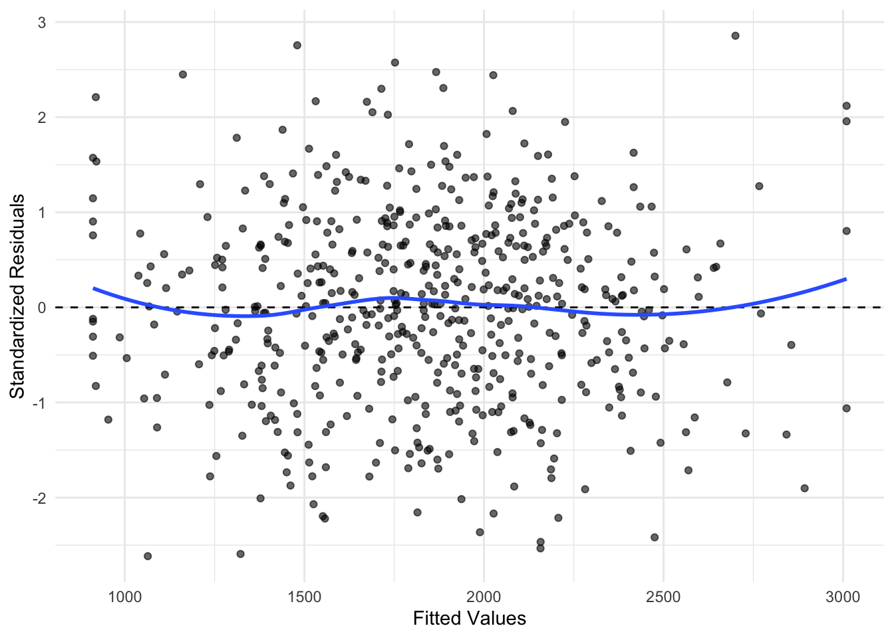
# Q-Q plot
ggplot(
simple_diag,
aes(sample = .std.resid)
) +
stat_qq() +
stat_qq_line() +
labs(
x = "Theoretical Quantiles",
y = "Standardized Residuals"
) +
theme_minimal()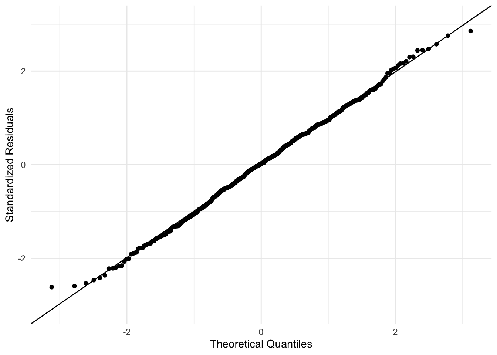
# Breusch-Pagan test
bptest(mod_simple)
studentized Breusch-Pagan test
data: mod_simple
BP = 0.013671, df = 1, p-value = 0.9069# Durbin-Watson test
dwtest(mod_simple)
Durbin-Watson test
data: mod_simple
DW = 2.0088, p-value = 0.5401
alternative hypothesis: true autocorrelation is greater than 0# Cook's Distance
cooks_threshold_simple <-
4 / nrow(simple_diag)
ggplot(
simple_diag,
aes(
x = observation,
y = cooks_distance
)
) +
geom_segment(
aes(
xend = observation,
y = 0,
yend = cooks_distance
)
) +
geom_point() +
geom_hline(
yintercept = cooks_threshold_simple,
linetype = "dashed"
) +
labs(
x = "Observation",
y = "Cook's Distance"
) +
theme_minimal()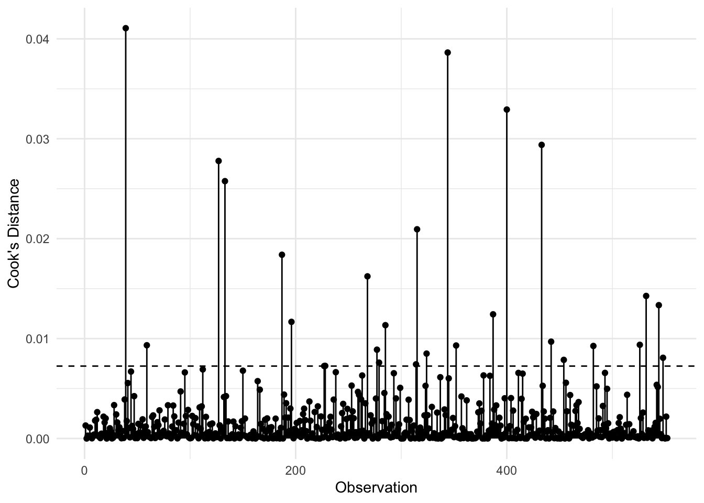
Maximum Cook's Distance: 0.0410704 cat(
"4/n screening guideline:",
cooks_threshold_simple,
"\n"
)4/n screening guideline: 0.007246377 ############################################################
# Simple OLS Regression and Goodness of Fit
############################################################
# Fit the simple model
mod_simple = smf.ols(
"monthly_rent ~ area_sqft",
data=train_data
).fit()
# Coefficient estimates and confidence intervals
simple_ci = mod_simple.conf_int(
alpha=0.05
)
simple_results = pd.DataFrame({
"estimate": mod_simple.params,
"std_error": mod_simple.bse,
"t_statistic": mod_simple.tvalues,
"p_value": mod_simple.pvalues,
"conf_low": simple_ci[0],
"conf_high": simple_ci[1]
})
print(simple_results)
print(
"R-squared:",
round(mod_simple.rsquared, 4)
)
print(
"Adjusted R-squared:",
round(
mod_simple.rsquared_adj,
4
)
)
# Diagnostics
simple_influence = OLSInfluence(
mod_simple
)
simple_std_resid = (
simple_influence
.resid_studentized_internal
)
# Residuals versus fitted values
plt.figure(figsize=(6, 4))
sns.regplot(
x=mod_simple.fittedvalues,
y=simple_std_resid,
lowess=True,
scatter_kws={"alpha": 0.6},
line_kws={"linewidth": 2}
)
plt.axhline(
0,
linestyle="--"
)
plt.xlabel("Fitted Values")
plt.ylabel("Standardized Residuals")
plt.tight_layout()
plt.show()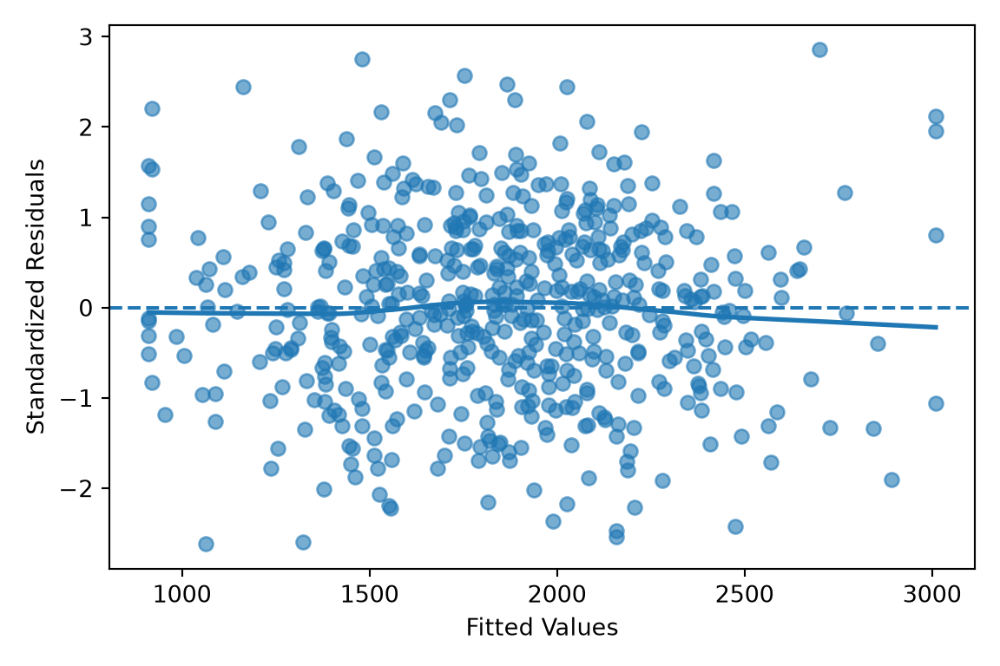
# Q-Q plot
sm.qqplot(
simple_std_resid,
line="45"
)
plt.tight_layout()
plt.show()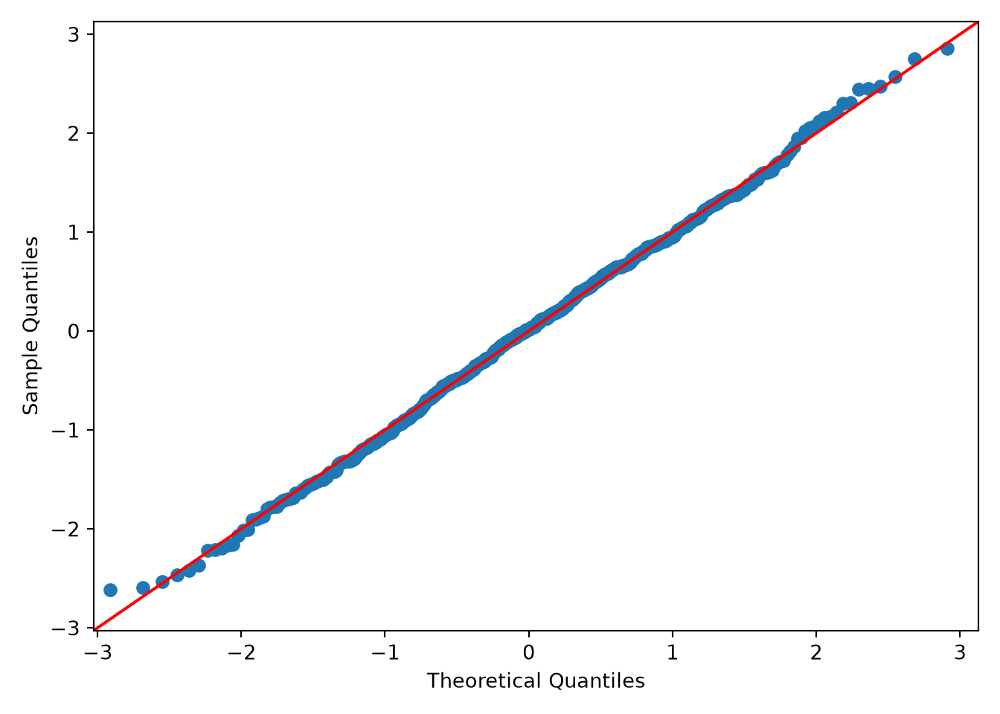
# Breusch-Pagan test
bp_stat, bp_pvalue, bp_fstat, bp_fpvalue = (
het_breuschpagan(
mod_simple.resid,
mod_simple.model.exog
)
)
print(
f"Breusch-Pagan p-value: "
f"{bp_pvalue:.4f}"
)
# Durbin-Watson statistic
dw_stat = durbin_watson(
mod_simple.resid
)
print(
f"Durbin-Watson statistic: "
f"{dw_stat:.4f}"
)
# Cook's Distance
simple_cooks_d = (
simple_influence
.cooks_distance[0]
)
cooks_threshold_simple = (
4 / len(train_data)
)
plt.figure(figsize=(7, 4))
plt.stem(
np.arange(
len(simple_cooks_d)
),
simple_cooks_d,
markerfmt=","
)
plt.axhline(
cooks_threshold_simple,
linestyle="--"
)
plt.xlabel("Observation")
plt.ylabel("Cook's Distance")
plt.tight_layout()
plt.show()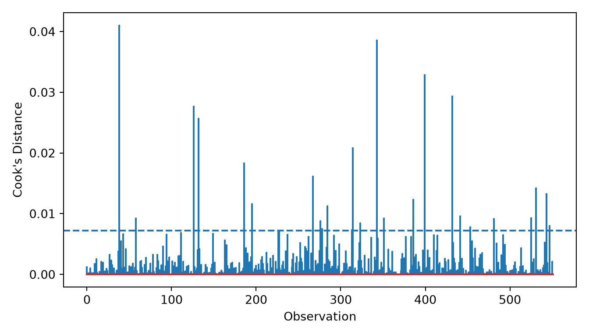
print(
"Maximum Cook's Distance:",
simple_cooks_d.max()
)
print(
"4/n screening guideline:",
cooks_threshold_simple
)The estimated coefficient for area_sqft is approximately 1.82. Therefore, within the training data, each additional square foot of apartment area is associated with an estimated increase of approximately 1.82 CAD in mean monthly rent. Equivalently, a 100-square-foot increase in apartment area is associated with an estimated increase of approximately 182 CAD in mean monthly rent.
The 95% confidence interval for the training-data slope is approximately 1.71 to 1.94 CAD per square foot. The training \(R^2\) is approximately 0.654, and the adjusted \(R^2\) is approximately 0.653. Thus, apartment area alone accounts for a substantial portion of the variation in monthly rent, although considerable variation remains unexplained.
The residuals-versus-fitted plot shows residuals distributed around zero with no pronounced funnel-shaped pattern. However, the smoothed trend shows some mild curvature across the range of fitted values, particularly near the extremes. This suggests that the simple area-only model may not capture all of the systematic structure in monthly rent.
The Q-Q plot follows the reference line closely over most of the distribution, with only minor departures in the tails. Therefore, the Normality assumption appears to be a reasonable working approximation for the residuals.
The Breusch-Pagan p-value is approximately 0.907, providing no statistical evidence of non-constant error variance at the 5% significance level. The Durbin-Watson statistic is approximately 2.01, which is consistent with little first-order autocorrelation. The cross-sectional study design is also important because the observations represent different apartment listings rather than repeated measurements ordered through time.
The maximum Cook’s Distance is approximately 0.041, compared with a \(4/n\) screening guideline of approximately 0.0072. Some observations therefore warrant closer inspection, but exceeding this guideline does not by itself justify removing an observation.
Taken together, the diagnostics do not indicate a severe violation that would make the simple OLS model unusable. However, the mild pattern in the residuals and the exploratory analysis suggest that apartment area alone does not capture all of the systematic variation in monthly rent. This motivates extending the model to include additional apartment characteristics.
Extended OLS Regression and Goodness of Fit
We now consider the following extended OLS model:
\[ \begin{aligned} E(Y_i \mid \mathbf{X}_i) ={}& \beta_0 + \beta_1 \text{area\_sqft}_i + \beta_2 \text{bedrooms}_i \\ &+ \beta_3 \text{distance\_downtown\_km}_i + \beta_4 \text{building\_age\_years}_i \\ &+ \beta_5 \text{furnished}_i + \text{neighbourhood terms}. \end{aligned} \]
Using the training data:
- Fit the extended OLS model.
- Report the coefficient estimates, \(R^2\), and adjusted \(R^2\).
- Compare the adjusted \(R^2\) with the simple model.
- Assess goodness of fit using:
- a residuals-versus-fitted plot,
- a Q-Q plot,
- the Breusch-Pagan test,
- the Durbin-Watson statistic,
- variance inflation factors (VIFs),
- Cook’s Distance.
- Based on the diagnostics, is the extended model reasonable enough to carry forward to the Results section?
Answer: Extended OLS Regression and Goodness of Fit
Click here to reveal the answer!
############################################################
# Extended OLS Regression and Goodness of Fit
############################################################
extended_formula <-
monthly_rent ~
area_sqft +
bedrooms +
distance_downtown_km +
building_age_years +
furnished +
neighbourhood
# Fit the extended model
mod_extended <- lm(
extended_formula,
data = train_data
)
# Coefficient-level results
extended_results <- tidy(
mod_extended,
conf.int = TRUE,
conf.level = 0.95
)
extended_results# A tibble: 9 × 7
term estimate std.error statistic p.value conf.low conf.high
<chr> <dbl> <dbl> <dbl> <dbl> <dbl> <dbl>
1 (Intercept) 454. 43.3 10.5 1.69e-23 369. 539.
2 area_sqft 1.53 0.0592 25.9 7.07e-97 1.42 1.65
3 bedrooms 105. 16.1 6.55 1.34e-10 73.7 137.
4 distance_downtown_km -27.6 1.51 -18.3 1.91e-58 -30.6 -24.7
5 building_age_years -2.49 0.483 -5.15 3.65e- 7 -3.44 -1.54
6 furnishedYes 159. 17.7 9.01 3.57e-18 124. 194.
7 neighbourhoodEast 155. 23.0 6.72 4.54e-11 109. 200.
8 neighbourhoodWest 204. 23.3 8.78 2.09e-17 159. 250.
9 neighbourhoodCentral 351. 23.2 15.1 2.27e-43 305. 396. # A tibble: 1 × 2
r.squared adj.r.squared
<dbl> <dbl>
1 0.857 0.855# Diagnostic data
extended_diag <- augment(
mod_extended
) |>
mutate(
observation = row_number(),
cooks_distance =
cooks.distance(mod_extended)
)
# Residuals versus fitted values
ggplot(
extended_diag,
aes(
x = .fitted,
y = .std.resid
)
) +
geom_point(alpha = 0.6) +
geom_hline(
yintercept = 0,
linetype = "dashed"
) +
geom_smooth(
method = "loess",
se = FALSE
) +
labs(
x = "Fitted Values",
y = "Standardized Residuals"
) +
theme_minimal()`geom_smooth()` using formula = 'y ~ x'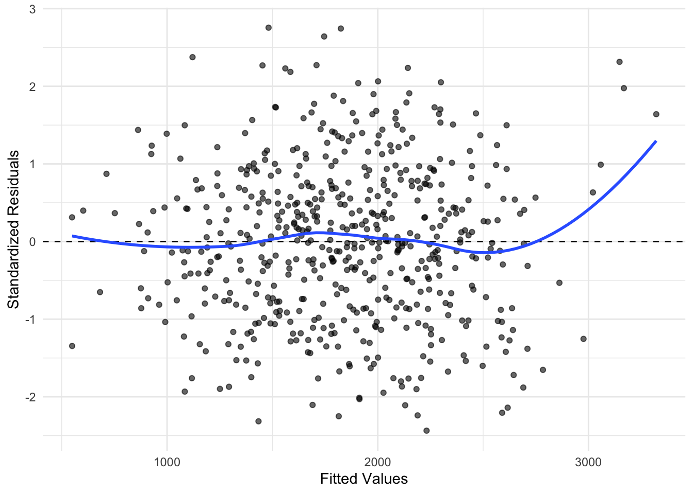
# Q-Q plot
ggplot(
extended_diag,
aes(sample = .std.resid)
) +
stat_qq() +
stat_qq_line() +
labs(
x = "Theoretical Quantiles",
y = "Standardized Residuals"
) +
theme_minimal()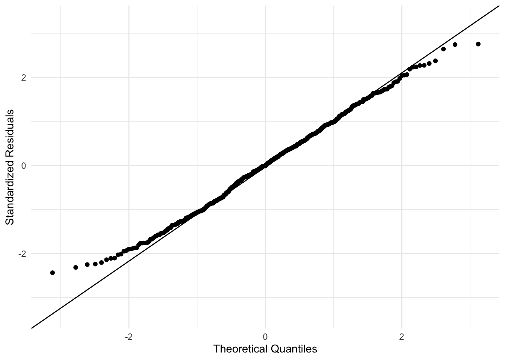
# Breusch-Pagan test
bptest(mod_extended)
studentized Breusch-Pagan test
data: mod_extended
BP = 12.091, df = 8, p-value = 0.1472# Durbin-Watson test
dwtest(mod_extended)
Durbin-Watson test
data: mod_extended
DW = 1.9137, p-value = 0.1547
alternative hypothesis: true autocorrelation is greater than 0# Variance inflation factors
vif(mod_extended) GVIF Df GVIF^(1/(2*Df))
area_sqft 2.616753 1 1.617638
bedrooms 2.615067 1 1.617117
distance_downtown_km 1.007692 1 1.003838
building_age_years 1.007178 1 1.003582
furnished 1.012187 1 1.006075
neighbourhood 1.029930 3 1.004927# Cook's Distance
cooks_threshold_extended <-
4 / nrow(extended_diag)
ggplot(
extended_diag,
aes(
x = observation,
y = cooks_distance
)
) +
geom_segment(
aes(
xend = observation,
y = 0,
yend = cooks_distance
)
) +
geom_point() +
geom_hline(
yintercept =
cooks_threshold_extended,
linetype = "dashed"
) +
labs(
x = "Observation",
y = "Cook's Distance"
) +
theme_minimal()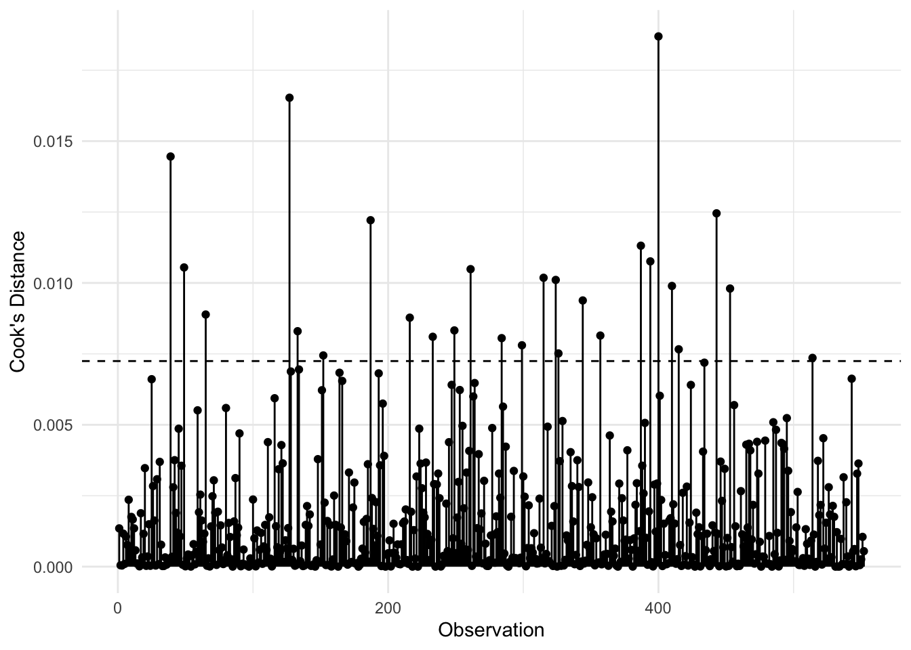
Maximum Cook's Distance: 0.01869068 cat(
"4/n screening guideline:",
cooks_threshold_extended,
"\n"
)4/n screening guideline: 0.007246377 ############################################################
# Extended OLS Regression and Goodness of Fit
############################################################
extended_formula = (
"monthly_rent ~ area_sqft + bedrooms "
"+ distance_downtown_km "
"+ building_age_years "
"+ C(furnished, Treatment(reference='No')) "
"+ C(neighbourhood, "
"Treatment(reference='Suburban'))"
)
# Fit the extended model
mod_extended = smf.ols(
extended_formula,
data=train_data
).fit()
print(
mod_extended.summary()
)
print(
"R-squared:",
round(
mod_extended.rsquared,
4
)
)
print(
"Adjusted R-squared:",
round(
mod_extended.rsquared_adj,
4
)
)
# Diagnostics
extended_influence = OLSInfluence(
mod_extended
)
extended_std_resid = (
extended_influence
.resid_studentized_internal
)
# Residuals versus fitted values
plt.figure(figsize=(6, 4))
sns.regplot(
x=mod_extended.fittedvalues,
y=extended_std_resid,
lowess=True,
scatter_kws={"alpha": 0.6},
line_kws={"linewidth": 2}
)
plt.axhline(
0,
linestyle="--"
)
plt.xlabel("Fitted Values")
plt.ylabel("Standardized Residuals")
plt.tight_layout()
plt.show()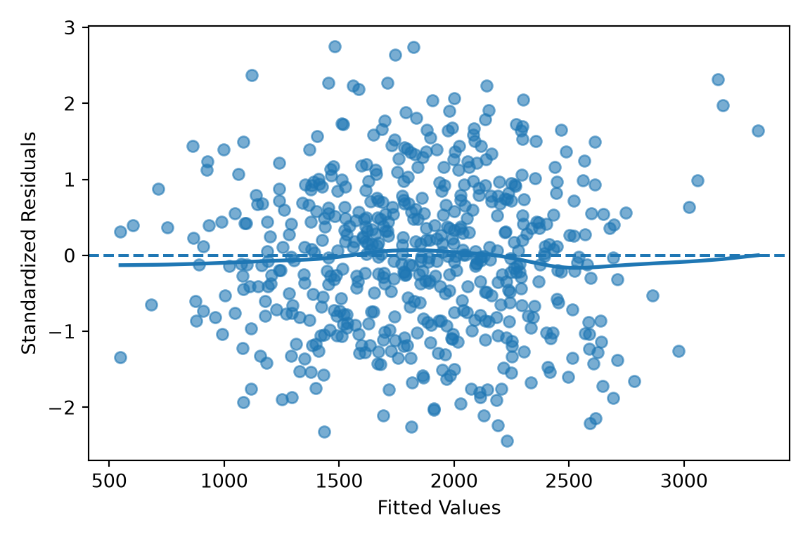
# Q-Q plot
sm.qqplot(
extended_std_resid,
line="45"
)
plt.tight_layout()
plt.show()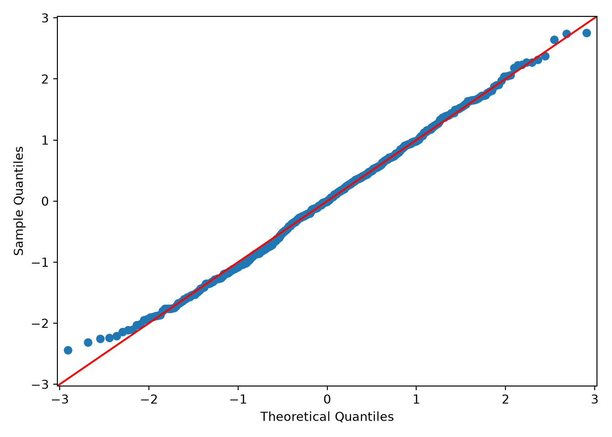
# Breusch-Pagan test
bp_stat, bp_pvalue, bp_fstat, bp_fpvalue = (
het_breuschpagan(
mod_extended.resid,
mod_extended.model.exog
)
)
print(
f"Breusch-Pagan p-value: "
f"{bp_pvalue:.4f}"
)
# Durbin-Watson statistic
dw_stat = durbin_watson(
mod_extended.resid
)
print(
f"Durbin-Watson statistic: "
f"{dw_stat:.4f}"
)
# VIFs
exog = pd.DataFrame(
mod_extended.model.exog,
columns=
mod_extended.model.exog_names
)
vif_table = pd.DataFrame({
"term": exog.columns,
"VIF": [
variance_inflation_factor(
exog.values,
i
)
for i in range(
exog.shape[1]
)
]
})
print(
vif_table[
vif_table["term"]
!= "Intercept"
]
)
# Cook's Distance
extended_cooks_d = (
extended_influence
.cooks_distance[0]
)
cooks_threshold_extended = (
4 / len(train_data)
)
plt.figure(figsize=(7, 4))
plt.stem(
np.arange(
len(extended_cooks_d)
),
extended_cooks_d,
markerfmt=","
)
plt.axhline(
cooks_threshold_extended,
linestyle="--"
)
plt.xlabel("Observation")
plt.ylabel("Cook's Distance")
plt.tight_layout()
plt.show()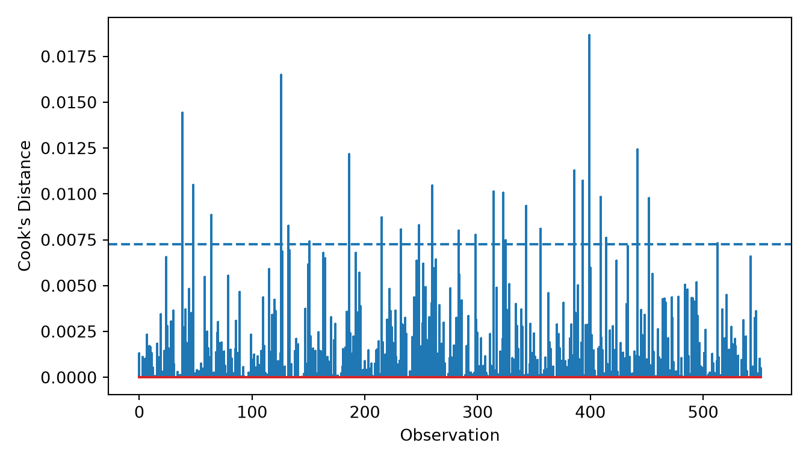
print(
"Maximum Cook's Distance:",
extended_cooks_d.max()
)
print(
"4/n screening guideline:",
cooks_threshold_extended
)The extended model has a training \(R^2\) of approximately 0.857 and an adjusted \(R^2\) of approximately 0.855. This is substantially higher than the adjusted \(R^2\) of approximately 0.653 from the simple area-only model, indicating that the additional apartment characteristics account for a considerable amount of variation in monthly rent beyond apartment area alone.
The residuals-versus-fitted plot shows residuals distributed around zero without a pronounced funnel-shaped pattern. The smoothed trend is relatively close to zero through most of the fitted-value range, although some curvature remains. In particular, the trend increases noticeably at the largest fitted values.
Because relatively few observations occur in this region, this pattern should be interpreted cautiously, but it suggests that the extended linear model may not capture all of the systematic structure for apartments with particularly high fitted rents.
The Breusch-Pagan p-value is approximately 0.147, so there is no statistical evidence of non-constant error variance at the 5% significance level. Thus, although some structure is visible in the smoothed residual trend, there is no strong evidence of a heteroscedasticity problem.
The Durbin-Watson statistic is approximately 1.91, which is reasonably close to 2 and is consistent with little first-order autocorrelation. The cross-sectional study design also supports treating the apartment listings as approximately independent observations.
The VIF values for the non-intercept terms are all modest. The largest values are approximately 2.62 for area_sqft and bedrooms, reflecting the natural relationship between apartment size and number of bedrooms. These values do not indicate severe multicollinearity.
The maximum Cook’s Distance is approximately 0.019, compared with the \(4/n\) screening guideline of approximately 0.0072. A small number of observations may therefore warrant closer inspection, but exceeding this guideline does not by itself justify removing an observation.
Taken together, the extended model provides a substantial improvement in fit over the simple area-only model, and the diagnostics do not reveal a severe violation that would prevent us from proceeding. Some residual structure remains, particularly among apartments with the largest fitted rents, so the model should still be viewed as a reasonable working approximation rather than a perfect description of the data. We therefore carry the pre-specified extended OLS model forward to the Results stage.
Results
We now separate the final analysis into inference and prediction.
For inference, we fit the pre-specified extended model structure to the protected test data. For prediction, we retain the model fitted on the training data and apply it unchanged to the test data.
Inferential Analysis
- Fit the pre-specified extended OLS model to the protected test data.
- Report the coefficient estimates, standard errors, p-values, and 95% confidence intervals.
- At \(\alpha = 0.05\), which model terms show statistical evidence of association with the conditional mean of monthly rent?
- Interpret the coefficients for:
-
distance_downtown_km, -
furnished = Yes, -
neighbourhood = Centralrelative toSuburban.
-
Predictive Analysis
- Use the training-fitted extended model to predict
monthly_rentfor every observation in the test data. Do not refit the model. - Compute MAE, MSE, RMSE, and test-set \(R^2\).
- Consider a new apartment with:
-
area_sqft = 900, -
bedrooms = 2, -
distance_downtown_km = 5, -
building_age_years = 10, -
furnished = Yes, -
neighbourhood = West.
- the point prediction,
- a 95% confidence interval for the expected mean monthly rent,
- a 95% prediction interval for one new apartment.
-
Answer: Results
Click here to reveal the answer!
############################################################
# Results
############################################################
# ---------------------------
# Inferential Analysis
# ---------------------------
mod_extended_test <- lm(
extended_formula,
data = test_data
)
extended_test_results <- tidy(
mod_extended_test,
conf.int = TRUE,
conf.level = 0.95
)
extended_test_results# A tibble: 9 × 7
term estimate std.error statistic p.value conf.low conf.high
<chr> <dbl> <dbl> <dbl> <dbl> <dbl> <dbl>
1 (Intercept) 564. 78.4 7.19 4.56e-11 409. 719.
2 area_sqft 1.58 0.103 15.3 1.02e-30 1.37 1.78
3 bedrooms 98.2 26.4 3.72 2.94e- 4 46.0 150.
4 distance_downtown_km -31.2 2.74 -11.4 3.62e-21 -36.6 -25.7
5 building_age_years -5.19 1.05 -4.96 2.21e- 6 -7.26 -3.12
6 furnishedYes 176. 35.1 5.02 1.71e- 6 106. 245.
7 neighbourhoodEast 109. 41.8 2.61 1.01e- 2 26.5 192.
8 neighbourhoodWest 227. 44.4 5.11 1.14e- 6 139. 315.
9 neighbourhoodCentral 347. 44.0 7.89 1.10e-12 260. 434. # ---------------------------
# Predictive Analysis
# ---------------------------
# Apply the training-fitted model unchanged
y_test <- test_data$monthly_rent
y_pred <- predict(
mod_extended,
newdata = test_data
)
mae <- mean(
abs(y_test - y_pred)
)
mse <- mean(
(y_test - y_pred)^2
)
rmse <- sqrt(mse)
r2_test <- 1 -
sum((y_test - y_pred)^2) /
sum(
(y_test - mean(y_test))^2
)
cat(sprintf(
"MAE: %.2f\nMSE: %.2f\nRMSE: %.2f\nTest R-squared: %.4f\n",
mae,
mse,
rmse,
r2_test
))MAE: 143.89
MSE: 33980.86
RMSE: 184.34
Test R-squared: 0.8748# New apartment profile
new_apartment <- tibble::tibble(
area_sqft = 900,
bedrooms = 2,
distance_downtown_km = 5,
building_age_years = 10,
furnished = factor(
"Yes",
levels =
levels(train_data$furnished)
),
neighbourhood = factor(
"West",
levels =
levels(
train_data$neighbourhood
)
)
)
# Confidence interval for expected mean rent
mean_prediction <- predict(
mod_extended,
newdata = new_apartment,
interval = "confidence",
level = 0.95
)
# Prediction interval for one new apartment
individual_prediction <- predict(
mod_extended,
newdata = new_apartment,
interval = "prediction",
level = 0.95
)
mean_prediction fit lwr upr
1 2244.556 2199.055 2290.057individual_prediction fit lwr upr
1 2244.556 1867.412 2621.7############################################################
# Results
############################################################
# ---------------------------
# Inferential Analysis
# ---------------------------
mod_extended_test = smf.ols(
extended_formula,
data=test_data
).fit()
extended_test_ci = (
mod_extended_test
.conf_int(alpha=0.05)
)
extended_test_results = pd.DataFrame({
"estimate":
mod_extended_test.params,
"std_error":
mod_extended_test.bse,
"t_statistic":
mod_extended_test.tvalues,
"p_value":
mod_extended_test.pvalues,
"conf_low":
extended_test_ci[0],
"conf_high":
extended_test_ci[1]
})
print(
extended_test_results
)
# ---------------------------
# Predictive Analysis
# ---------------------------
# Apply the training-fitted model unchanged
y_test = test_data["monthly_rent"]
y_pred = mod_extended.predict(
test_data
)
mae = mean_absolute_error(
y_test,
y_pred
)
mse = mean_squared_error(
y_test,
y_pred
)
rmse = np.sqrt(mse)
r2_test = r2_score(
y_test,
y_pred
)
print(f"MAE: {mae:.2f}")
print(f"MSE: {mse:.2f}")
print(f"RMSE: {rmse:.2f}")
print(
f"Test R-squared: "
f"{r2_test:.4f}"
)
# New apartment profile
new_apartment = pd.DataFrame({
"area_sqft": [900],
"bedrooms": [2],
"distance_downtown_km": [5],
"building_age_years": [10],
"furnished": ["Yes"],
"neighbourhood": ["West"]
})
new_prediction = (
mod_extended
.get_prediction(
new_apartment
)
.summary_frame(
alpha=0.05
)
)
print(
new_prediction[
[
"mean",
"mean_ci_lower",
"mean_ci_upper",
"obs_ci_lower",
"obs_ci_upper"
]
]
)Inferential Analysis
On the protected test data:
-
distance_downtown_kmhas an estimated coefficient of approximately -31.15, with a 95% confidence interval from approximately -36.58 to -25.73. Holding the other regressors fixed, each additional kilometre from downtown is associated with an estimated decrease of about 31 CAD in mean monthly rent. -
furnished = Yeshas an estimated coefficient of approximately 175.88, with a 95% confidence interval from approximately 106.49 to 245.26. Holding the other regressors fixed, furnished apartments are estimated to have about 176 CAD higher mean monthly rent than unfurnished apartments. -
neighbourhood = Centralhas an estimated coefficient of approximately 347.27, with a 95% confidence interval from approximately 260.23 to 434.31. Holding the other regressors fixed, apartments in the Central neighbourhood are estimated to have about 347 CAD higher mean monthly rent than otherwise comparable apartments in the Suburban reference neighbourhood.
At the 5% significance level, all non-intercept terms in this simulated example show statistical evidence of association with the conditional mean of monthly rent.
These estimates describe associations rather than causal effects.
Predictive Analysis
When the extended model fitted on the training data is applied unchanged to the test data:
- MAE is approximately 143.89 CAD,
- MSE is approximately 33,980.86 CAD\(^2\),
- RMSE is approximately 184.34 CAD,
- test-set \(R^2\) is approximately 0.8748.
Thus, the predicted monthly rents differ from the observed test-set rents by about 144 CAD on average in absolute value. The test-set \(R^2\) indicates strong out-of-sample predictive performance for this simulated dataset.
For the selected new apartment profile, the model predicts a monthly rent of approximately 2,244.56 CAD. The 95% confidence interval for the expected mean monthly rent is approximately 2,199.05 to 2,290.06 CAD, while the 95% prediction interval for one new apartment is approximately 1,867.41 to 2,621.70 CAD.
The prediction interval is wider because it accounts for both uncertainty in estimating the conditional mean and the additional apartment-to-apartment variability around that mean.
Storytelling
Using the results above, write a short summary that could be communicated to a non-technical audience. Your summary should:
- describe the main associations identified by the extended OLS model,
- report the model’s predictive performance,
- mention the prediction for the selected new apartment,
- avoid causal language.
Answer: Storytelling
Click here to reveal the answer!
Answer:
Apartment rent in this simulated dataset is associated with a combination of apartment size, location, building characteristics, and furnishing. After accounting for the other regressors, larger apartments and furnished apartments tend to have higher monthly rents, while apartments farther from downtown and apartments in older buildings tend to have lower rents. Neighbourhood also remains associated with rent after accounting for the other apartment characteristics; for example, apartments in the Central neighbourhood have a higher estimated mean monthly rent than otherwise comparable apartments in the Suburban reference neighbourhood.
The model also performs well from a predictive perspective. When the model fitted on the training data is applied to the protected test data, the MAE is approximately 144 CAD, the RMSE is approximately 184 CAD, and the test-set \(R^2\) is approximately 0.875. For a 900-square-foot, two-bedroom, furnished apartment located 5 km from downtown in the West neighbourhood and in a 10-year-old building, the model predicts a monthly rent of approximately 2,245 CAD. The 95% prediction interval for one apartment with these characteristics ranges from approximately 1,867 CAD to 2,622 CAD.
Because these data are observational, the estimated relationships should be interpreted as associations rather than causal effects. The analysis describes how apartment characteristics and monthly rent vary together in this simulated dataset; it does not establish that changing one characteristic would necessarily cause rent to change by the corresponding regression coefficient.